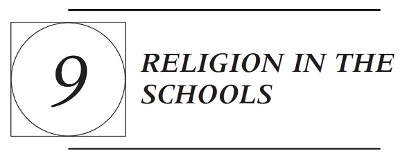

The First Amendment begins: “Congress shall make no law respecting an establishment of religion, or prohibiting the free exercise thereof, or abridging the freedom of speech.…” These three clauses—the Establishment Clause, the Free Exercise Clause, and the Speech Clause—shape the topic of “religion in the schools” in complex and overlapping ways. Painting with a broad brush, one might summarize the basic principles as follows.
The Establishment Clause limits the government’s ability to promote religion in the public schools (and elsewhere). The schools may “teach about” religion, but they may not “teach religion” as true, nor may they lead religious observances. The Establishment Clause also limits the government’s ability to finance private religious activity (including private religious schooling), though in recent years those limits have been sharply curtailed so that the government now has significant leeway to fund religious activity through even-handed programs that include both secular and religious beneficiaries.
The Free Exercise Clause protects private religious activity from at least some kinds of government interference. Religious claimants may ask courts to exempt them from school policies on free exercise grounds, or legislative and executive bodies may decide to grant religious exemptions on their own in the service of religious liberty.
The Speech Clause protects religious speech to the same degree as other speech, and thus some of the most important religious activity may be protected from government regulation as speech rather than as religion.
The most difficult issues involving religion and schooling often implicate two or three of these principles. To take but one example, consider a school’s choice of curriculum. The Establishment Clause limits what a public school may teach. Religious students who object to the school’s curricular choices may argue that exposure to the school’s message burdens their free exercise rights. Both students and teachers also have speech rights. Do these speech rights give teachers or students the right to convey religious messages in the school environment that the state could not convey on its own behalf? Because of the many interactions between the two Religion Clauses and the Speech Clause, the full range of “religion in the schools” issues is addressed in the sequence of Chapters 8
through 10. Chapter 8 covered student speech principles, and a good deal of the most controversial student speech involves religion. Curricular controversies have many facets, and they are treated comprehensively in Chapter 10. This chapter provides the most detailed treatment of the Establishment and Free Exercise Clauses, with special attention to the two “religion in the schools” topics that have been most frequently addressed by the Supreme Court: school prayer and government funding of private religious education.
Section A examines the perennially controversial topic of school prayer. It begins by briefly recounting the history of public schooling in nineteenth-century America, a history which provides crucial background for understanding both the law of school prayer and the law of school funding. The school prayer cases are an ideal place to start because they show us how the Supreme Court has understood the history and purposes of the Establishment Clause. The prayer cases also introduce us to the three doctrinal “tests” most commonly used to decide Establishment Clause cases: the Lemon test, the endorsement test, and the coercion test.
Section B moves from the limits on religious socialization explored in the prayer cases to consider the limits on political socialization presented in the case law concerning the Pledge of Allegiance. The main case is the Supreme Court’s famous decision in West Virginia State Board of Education v. Barnette, 319 U.S. 624 (1943), where the Court upheld the right of Jehovah’s Witnesses to refuse to pledge allegiance to the flag. Section C briefly touches on Establishment Clause questions raised by matters such as religious displays at school and the use of religious music at school concerts.
Section D narrates, in compressed form, the Supreme Court’s changing views on state funding of private religious education. It begins with the Court’s seminal decision in Everson v. Board of Education, 330 U.S. 1 (1947), which contains the seeds of all the doctrinal developments that would follow in this area. Everson described the Establishment Clause as erecting a “wall of separation between church and state,” a metaphor the Court has now abandoned in favor of categories like “formal neutrality” and “true private choice.” These doctrinal shifts culminate in the Court’s approval of vouchers for private religious schools in Zelman v. Simmons-Harris, 536 U.S. 639 (2002).
Section E of the chapter turns away from the Establishment Clause to examine the history and current doctrine of the federal Free Exercise Clause, using Wisconsin v. Yoder, 406 U.S. 205 (1972), to set out the main themes of free exercise law. The section then briefly examines conflicts between the school environment and students’ and teachers’ obligations of religious practice.
Finally, Section F deals with the “equal access” line of cases. The basic problem in these cases arises when a religious group wishes to use public education facilities under a general policy granting access to some segment of the public. Does granting access violate the Establishment Clause by aiding religious activity, or would excluding religious groups constitute discrimination based on the content of their religious speech? As you will see, the Court has adopted the second answer.
A. SOCIALIZATION THROUGH RITUAL: SCHOOL PRAYER
Although the law regarding school prayer has been relatively well established for 50 years now, the topic remains controversial. This section traces the Supreme Court’s cases on the topic of state-sponsored school prayer, beginning with a very brief historical overview.
1. A Quick Look at the Rise of the “Nonsectarian” Common School
Education is, among other things, an enterprise in socialization. We expect the schools to prepare children to be productive and responsible citizens and neighbors and to nurture the moral and intellectual virtues that democratic governance demands. This point makes it unsurprising that throughout history, many have thought religious training an essential part of schooling. George Washington spoke for his age in his 1796 Farewell Address:
Of all the dispositions and habits which lead to political prosperity, religion and morality are indispensable supports. In vain would that man claim the tribute of patriotism who should labor to subvert these great pillars of human happiness—these firmest props of the duties of men and citizens.1
Prior to 1830, American education was predominantly both private and religious. Government aid, where present, flowed to both secular and religious private schools. Michael W. McConnell, Education Disestablishment: Why Democratic Values Are Ill-Served by Democratic Control of Schooling at 95, in Moral and Political Education (Stephen Macedo & Yael Tamir eds., 2002). Over the course of the mid- to late nineteenth century, the common school movement gave rise to a system of free public schools that would educate all children in a common, “nonsectarian” environment. The early history of the common schools is essential background for understanding controversies regarding school prayer (Section A of this chapter) and the funding of private religious education (Section D of this chapter).
As immigration increased over the course of the nineteenth century, the “Americanization” of these immigrants became a priority for the new public schools. Making children into citizens would require moral education, and moral education would necessarily be religious. Accordingly, “nonsectarian” did not mean secular. Instead, the religion of the common schools was a sort-of least-common-denominator Protestantism. The most famous common school reformer, Horace Mann, regarded reading from the Bible (without commentary) as the heart of moral education in the public schools: “Our system earnestly
inculcates all Christian morals; it founds its morals on the basis of religion; it welcomes the religion of the Bible; and, in receiving the Bible, it allows it to do what it is allowed to do in no other system—to speak for itself.” John C. Jeffries, Jr. & James E. Ryan, A Political History of the Establishment Clause, 100 Mich. L. Rev. 279, 298 (2001) (quoting Horace Mann, Twelfth Annual Report of the Board of Education, Together with the Twelfth Annual Report of the Secretary of the Board 116-117 (1849)).
While the new “common” public schools managed to paper over differences among Protestant denominations, the rapidly expanding population of Catholic immigrants was not so easily satisfied. They criticized the public schools as de facto Protestant establishments. Catholics objected that the exclusive use of the Protestant King James Bible and the practice of unmediated Bible reading were hardly nonsectarian; they also complained about anti-Catholic bias throughout the curriculum. For example, a petition from Catholics in New York noted that school texts regularly spoke of “Popery,” a term “known and employed as one of insult and contempt towards the Catholic religion.” McConnell, supra, at 108 (quoting Petition of the Catholics of New York (1840)).
Unwilling to accept the Protestantism of the common schools, Catholics demanded that the public schools accommodate their religious needs (e.g., by stopping the practice of Bible reading) or that the state provide funding to support private Catholic schools. They lost on both fronts. Requests for accommodation within the public schools produced significant backlash. In 1844, the Philadelphia school board ruled that Catholic children would be allowed to use the Douay translation of the Bible rather than the King James translation. Public riots in response to the decision burned down two Catholic churches and killed more than 50 people. Michael Dehaven Newsom, Common School Religion: Judicial Narratives in a Protestant Empire, 11 S. Cal. Interdisc. L.J. 219, 242 (2002). At the same time, the Catholic Church committed itself to providing Catholic schools in every parish and urged Catholic parents not to send their children to the public schools. If the public schools were to remain Protestant, Catholics argued that public money should also be used to support private Catholic schools. These requests aroused intense political opposition from Protestant defenders of the common school. Common school proponents viewed Catholicism as authoritarian superstition that was incompatible with democratic American ideals and contrasted the public schools with the “sectarian” education that would be afforded in Catholic schools. Horace Bushnell, a common school advocate in Connecticut, wrote that public funding of parochial schools would mean that Catholic children would be “instructed mainly into the foreign prejudices and superstitions of their fathers, and the state, which proposed to be clear of all sectarian affinities in religion, will pay the bills!” McConnell, supra, at 110 (quoting Common Schools: A Discourse on the Modifications Demanded by the Roman Catholics 11 (1853)).
The upshot of Catholic challenges to the pan-Protestantism of the public schools was that “no public money for nonpublic schools” became a popular political position in the mid-nineteenth century without any help from the federal Establishment Clause. While these controversies showed the difficulty
of “teaching religion” in a religiously neutral way, they did not change the public schools’ insistence on teaching “common” (Protestant) religious values. Most communities wanted their schools to “teach religion,” not merely to teach about religion. Judges—so central in contemporary disputes about religion in the schools—had little to say about this. The Establishment Clause of the federal Constitution applied by its terms only to federal legislation—“Congress shall make no law respecting an establishment of religion”—and the U.S. Supreme Court had decided only a handful of cases interpreting the clause at the midpoint of the twentieth century. Since public education was a state and local function, the Court had little to say about it.
All this changed with the Supreme Court’s 1947 decision in Everson v. Board of Education, 330 U.S. 1 (1947). Doctrinally, Everson is the first Establishment Clause case governing the public funding of private religious schools, and it is treated in that light in Section D below. For present purposes, Everson is important for two reasons. First, it held that the Establishment Clause applied to the states through incorporation into the Fourteenth Amendment’s Due Process Clause. Second, it began the Court’s use of the “separation of church and state” (a phrase drawn from a letter Thomas Jefferson wrote to Baptists in Danbury, Connecticut) as an organizing principle of Establishment Clause jurisprudence. If the Establishment Clause truly required a wall of separation between church and state, the cozy de facto Protestant establishment of the American public schools was ripe for reexamination.
2. The Basic Prohibition Against State-Sponsored School Prayer: Engel and Schempp
Engel v. Vitale
370 U.S. 421 (1962)
Mr. Justice Black delivered the opinion of the Court.
The respondent Board of Education of Union Free School District No. 9, New Hyde Park, New York directed the School District’s principal to cause the following prayer to be said aloud by each class in the presence of a teacher at the beginning of each school day:
“Almighty God, we acknowledge our dependence upon Thee, and we beg Thy blessings upon us, our parents, our teachers and our Country.”2
This daily procedure was adopted on the recommendation of the State Board of Regents. These state officials composed the prayer which they recommended and published as a part of their “Statement on Moral and Spiritual Training in the Schools,” saying: “We believe that this Statement will be
subscribed to by all men and women of good will, and we call upon all of them to aid in giving life to our program.”
[Parents of ten students brought suit, arguing that recitation of the Regents’ prayer violated the Establishment Clause. The New York courts upheld the prayer so long as students were not compelled to participate. The Supreme Court granted certiorari.]
We think that by using its public school system to encourage recitation of the Regents’ prayer, the State of New York has adopted a practice wholly inconsistent with the Establishment Clause. There can, of course, be no doubt that New York’s program of daily classroom invocation of God’s blessings as prescribed in the Regents’ prayer is a religious activity. [W]e think that the constitutional prohibition against laws respecting an establishment of religion must at least mean that in this country it is no part of the business of government to compose official prayers for any group of the American people to recite as a part of a religious program carried on by government.
Neither the fact that the prayer may be denominationally neutral nor the fact that its observance on the part of the students is voluntary can serve to free it from the limitations of the Establishment Clause, as it might from the Free Exercise Clause. Although these two clauses may in certain instances overlap, they forbid two quite different kinds of governmental encroachment upon religious freedom. The Establishment Clause, unlike the Free Exercise Clause, does not depend upon any showing of direct governmental compulsion and is violated by the enactment of laws which establish an official religion whether those laws operate directly to coerce nonobserving individuals or not. This is not to say, of course, that laws officially prescribing a particular form of religious worship do not involve coercion of such individuals. When the power, prestige and financial support of government is placed behind a particular religious belief, the indirect coercive pressure upon religious minorities to conform to the prevailing officially approved religion is plain. But the purposes underlying the Establishment Clause go much further than that. Its first and most immediate purpose rested on the belief that a union of government and religion tends to destroy government and to degrade religion. The history of governmentally established religion, both in England and in this country, showed that whenever government had allied itself with one particular form of religion, the inevitable result had been that it had incurred the hatred, disrespect and even contempt of those who held contrary beliefs. That same history showed that many people had lost their respect for any religion that had relied upon the support for government to spread its faith. The Establishment Clause thus stands as an expression of principle on the part of the Founders of our Constitution that religion is too personal, too sacred, too holy, to permit its “unhallowed perversion” by a civil magistrate.
NOTES AND QUESTIONS
1. Justice Black devotes much of his opinion to explaining the historical values and policies that support the Establishment Clause. What are those values
and policies? Can you think of other policies that might support the Establishment Clause (as interpreted by the Court)?
2. In an omitted portion of his opinion, Justice Black wrote that the founders “knew that the First Amendment, which tried to put an end to governmental control of religion and of prayer, was not written to destroy either.…It is neither sacrilegious nor antireligious to say that each separate government in this country should stay out of the business of writing or sanctioning official prayers and leave that purely religious function to the people themselves and to those the people choose to look to for religious guidance.” No doubt he (correctly) anticipated this charge would be flung at the Court and wished to respond in advance. Negative reaction was indeed swift and loud, as is engagingly chronicled in Joan DelFattore, The Fourth R: Conflicts over Religion in America’s Public Schools ch. 5 (2004). One congressman stated on the House floor that he knew “of nothing in my lifetime that could give more aid and comfort to Moscow than this bold, malicious, atheistic, and sacrilegious twist of this unpredictable group of uncontrolled despots.” Id. at 80.
3. Extending Engel. The Court reaffirmed and extended Engel in School District of Abington Township v. Schempp, 374 U.S. 203 (1963), which struck down the practice of reading from the Bible (without commentary) at the beginning of the school day. As Justice Goldberg observed in his concurrence, “[t]he state has ordained and has utilized its facilities to engage in unmistakably religious exercises—the devotional reading and recitation of the Holy Bible—in a manner having substantial and significant import and impact. That it has selected, rather than written, a particular devotional liturgy seems to me without constitutional import.” Id. at 307.
Schempp and Engel together established that daily, state-sponsored religious exercises in the public schools—prayers or “devotional” Bible readings—are unconstitutional no matter how voluntary the participation or how nondenominational the prayer. The Court has remained firm on this point despite continuing public criticism and several failed efforts at amending the Constitution to allow school prayer. See DelFattore, supra, at 106-126. The school prayer decisions have had broader support within the academy, even among commentators generally sympathetic to calls for a greater role for religion in American public life. For example, Stephen Carter, a Yale law professor and author of The Culture of Disbelief (1993), disagrees with some of the Court’s later prayer decisions but writes that “the case against organized classroom prayer is both straightforward and wide ranging: the state cannot compel attendance at schools that begin the day with prayer because doing so profoundly interferes with the religious liberty of parents—the ability to project their religious tradition into the future by raising their children in their religion.” Stephen L. Carter, Parents, Religion, and Schools, 27 Seton Hall L. Rev. 1194, 1215 (1997).
4. Compliance. A firm command from the U.S. Supreme Court does not automatically translate into action on the ground. In some areas of the country, compliance with the school prayer decisions was relatively swift and complete. In other communities (especially, but not exclusively, in the South), the decisions were actively resisted or ignored. As the authors of an early study put it, the
school prayer cases were “the opening of a long struggle in which lower level power holders often have the last word.” Kenneth M. Dolbeare & Philip E. Hammond, The School Prayer Decisions: From Court Policy to Local Practice 153 (1971) (quoted in DelFattore, supra, at 104).
5. Taking religion out of the schools. Negative reaction to these cases has often crystallized around claims that the Court has taken God (the Bible, religion) out of the public schools. Yet note the following passage from Justice Clark’s majority opinion in Schempp:
It is insisted that unless these religious exercises are permitted a “religion of secularism” is established in the schools. We agree of course that the State may not establish a “religion of secularism” in the sense of affirmatively opposing or showing hostility to religion, thus “preferring those who believe in no religion over those who do believe.” We do not agree, however, that this decision in any sense has that effect. In addition, it might well be said that one’s education is not complete without a study of comparative religion or the history of religion and its relationship to the advancement of civilization. It certainly may be said that the Bible is worthy of study for its literary and historic qualities. Nothing we have said here indicates that such study of the Bible or of religion, when presented objectively as part of a secular program of education, may not be effected consistently with the First Amendment. But the exercises here do not fall into those categories. They are religious exercises, required by the States in violation of the command of the First Amendment that the Government maintain strict neutrality, neither aiding nor opposing religion.
Id. at 225. Justice Clark’s opinion draws a distinction between “teaching religion (as true)” or leading religious exercises and “teaching about religion.” The first two practices are forbidden, while the latter is both permissible and appropriate. This means, for example, that whether public schools may assign study of the Bible depends on the context and purpose of that study. As in the case of compliance with the basic ban on school prayer, school districts have reacted differently to the distinction between forbidden “teaching religion” and permissible “teaching about religion.” Some studies suggest that some school districts and textbooks during the 1970s and 1980s largely excised religion from the curriculum, which is both regrettable and constitutionally unnecessary. See Jay Wexler, Preparing for the Clothed Public Square: Teaching About Religion, Civic Education, and the Constitution, 43 Wm. & Mary L. Rev. 1159, 1179-1183 (2002). At the other end of the spectrum, school districts have offered classes that purported to study the Bible as literature or history, but were actually religious instruction. See, e.g., Crockett v. Sorenson, 568 F. Supp. 1422 (W.D. Va. 1983) (Bible classes unconstitutional). Further discussion of the role of religion in the curriculum is found in Chapter 10.
6. Toward an Establishment Clause “test.” The language of the Establishment Clause, like most constitutional language, provides only very general guidance in deciding cases. Limited to that language, courts would presumably ask what counts as an “establishment” and how close to an “establishment” a law must come before it would count as “respecting” an establishment of religion. Law students know, however, that the Court likes to develop doctrinal “tests” that (hopefully) help to shape argument and guide decision. Justice Clark’s majority opinion in Schempp contains the seeds of the “Lemon test” announced in Lemon v.
Kurtzman, 403 U.S. 602 (1971): “First, the statute must have a secular legislative purpose; second, its principal or primary effect must be one that neither advances nor inhibits religion; finally, the statute must not foster ‘an excessive government entanglement with religion.’ ” While Lemon has never been overruled, from the 1980s onward criticisms of Lemon both within and outside the Court have been a driving force in Establishment Clause jurisprudence, as some of the discussion in the next case illustrates. Marsh v. Chambers, 463 U.S. 783 (1983), appeared to cast particular doubt on the Lemon test’s application to state-sponsored prayers. In Marsh, the Court had upheld prayers by a state chaplain that opened each day’s session of the Nebraska legislature. The Court based its holding on long historical acceptance of the practice of legislative prayer and did not invoke Lemon or any alternative doctrinal test.
3. Moments of Silence
Some religious conservatives regarded Engel and Schempp as having banned all prayer in the public schools. (Is this accurate?) One prominent strategy for “returning prayer to the schools” was the introduction of laws calling for a moment of silence at the beginning of each school day. Lower courts had divided on the constitutionality of moment of silence laws. The issue reached the Supreme Court in 1985.
Wallace v. Jaffree
472 U.S. 38 (1985)
Justice Stevens delivered the opinion of the Court.
At an early stage of this litigation, the constitutionality of three Alabama statutes was questioned: (1) §16-1-20, enacted in 1978, which authorized a 1-minute period of silence in all public schools “for meditation”;3 (2) §16-1-20.1, enacted in 1981, which authorized a period of silence “for meditation or voluntary prayer”;4 and (3) §16-1-20.2, enacted in 1982, which authorized
teachers to lead “willing students” in a prescribed prayer to “Almighty God…the Creator and Supreme Judge of the world.”5
[The Court explained that the constitutionality of the first statute had not been challenged and that it had already affirmed the Eleventh Circuit’s judgment that the third statute was unconstitutional. Thus the only issue in this case was the constitutionality of the middle statute: §16-1-20.1. In proceedings below, the district court had upheld the statute on the basis of historical evidence that “the [E]stablishment [C]lause of the [F]irst [A]mendment to the United States Constitution does not prohibit the state from establishing a religion.” Unsurprisingly, the Eleventh Circuit reversed. In the omitted section II of the opinion, Justice Stevens reaffirmed the Court’s earlier holdings that the Religion Clauses of the First Amendment apply to the states.]
III
[I]n Lemon v. Kurtzman, 403 U.S. 602 (1971), we [set out the following test for Establishment Clause cases:] “First, the statute must have a secular legislative purpose; second, its principal or primary effect must be one that neither advances nor inhibits religion; finally, the statute must not foster ‘an excessive government entanglement with religion.’ ”
It is the first of these three criteria that is most plainly implicated by this case. As the District Court correctly recognized, no consideration of the second or third criteria is necessary if a statute does not have a clearly secular purpose. For even though a statute that is motivated in part by a religious purpose may satisfy the first criterion, the First Amendment requires that a statute must be invalidated if it is entirely motivated by a purpose to advance religion.
In applying the purpose test, it is appropriate to ask “whether government’s actual purpose is to endorse or disapprove of religion.” In this case, the answer to that question is dispositive. For the record not only provides us with an unambiguous affirmative answer, but it also reveals that the enactment of §16-1-20.1 was not motivated by any clearly secular purpose—indeed, the statute had no secular purpose.
IV
The sponsor of the bill that became §16-1-20.1, Senator Donald Holmes, inserted into the legislative record—apparently without dissent—a statement indicating that the legislation was an “effort to return voluntary prayer” to the
public schools. Later Senator Holmes confirmed this purpose before the District Court. In response to the question whether he had any purpose for the legislation other than returning voluntary prayer to public schools, he stated: “No, I did not have no other purpose in mind.” The State did not present evidence of any secular purpose.6
The unrebutted evidence of legislative intent contained in the legislative record and in the testimony of the sponsor of §16-1-20.1 is confirmed by a consideration of the relationship between this statute and the two other measures that were considered in this case. The District Court found that the 1981 statute and its 1982 sequel had a common, nonsecular purpose. The wholly religious character of the later enactment is plainly evident from its text. When the differences between §16-1-20.1 and its 1978 predecessor, §16-1-20, are examined, it is equally clear that the 1981 statute has the same wholly religious character.
There are only three textual differences between §16-1-20.1 and §16-1-20: (1) the earlier statute applies only to grades one through six, whereas §16-1-20.1 applies to all grades; (2) the earlier statute uses the word “shall” whereas §16-1-20.1 uses the word “may”; (3) the earlier statute refers only to “meditation” whereas §16-1-20.1 refers to “meditation or voluntary prayer.” The first difference is of no relevance in this litigation because the minor appellees were in kindergarten or second grade during the 1981-1982 academic year. The second difference would also have no impact on this litigation because the mandatory language of §16-1-20 continued to apply to grades one through six. Thus, the only significant textual difference is the addition of the words “or voluntary prayer.”
The legislative intent to return prayer to the public schools is, of course, quite different from merely protecting every student’s right to engage in voluntary prayer during an appropriate moment of silence during the schoolday. The 1978 statute already protected that right, containing nothing that prevented any student from engaging in voluntary prayer during a silent minute of meditation. Appellants have not identified any secular purpose that was not fully served by §16-1-20 before the enactment of §16-1-20.1. Thus, only two conclusions are consistent with the text of §16-1-20.1: (1) the statute was enacted to convey a message of state endorsement and promotion of prayer; or (2) the statute was enacted for no purpose. No one suggests that the statute was nothing but a meaningless or irrational act.
We must, therefore, conclude that the Alabama Legislature intended to change existing law and that it was motivated by the same purpose that the Governor’s answer to the second amended complaint expressly admitted; that the statement inserted in the legislative history revealed; and that Senator Holmes’ testimony frankly described. The legislature enacted §16-1-20.1, despite the existence of §16-1-20 for the sole purpose of expressing the State’s endorsement of prayer activities for one minute at the beginning of each
schoolday. The addition of “or voluntary prayer” indicates that the State intended to characterize prayer as a favored practice. Such an endorsement is not consistent with the established principle that the government must pursue a course of complete neutrality toward religion.
The judgment of the Court of Appeals is affirmed.
Justice O’Connor, concurring in the judgment.
Nothing in the United States Constitution as interpreted by this Court or in the laws of the State of Alabama prohibits public school students from voluntarily praying at any time before, during, or after the schoolday. I write separately to identify the peculiar features of the Alabama law that render it invalid, and to explain why moment of silence laws in other States do not necessarily manifest the same infirmity.
I
It once appeared that the Court [in Lemon] had developed a workable standard by which to identify impermissible government establishments of religion. Despite its initial promise, the Lemon test has proved problematic. Justice Rehnquist today suggests that we abandon Lemon entirely, and in the process limit the reach of the Establishment Clause to state discrimination between sects and government designation of a particular church as a “state” or “national” one.
Perhaps because I am new to the struggle, I am not ready to abandon all aspects of the Lemon test. I do believe, however, that the standards announced in Lemon should be reexamined and refined in order to make them more useful in achieving the underlying purpose of the First Amendment. Last Term, I proposed a refinement of the Lemon test with this goal in mind. Lynch v. Donnelly, 465 U.S. 668, 687-89 (1984) (concurring opinion).
The Lynch concurrence suggested that the religious liberty protected by the Establishment Clause is infringed when the government makes adherence to religion relevant to a person’s standing in the political community. Direct government action endorsing religion or a particular religious practice is invalid under this approach because it “sends a message to nonadherents that they are outsiders, not full members of the political community, and an accompanying message to adherents that they are insiders, favored members of the political community.” Under this view, Lemon’s inquiry as to the purpose and effect of a statute requires courts to examine whether government’s purpose is to endorse religion and whether the statute actually conveys a message of endorsement.
The endorsement test does not preclude government from acknowledging religion or from taking religion into account in making law and policy. It does preclude government from conveying or attempting to convey a message that religion or a particular religious belief is favored or preferred. Such an endorsement infringes the religious liberty of the nonadherent, for “[w]hen the power, prestige and financial support of government is placed behind a particular religious belief, the indirect coercive pressure upon religious minorities to conform to the prevailing officially approved religion is plain.” At issue today is whether state moment of silence statutes in general, and Alabama’s moment
of silence statute in particular, embody an impermissible endorsement of prayer in public schools.
A
Twenty-five states permit or require public school teachers to have students observe a moment of silence in their classrooms. A few statutes provide that the moment of silence is for the purpose of meditation alone. The typical statute, however, calls for a moment of silence at the beginning of the schoolday during which students may meditate, pray, or reflect on the activities of the day. Federal trial courts have divided on the constitutionality of these moment of silence laws. Relying on this Court’s decisions disapproving vocal prayer and Bible reading in the public schools, the courts that have struck down the moment of silence statutes generally conclude that their purpose and effect are to encourage prayer in public schools.
The Engel and Abington decisions are not dispositive on the constitutionality of moment of silence laws. In those cases, public school teachers and students led their classes in devotional exercises. [In each case], a student who did not share the religious beliefs expressed in the course of the exercise was left with the choice of participating, thereby compromising the nonadherent’s beliefs, or withdrawing, thereby calling attention to his or her nonconformity. The decisions acknowledged the coercion implicit under the statutory schemes, but they expressly turned only on the fact that the government was sponsoring a manifestly religious exercise.
A state-sponsored moment of silence in the public schools is different from state-sponsored vocal prayer or Bible reading. First, a moment of silence is not inherently religious. Silence, unlike prayer or Bible reading, need not be associated with a religious exercise. Second, a pupil who participates in a moment of silence need not compromise his or her beliefs. During a moment of silence, a student who objects to prayer is left to his or her own thoughts, and is not compelled to listen to the prayers or thoughts of others. For these simple reasons, a moment of silence statute does not stand or fall under the Establishment Clause according to how the Court regards vocal prayer or Bible reading.
By mandating a moment of silence, a State does not necessarily endorse any activity that might occur during the period. Even if a statute specifies that a student may choose to pray silently during a quiet moment, the State has not thereby encouraged prayer over other specified alternatives. Nonetheless, it is also possible that a moment of silence statute, either as drafted or as actually implemented, could effectively favor the child who prays over the child who does not. For example, the message of endorsement would seem inescapable if the teacher exhorts children to use the designated time to pray. Similarly, the face of the statute or its legislative history may clearly establish that it seeks to encourage or promote voluntary prayer over other alternatives, rather than merely provide a quiet moment that may be dedicated to prayer by those so inclined. The crucial question is whether the State has conveyed or attempted to convey the message that children should use the moment of silence for prayer. This question cannot be answered in the abstract, but instead requires courts to
examine the history, language, and administration of a particular statute to determine whether it operates as an endorsement of religion.
Before reviewing Alabama’s moment of silence law to determine whether it endorses prayer, some general observations on the proper scope of the inquiry are in order. First, the inquiry into the purpose of the legislature in enacting a moment of silence law should be deferential and limited. It is particularly troublesome to denigrate an expressed secular purpose due to postenactment testimony by particular legislators or by interested persons who witnessed the drafting of the statute. Even if the text and official history of a statute express no secular purpose, the statute should be held to have an improper purpose only if it is beyond purview that endorsement of religion or a religious belief “was and is the law’s reason for existence.” Since there is arguably a secular pedagogical value to a moment of silence in public schools, courts should find an improper purpose behind such a statute only if the statute on its face, in its official legislative history, or in its interpretation by a responsible administrative agency suggests it has the primary purpose of endorsing prayer.
It is of course possible that a legislature will enunciate a sham secular purpose for a statute. I have little doubt that our courts are capable of distinguishing a sham secular purpose from a sincere one, or that the Lemon inquiry into the effect of an enactment would help decide those close cases where the validity of an expressed secular purpose is in doubt. The relevant issue is whether an objective observer, acquainted with the text, legislative history, and implementation of the statute, would perceive it as a state endorsement of prayer in public schools. A moment of silence law that is clearly drafted and implemented so as to permit prayer, meditation, and reflection within the prescribed period, without endorsing one alternative over the others, should pass this test.
B
The analysis above suggests that moment of silence laws in many States should pass Establishment Clause scrutiny because they do not favor the child who chooses to pray during a moment of silence over the child who chooses to meditate or reflect. Alabama Code §16-1-20.1 does not stand on the same footing. However deferentially one examines its text and legislative history, however objectively one views the message attempted to be conveyed to the public, the conclusion is unavoidable that the purpose of the statute is to endorse prayer in public schools.
II
The United States, in an amicus brief, suggests [that] a state-sponsored moment of silence is merely an “accommodation” of the desire of some public school children to practice their religion by praying silently.7
Even where the Free Exercise Clause does not compel the government to grant an exemption, the Court has suggested that the government in some circumstances may voluntarily choose to exempt religious observers without violating the Establishment Clause. The challenge posed by the United States’ argument is how to define the proper Establishment Clause limits on voluntary government efforts to facilitate the free exercise of religion. On the one hand, a rigid application of the Lemon test would invalidate legislation exempting religious observers from generally applicable government obligations. By definition, such legislation has a religious purpose and effect in promoting the free exercise of religion. On the other hand, judicial deference to all legislation that purports to facilitate the free exercise of religion would completely vitiate the Establishment Clause. Any statute pertaining to religion can be viewed as an “accommodation” of free exercise rights. It is obvious that either of the two Religion Clauses, “if expanded to a logical extreme, would tend to clash with the other.” The Court has long exacerbated the conflict by calling for government “neutrality” toward religion. It is difficult to square any notion of “complete neutrality” with the mandate of the Free Exercise Clause that government must sometimes exempt a religious observer from an otherwise generally applicable obligation. A government that confers a benefit on an explicitly religious basis is not neutral toward religion.
The solution to the conflict between the Religion Clauses lies not in “neutrality,” but rather in identifying workable limits to the government’s license to promote the free exercise of religion. The text of the Free Exercise Clause speaks of laws that prohibit the free exercise of religion. On its face, the Clause is directed at government interference with free exercise. Given that concern, one can plausibly assert that government pursues Free Exercise Clause values when it lifts a government-imposed burden on the free exercise of religion. If a statute falls within this category, then the standard Establishment Clause test should be modified accordingly. It is disingenuous to look for a purely secular purpose when the manifest objective of a statute is to facilitate the free exercise of religion by lifting a government-imposed burden. Instead, the Court should simply acknowledge that the religious purpose of such a statute is legitimated by the Free Exercise Clause. I would also go further. In assessing the effect of such a statute—that is, in determining whether the statute conveys the message of endorsement of religion or a particular religious belief—courts should assume that the “objective observer” is acquainted with the Free Exercise Clause and the values it promotes. Thus individual perceptions, or resentment that a religious observer is exempted from a particular government requirement, would be entitled to little weight if the Free Exercise Clause strongly supported the exemption.
While this “accommodation” analysis would help reconcile our Free Exercise and Establishment Clause standards, it would not save Alabama’s moment of silence law. If we assume that the religious activity that Alabama seeks to protect is silent prayer, then it is difficult to discern any state-imposed burden on that activity that is lifted by Alabama Code §16-1-20.1. No law prevents a student who is so inclined from praying silently in public schools. Moreover, state law already provided a moment of silence to these appellees irrespective of §16-1-20.1. See Ala. Code §16-1-20. I conclude that the Alabama
statute at issue today lifts no state-imposed burden on the free exercise of religion, and accordingly cannot properly be viewed as an accommodation statute.
Justice White, dissenting.
I dissent from the Court’s judgment invalidating Ala. Code §16-1-20.1. As I read the filed opinions, a majority of the Court would approve statutes that provided for a moment of silence but did not mention prayer. But if a student asked whether he could pray during that moment, it is difficult to believe that the teacher could not answer in the affirmative. If that is the case, I would not invalidate a statute that at the outset provided the legislative answer to the question “May I pray?” This is so even if the Alabama statute is infirm, which I do not believe it is, because of its peculiar legislative history.
NOTES AND QUESTIONS
1. Winning the battle, losing the war. At one level, opponents of school prayer won a victory in Wallace. Yet, considered as a whole, the opinions in Wallace clearly indicate that most moment-of-silence laws should be acceptable—even if they mention “prayer” in the statute. Since Wallace, four circuits have upheld moment-of-silence laws against constitutional challenge: Sherman v. Koch, 623 F.3d 501 (7th Cir. 2010); Croft v. Governor of Texas, 562 F.3d 735 (5th Cir. 2009); Brown v. Gilmore, 258 F.3d 265 (4th Cir. 2001); Bown v. Gwinnett Cty. Sch. Dist., 112 F.3d 1464 (11th Cir. 1997). The exception to this trend is May v. Cooperman, 780 F.2d 240 (3d Cir. 1985). Decided only a few months after Wallace, May invalidated a New Jersey moment-of-silence statute on the ground that the secular purposes put forward by the legislature were wholly pretextual. In each of these cases, there was some legislative history suggesting that the moment-of-silence statute was really about returning prayer to the schools, but for the most part the lower courts have read Wallace as saying that only very clear evidence of “no secular purpose” will suffice to strike down a moment-of-silence law.
2. Implementation. Professor Douglas Laycock has argued that, if properly implemented, moment-of-silence laws are “substantively neutral”—that is, they neither encourage nor discourage prayer and thus leave religious choice as free from government influence as possible. Equal Access and Moments of Silence: The Equal Status of Religious Speech by Private Speakers, 81 Nw. U. L. Rev. 1, 3 (1986). Laycock acknowledges, however, that proper implementation is not easy to achieve and that school officials have sometimes improperly signaled that prayer is the preferred use of the moment of silence. Id. at 64-66. This kind of signaling seems clearly unconstitutional under Wallace.
3. Lemon’s purpose prong. As was true in Wallace, moment-of-silence cases have generally turned on Lemon’s purpose prong. Wallace struck down the Alabama statute because it had no secular purpose at all, and the case can be read to suggest that any degree of secular purpose will save a statute from invalidation under the purpose prong. In one of a pair of 2005 cases governing displays of the Ten Commandments on government property, the Supreme Court arguably strengthened the purpose prong by saying courts must look for a secular purpose
that is “genuine, not a sham, and not merely secondary to a religious objective.” McCreary Cnty., Ky. v. ACLU of Ky., 545 U.S. 844, 864 (2005). Should this change affect the constitutionality of moment-of-silence laws? See Sherman, 623 F.3d at 520-525 (Williams, J., dissenting); see also Kristi Bowman, Seeing Government Purpose Through the Objective Observer’s Eyes: The Evolution-Intelligent Design Debates, 29 Harv. J.L. & Pub. Pol’y 417, 454-461 (2006) (discussing McCreary County’s effect on the purpose prong).
The Supreme Court has used the purpose prong to invalidate government actions in only a few instances, and the prong’s validity has been debated both within the Court and outside it. For the internal debate on the Court, compare Souter’s majority opinion with Scalia’s opinion in McCreary County. See also Andrew Koppelman, Secular Purpose, 88 Va. L. Rev. 87 (2002). One set of questions about the purpose prong concerns the difficulty of discerning legislative purpose and the proper evidence that can be used in doing so. (On the latter point, consider the different attitudes of Justice Stevens and Justice O’Connor regarding the statements of the bill’s sponsor, Senator Holmes.) Another set of questions asks why legislative purpose should matter at all if the language of the statute and its implementation are facially neutral. Recent personnel changes on the Court make it likely that support for Lemon’s purpose prong (and Lemon generally) have weakened, but it remains part of the law. In addition, the Court continues to rely on the idea of legislative purpose in many other areas of constitutional law. McCreary Cnty., 545 U.S. at 861-862.
4. Which purpose? Why do legislatures enact moment-of-silence statutes? Consider the following (nonexhaustive) possibilities: (a) to create an opportunity for quiet reflection in which students might gather their thoughts for the coming day; (b) to encourage students to pray; (c) to create an opportunity for students to pray if they wish to do so without pressuring other students to join them; (d) to please constituents/voters by working to “return prayer to the schools.”
Which of these purposes are constitutional? Which best explain the existence of moment-of-silence laws? Is option (d) a “legislative purpose” at all, or is it merely a motive for voting for a law? Cf. Edwards v. Aguillard, 482 U.S. 578, 636 (1987) (Scalia, J., dissenting) (describing the “objective” purpose of a statute as “the public good at which its provisions appear to be directed”). If you were advising a legislator how to frame the purposes of a moment-of-silence law, what would you tell him or her?
5. The endorsement test. Justice O’Connor’s concurrence offers a new Establishment Clause “test” to supplement Lemon. Her “endorsement test” is intended to clarify the application of Lemon’s first two prongs by asking whether an “objective observer” familiar with the “text, legislative history, and implementation” of the statute would perceive a government purpose to endorse religion or an actual message of endorsement. The normative ideal behind the test is that the government should not act in ways that divide citizens into insiders and outsiders on the basis of their religious affiliations. Both the Supreme Court and lower courts have used Justice O’Connor’s test to supplement Lemon, and it has often been the real workhorse in cases involving government religious speech and symbolism. (As with Lemon, the continued force of
the endorsement test is in some doubt in light of personnel changes on the Court.) Commentary on the endorsement test is vast. See, e.g. Steven D. Smith, Symbols, Perceptions, and Doctrinal Illusions: Establishment Neutrality and the “No Endorsement” Test, 86 Mich. L. Rev. 266 (1987); William P. Marshall, “We Know It When We See It”: The Supreme Court and Establishment, 59 S. Cal. L. Rev. 495 (1986).
6. Accommodation. It might be argued that moment-of-silence statutes are never really about providing opportunities for meditation, reflection, or focusing. Instead, the most charitable, yet realistic, reading is that the statutes are meant to provide a silent prayer opportunity for students who wish to pray, but are not meant to influence student choices about whether to pray. Is this a permissible, secular purpose? Can moment-of-silence statutes be seen as accommodations of religion if understood in this way?
The Supreme Court’s case law on the limits of permissible accommodation (i.e., how far the government can advance free exercise values without crossing into forbidden establishment) has not been entirely clear, though the present Court seems favorably disposed toward discretionary accommodations of religion. For a helpful overview, see Carl H. Esbeck, When Accommodations for Religion Violate the Establishment Clause: Regularizing the Supreme Court’s Analysis, 110 W. Va. L. Rev. 359 (2007). The Court’s most recent statement suggests that an accommodation is permissible at least when it “alleviates exceptional government-created burdens on private religious exercise,” “take[s] adequate account of the burdens a requested accommodation may impose on nonbeneficiaries [i.e., people who don’t benefit from the accommodation—Ed.],” and is “administered neutrally among different faiths.” Cutter v. Wilkinson, 544 U.S. 709, 720-724 (2005). How would moment-of-silence statutes fare under this test? Does it matter that silent prayer fits better with some religious traditions than others?
7. Justice Rehnquist and nonpreferentialism. In a dissent from Wallace not reprinted here, Justice Rehnquist uses historical evidence to argue for nonpreferentialism, the view that (as a matter of original intent) the Establishment Clause allows the government to promote religion over nonreligion but forbids preferences among religions. According to Justice Rehnquist, evidence surrounding the deliberations of the First Congress suggests that “[t]he evil to be aimed at, so far as those who spoke were concerned, appears to have been the establishment of a national church, and perhaps the preference of one religious sect over another; but it was definitely not concerned about whether the Government might aid all religions evenhandedly.” Wallace, 472 U.S. at 99 (Rehnquist, J., dissenting). How often can the government promote “religion in general” without favoring one religion over others? Could a vocal prayer accomplish this? A moment of silence?
In support of his views, Justice Rehnquist quotes Joseph Story, a Justice on the Supreme Court from 1811 to 1845 and the author of his era’s most comprehensive constitutional treatise:
Probably at the time of the adoption of the Constitution, and of the amendment to it, now under consideration [First Amendment], the general if not the universal sentiment in
America was, that Christianity ought to receive encouragement from the State so far as was not incompatible with the private rights of conscience and the freedom of religious worship. An attempt to level all religions, and to make it a matter of state policy to hold all in utter indifference, would have created universal disapprobation, if not universal indignation.
The real object of the [First][A]mendment was not to countenance, much less to advance, Mahometanism, or Judaism, or infidelity, by prostrating Christianity; but to exclude all rivalry among Christian sects, and to prevent any national ecclesiastical establishment which should give to a hierarchy the exclusive patronage of the national government.
2 Joseph Story, Commentaries on the Constitution of the United States 630-632 (5th ed. 1891). Suppose Justice Story was correct about the original intent of the Establishment Clause. What follows?
Nonpreferentialism has never commanded a majority of the Court, and Justice Rehnquist’s arguments have been disputed both within the Court, Lee v. Weisman, 505 U.S. 577 (1992) (Souter, J. concurring), and outside it, Douglas Laycock, “Nonpreferential” Aid to Religion: A False Claim About Original Intent, 27 Wm. & Mary L. Rev. 875 (1986).
4. School-Sponsored Prayer Outside the Classroom
While the basic prohibition against daily, school-sponsored classroom prayer remained firm (in law if not always in ground-level practice), by the early 1990s increasing dissatisfaction with Lemon and the Court’s approval of legislative prayer in Marsh v. Chambers created the sense that change might be imminent. The Sixth Circuit had already taken Marsh to imply that nonsectarian, nonproselytizing prayers at public school graduation ceremonies could be constitutional. Stein v. Plainwell Cmty. Schs., 822 F.2d 1406, 1409-1410 (6th Cir. 1987). When the Court granted certiorari in the next case, the first Bush administration filed an amicus brief urging the Court to rule that there could be no Establishment Clause violation without government coercion and that a student’s decision to attend graduation ceremonies was wholly voluntary and hence uncoerced.
Lee v. Weisman
505 U.S. 577 (1992)
Justice Kennedy delivered the opinion of the Court.
School principals in the public school system of the city of Providence, Rhode Island, are permitted to invite members of the clergy to offer invocation and benediction prayers as part of the formal graduation ceremonies for middle schools and for high schools. The question before us is whether including clerical members who offer prayers as part of the official school graduation ceremony is consistent with the Religion Clauses of the First Amendment.
I
A
Deborah Weisman graduated from Nathan Bishop Middle School in June 1989. She was about 14 years old. For many years it has been the policy of the Providence School Committee and the Superintendent of Schools to permit principals to invite members of the clergy to give invocations and benedictions at middle school and high school graduations. Many, but not all, of the principals elected to include prayers as part of the graduation ceremonies. Acting for himself and his daughter, Deborah’s father, Daniel Weisman, objected to any prayers at Deborah’s middle school graduation, but to no avail. The school principal, petitioner Robert E. Lee, invited a rabbi to deliver prayers at the graduation exercises for Deborah’s class. Rabbi Leslie Gutterman, of the Temple Beth El in Providence, accepted.
It has been the custom of Providence school officials to provide invited clergy with a pamphlet entitled “Guidelines for Civic Occasions,” prepared by the National Conference of Christians and Jews. The Guidelines recommend that public prayers at nonsectarian civic ceremonies be composed with “inclusiveness and sensitivity,” though they acknowledge that “[p]rayer of any kind may be inappropriate on some civic occasions.” The principal gave Rabbi Gutterman the pamphlet before the graduation and advised him the invocation and benediction should be nonsectarian. Rabbi Gutterman’s prayers were as follows:
“Invocation
“God of the Free, Hope of the Brave:
“For the legacy of America where diversity is celebrated and the rights of minorities are protected, we thank You. May these young men and women grow up to enrich it.
“For the liberty of America, we thank You. May these new graduates grow up to guard it.
“For the political process of America in which all its citizens may participate, for its court system where all may seek justice we thank You. May those we honor this morning always turn to it in trust.
“For the destiny of America we thank You. May the graduates of Nathan Bishop Middle School so live that they might help to share it.
“May our aspirations for our country and for these young people, who are our hope for the future, be richly fulfilled.
AMEN.”
“Benediction
“O God, we are grateful to You for having endowed us with the capacity for learning which we have celebrated on this joyous commencement.
“Happy families give thanks for seeing their children achieve an important milestone. Send Your blessings upon the teachers and administrators who helped prepare them.
“The graduates now need strength and guidance for the future, help them to understand that we are not complete with academic knowledge alone. We must each strive to fulfill what You require of us all: To do justly, to love mercy, to walk humbly.
“We give thanks to You, Lord, for keeping us alive, sustaining us and allowing us to reach this special, happy occasion.
AMEN.”
The school board (and the United States, which supports it as amicus curiae) argued that these short prayers and others like them at graduation exercises are of profound meaning to many students and parents throughout this country who consider that due respect and acknowledgment for divine guidance and for the deepest spiritual aspirations of our people ought to be expressed at an event as important in life as a graduation. We assume this to be so in addressing the difficult case now before us, for the significance of the prayers lies also at the heart of Daniel and Deborah Weisman’s case.
[Both the federal district court and the First Circuit had ruled that the graduation prayer violated the Establishment Clause.]
II
These dominant facts mark and control the confines of our decision: State officials direct the performance of a formal religious exercise at promotional and graduation ceremonies for secondary schools. Even for those students who object to the religious exercise, their attendance and participation in the state-sponsored religious activity are in a fair and real sense obligatory, though the school district does not require attendance as a condition for receipt of the diploma. [T]he controlling precedents as they relate to prayer and religious exercise in primary and secondary public schools compel the holding here that the policy of the city of Providence is an unconstitutional one. The government involvement with religious activity in this case is pervasive, to the point of creating a state-sponsored and state-directed religious exercise in a public school. Conducting this formal religious observance conflicts with settled rules pertaining to prayer exercises for students, and that suffices to determine the question before us.
The principle that government may accommodate the free exercise of religion does not supersede the fundamental limitations imposed by the Establishment Clause. It is beyond dispute that, at a minimum, the Constitution guarantees that government may not coerce anyone to support or participate in religion or its exercise, or otherwise act in a way which “establishes a [state] religion or religious faith, or tends to do so.” The State’s involvement in the school prayers challenged today violates these central principles.
That involvement is as troubling as it is undenied. A school official, the principal, decided that an invocation and a benediction should be given; this is a choice attributable to the State, and from a constitutional perspective it is as if a state statute decreed that the prayers must occur. The principal chose the religious participant, here a rabbi, and that choice is also attributable to the State. The reason for the choice of a rabbi is not disclosed by the record, but the potential for divisiveness over the choice of a particular member of the clergy to conduct the ceremony is apparent.
Divisiveness, of course, can attend any state decision respecting religions, and neither its existence nor its potential necessarily invalidates the State’s attempts to accommodate religion in all cases. The potential for divisiveness is of particular relevance here though, because it centers around an overt religious exercise in a secondary school environment where, as we discuss below, subtle
coercive pressures exist and where the student had no real alternative which would have allowed her to avoid the fact or appearance of participation.
The State’s role did not end with the decision to include a prayer and with the choice of a clergyman. Principal Lee provided Rabbi Gutterman with a copy of the “Guidelines for Civic Occasions,” and advised him that his prayers should be nonsectarian. Through these means the principal directed and controlled the content of the prayers. Even if the only sanction for ignoring the instructions were that the rabbi would not be invited back, we think no religious representative who valued his or her continued reputation and effectiveness in the community would incur the State’s displeasure in this regard. It is a cornerstone principle of our Establishment Clause jurisprudence that “it is no part of the business of government to compose official prayers for any group of the American people to recite as a part of a religious program carried on by government,” and that is what the school officials attempted to do.
We are asked to recognize the existence of a practice of nonsectarian prayer, prayer within the embrace of what is known as the Judeo-Christian tradition, prayer which is more acceptable than one which, for example, makes explicit references to the God of Israel, or to Jesus Christ, or to a patron saint. If common ground can be defined which permits once conflicting faiths to express the shared conviction that there is an ethic and a morality which transcend human invention, the sense of community and purpose sought by all decent societies might be advanced. But though the First Amendment does not allow the government to stifle prayers which aspire to these ends, neither does it permit the government to undertake that task for itself.
The First Amendment’s Religion Clauses mean that religious beliefs and religious expression are too precious to be either proscribed or prescribed by the State. The design of the Constitution is that preservation and transmission of religious beliefs and worship is a responsibility and a choice committed to the private sphere, which itself is promised freedom to pursue that mission. It must not be forgotten then, that while concern must be given to define the protection granted to an objector or a dissenting nonbeliever, these same Clauses exist to protect religion from government interference. James Madison, the principal author of the Bill of Rights, did not rest his opposition to a religious establishment on the sole ground of its effect on the minority. A principal ground for his view was: “[E]xperience witnesseth that ecclesiastical establishments, instead of maintaining the purity and efficacy of Religion, have had a contrary operation.” Memorial and Remonstrance Against Religious Assessments (1785), in 8 Papers of James Madison 301 (W. Rachal, R. Rutland, B. Ripel, & F. Teute eds. 1973).
The degree of school involvement here made it clear that the graduation prayers bore the imprint of the State and thus put school-age children who objected in an untenable position. We turn our attention now to consider the position of the students, both those who desired the prayer and those who did not.
To endure the speech of false ideas or offensive content and then to counter it is part of learning how to live in a pluralistic society, a society which insists upon open discourse towards the end of a tolerant citizenry. And tolerance presupposes some mutuality of obligation. It is argued that our constitutional
vision of a free society requires confidence in our own ability to accept or reject ideas of which we do not approve, and that prayer at a high school graduation does nothing more than offer a choice. By the time they are seniors, high school students no doubt have been required to attend classes and assemblies and to complete assignments exposing them to ideas they find distasteful or immoral or absurd or all of these. Against this background, students may consider it an odd measure of justice to be subjected during the course of their educations to ideas deemed offensive and irreligious, but to be denied a brief, formal prayer ceremony that the school offers in return. This argument cannot prevail, however. It overlooks a fundamental dynamic of the Constitution.
The First Amendment protects speech and religion by quite different mechanisms. Speech is protected by ensuring its full expression even when the government participates, for the very object of some of our most important speech is to persuade the government to adopt an idea as its own. The method for protecting freedom of worship and freedom of conscience in religious matters is quite the reverse. In religious debate or expression the government is not a prime participant, for the Framers deemed religious establishment antithetical to the freedom of all. The Free Exercise Clause embraces a freedom of conscience and worship that has close parallels in the speech provisions of the First Amendment, but the Establishment Clause is a specific prohibition on forms of state intervention in religious affairs with no precise counterpart in the speech provisions. The explanation lies in the lesson of history that was and is the inspiration for the Establishment Clause, the lesson that in the hands of government what might begin as a tolerant expression of religious views may end in a policy to indoctrinate and coerce. A state-created orthodoxy puts at grave risk that freedom of belief and conscience which are the sole assurance that religious faith is real, not imposed.
As we have observed before, there are heightened concerns with protecting freedom of conscience from subtle coercive pressure in the elementary and secondary public schools. What to most believers may seem nothing more than a reasonable request that the nonbeliever respect their religious practices, in a school context may appear to the nonbeliever or dissenter to be an attempt to employ the machinery of the State to enforce a religious orthodoxy.
We need not look beyond the circumstances of this case to see the phenomenon at work. The undeniable fact is that the school district’s supervision and control of a high school graduation ceremony places public pressure, as well as peer pressure, on attending students to stand as a group or, at least, maintain respectful silence during the invocation and benediction. This pressure, though subtle and indirect, can be as real as any overt compulsion. Of course, in our culture standing or remaining silent can signify adherence to a view or simple respect for the views of others. And no doubt some persons who have no desire to join a prayer have little objection to standing as a sign of respect for those who do. But for the dissenter of high school age, who has a reasonable perception that she is being forced by the State to pray in a manner her conscience will not allow, the injury is no less real. There can be no doubt that for many, if not most, of the students at the graduation, the act of standing or remaining silent was an expression of participation in the rabbi’s prayer. That was the very point of the religious
exercise. It is of little comfort to a dissenter, then, to be told that for her the act of standing or remaining in silence signifies mere respect, rather than participation. What matters is that, given our social conventions, a reasonable dissenter in this milieu could believe that the group exercise signified her own participation or approval of it.
Finding no violation under these circumstances would place objectors in the dilemma of participating, with all that implies, or protesting. We do not address whether that choice is acceptable if the affected citizens are mature adults, but we think the State may not, consistent with the Establishment Clause, place primary and secondary school children in this position. Research in psychology supports the common assumption that adolescents are often susceptible to pressure from their peers towards conformity, and that the influence is strongest in matters of social convention. Brittain, Adolescent Choices and Parent-Peer Cross-Pressures, 28 Am. Sociological Rev. 385 (June 1963); Clasen & Brown, The Multidimensionality of Peer Pressure in Adolescence, 14 J. of Youth and Adolescence 451 (Dec.1985); Brown, Clasen, & Eicher, Perceptions of Peer Pressure, Peer Conformity Dispositions, and Self-Reported Behavior Among Adolescents, 22 Developmental Psychology 521 (July 1986). To recognize that the choice imposed by the State constitutes an unacceptable constraint only acknowledges that the government may no more use social pressure to enforce orthodoxy than it may use more direct means.
There was a stipulation in the District Court that attendance at graduation and promotional ceremonies is voluntary. Petitioners and the United States, as amicus, made this a center point of the case, arguing that the option of not attending the graduation excuses any inducement or coercion in the ceremony itself. The argument lacks all persuasion. Law reaches past formalism. And to say a teenage student has a real choice not to attend her high school graduation is formalistic in the extreme. Attendance may not be required by official decree, yet it is apparent that a student is not free to absent herself from the graduation exercise in any real sense of the term “voluntary,” for absence would require forfeiture of those intangible benefits which have motivated the student through youth and all her high school years.
The importance of the event is the point the school district and the United States rely upon to argue that a formal prayer ought to be permitted, but it becomes one of the principal reasons why their argument must fail. Their contention, one of considerable force were it not for the constitutional constraints applied to state action, is that the prayers are an essential part of these ceremonies because for many persons an occasion of this significance lacks meaning if there is no recognition, however brief, that human achievements cannot be understood apart from their spiritual essence. We think the Government’s position that this interest suffices to force students to choose between compliance or forfeiture demonstrates fundamental inconsistency in its argumentation. It fails to acknowledge that what for many of Deborah’s classmates and their parents was a spiritual imperative was for Daniel and Deborah Weisman religious conformance compelled by the State. While in some societies the wishes of the majority might prevail, the Establishment Clause of the First Amendment is addressed to this contingency and rejects the balance urged
upon us. The Constitution forbids the State to exact religious conformity from a student as the price of attending her own high school graduation. This is the calculus the Constitution commands.
Justice Blackmun, with whom Justice Stevens and Justice O’Connor join, concurring.
The Court holds that the graduation prayer is unconstitutional because the State “in effect required participation in a religious exercise.” Although our precedents make clear that proof of government coercion is not necessary to prove an Establishment Clause violation, it is sufficient. Government pressure to participate in a religious activity is an obvious indication that the government is endorsing or promoting religion.
[I]t is not enough that the government restrain from compelling religious practices: It must not engage in them either. The Court repeatedly has recognized that a violation of the Establishment Clause is not predicated on coercion.
Justice Scalia, with whom The Chief Justice, Justice White, and Justice Thomas join, dissenting.
[In the omitted section I of his dissent, Justice Scalia recounted the history of public prayer generally and at high school graduation ceremonies in particular. He then attacked Justice Kennedy’s claim that dissenting students are coerced to participate in graduation prayers.]
II
The opinion manifests that the Court itself has not given careful consideration to its test of psychological coercion. For if it had, how could it observe, with no hint of concern or disapproval, that students stood for the Pledge of Allegiance, which immediately preceded Rabbi Gutterman’s invocation? The government can, of course, no more coerce political orthodoxy than religious orthodoxy. West Virginia Bd. of Ed. v. Barnette, 319 U.S. 624, 642 (1943). Moreover, since the Pledge of Allegiance has been revised since Barnette to include the phrase “under God,” recital of the Pledge would appear to raise the same Establishment Clause issue as the invocation and benediction. If students were psychologically coerced to remain standing during the invocation, they must also have been psychologically coerced, moments before, to stand for (and thereby, in the Court’s view, take part in or appear to take part in) the Pledge. Must the Pledge therefore be barred from the public schools (both from graduation ceremonies and from the classroom)? In Barnette we held that a public school student could not be compelled to recite the Pledge; we did not even hint that she could not be compelled to observe respectful silence—indeed, even to stand in respectful silence—when those who wished to recite it did so.
III
The deeper flaw in the Court’s opinion does not lie in its wrong answer to the question whether there was state-induced “peer-pressure” coercion; it lies,
rather, in the Court’s making violation of the Establishment Clause hinge on such a precious question. The coercion that was a hallmark of historical establishments of religion was coercion of religious orthodoxy and of financial support by force of law and threat of penalty. Typically, attendance at the state church was required; only clergy of the official church could lawfully perform sacraments; and dissenters, if tolerated, faced an array of civil disabilities. Thus, for example, in the Colony of Virginia, where the Church of England had been established, ministers were required by law to conform to the doctrine and rites of the Church of England; and all persons were required to attend church and observe the Sabbath, were tithed for the public support of Anglican ministers, and were taxed for the costs of building and repairing churches.
The Establishment Clause was adopted to prohibit such an establishment of religion at the federal level (and to protect state establishments of religion from federal interference). I will further concede that our constitutional tradition, from the Declaration of Independence and the first inaugural address of Washington down to the present day, has, with a few aberrations, see Church of Holy Trinity v. United States, 143 U.S. 457 (1892), ruled out of order government-sponsored endorsement of religion—even when no legal coercion is present, and indeed even when no ersatz, “peer-pressure” psycho-coercion is present—where the endorsement is sectarian, in the sense of specifying details upon which men and women who believe in a benevolent, omnipotent Creator and Ruler of the world are known to differ (for example, the divinity of Christ). But there is simply no support for the proposition that the officially sponsored nondenominational invocation and benediction read by Rabbi Gutterman—with no one legally coerced to recite them—violated the Constitution of the United States. To the contrary, they are so characteristically American they could have come from the pen of George Washington or Abraham Lincoln himself.
NOTES AND QUESTIONS
1. Does Lee v. Weisman seem a closer case than Engel v. Vitale? If so, what are the features that make it closer?
2. The “coercion” test. At the very least, Weisman means that the government may not coerce participation in religious exercises. In the wake of Weisman, lower courts and commentators have spoken of a “coercion test” for Establishment Clause violations that supplements the Lemon test and the endorsement test. After Weisman, is government coercion a necessary or a sufficient condition for violations of the Establishment Clause?
Confronted with three different Establishment Clause tests, lower courts have struggled to determine which one(s) to apply. Often, they apply all three tests. See, e.g., ACLU of N.J. v. Black Horse Pike Reg. Bd. of Educ., 84 F.3d 1471 (3d Cir. 1996) (en banc) (invalidating graduation prayer by addressing coercion, Lemon, and endorsement). Things could be worse for the lower courts. Professor Steven Gey has argued that various Justices have suggested ten different
constitutional standards for enforcing the Establishment Clause. Life After the Establishment Clause, 110 W. Va. L. Rev. 1, 35-40 (2007).
3. State-sponsored prayer. For a graduation prayer to violate the Establishment Clause, the prayer must be attributable to the state. What features of Rabbi Gutterman’s prayer made it attributable to the state?
4. Structural limitation, coercion, exclusion. What is wrong with a graduation prayer? Does it violate a structural principle that the government and religion should stay separate for the good of each? Cf. Engel, 370 U.S. at 435 (“[E]ach separate government in this country should stay out of the business or writing or sanctioning official prayers and leave that purely religious function to the people themselves.…”); Carl H. Esbeck, The Establishment Clause as a Structural Restraint on Governmental Power, 84 Iowa L. Rev. 1 (1998). Does it coerce students to either participate or protest? Does it send a message that some students are religious insiders and others religious outsiders?
5. Coercion and its attribution to the state. What level of pressure on religious exercise should count as coercion? Do you think Justice Kennedy is correct that there is significant peer pressure to participate in school religious exercises? What makes this coercion by peers, who are not state actors, attributable to the state? The fact that the state has required students to be in the environment where the prayer takes place? The fact that the government knows the peer pressure will be present when it sponsors a prayer? Compare Weisman with Pierce v. Sullivan W. Cent. Sch. Dist., 379 F.3d 56, 60 (2d Cir. 2004) (rejecting argument that pressure and hurtful remarks from other students to nonparticipants made a school release time program unconstitutional: “it was the students, not the School District, who said and did hurtful things”).
6. Justice Scalia’s approach: permitting “nonsectarian” prayers. Justice Scalia argues that, as a matter of history, nonsectarian prayers (i.e., prayers that do not “specify[] details upon which men and women who believe in a benevolent, omnipotent Creator and Ruler of the World are known to differ”) at graduation should be constitutional. Why are “nonsectarian” prayers permissible while sectarian prayers are not? Should the composition of the community matter in determining what counts as nonsectarian? What if only a few people object? Cf. McCreary Cnty., Ky. v. ACLU, 545 U.S. 844, 894 (2005) (Scalia, J., dissenting) (arguing that the government may endorse monotheism by displaying the Ten Commandments and noting that almost 98 percent of religious believers are either Christians, Jews, or Muslims). Justice Scalia suggests that nonsectarian public prayer is a valuable way of fostering mutual toleration and protection among people of different faiths. Can public prayer still serve to unite all Americans? Compare Frederick Gedicks & Roger Hendrix, Uncivil Religion: Judeo-Christianity and the Ten Commandments, 110 W. Va. L. Rev. 275 (2007), with Steven D. Smith, “Sectarianizing” Civil Religion? A Comment on Gedicks and Hendrix, 110 W. Va. L. Rev. 307 (2007).
If Justice Scalia’s approach were adopted, courts would have to decide whether prayers are sufficiently nondenominational to pass constitutional muster. Some lower courts have conducted this type of inquiry in reviewing the sorts of legislative prayers approved in Marsh v. Chambers. See, e.g., Joyner v. Forsyth Cnty., 653 F.3d 341 (4th Cir. 2011) (ruling that under Marsh legislative prayers must be “nonsectarian” and must “seek to unite rather than divide”).
Are courts well equipped to undertake such a task? Is doing so consistent with the Establishment Clause? See generally Christopher Lund, Legislative Prayer and the Secret Costs of Religious Endorsements, 94 Minn. L. Rev. 1387 (2010).
The Supreme Court recently revisited the question of legislative prayer in Town of Greece v. Galloway, 134 S. Ct. 1811 (2014). In Galloway, plaintiffs challenged a practice of inviting local clergy to deliver invocations before town board meetings. Nearly all the clergy who gave invocations were Christians, and the content of most of the invocations was also distinctively Christian. The plaintiffs argued that Marsh permitted only more ecumenical invocations, but the Court (in a 5-4 decision written by Justice Kennedy) disagreed: “To hold that invocations must be nonsectarian would force the legislatures that sponsor prayers and the courts that are asked to decide these cases to act as supervisors and censors of religious speech, a rule that would involve government in religious matters to a far greater degree than is the case under the town’s current practice of neither editing nor approving prayers in advance nor criticizing their content after the fact.” Id. at 1822. The Court also rejected arguments that citizens attending board meetings were coerced to participate in the prayers. Id. at 1827 (distinguishing Weisman). While Galloway signals broad acceptance of legislative prayer, the Court insisted that some limits remain: “If the course and practice over time shows that the invocations denigrate nonbelievers or religious minorities, threaten damnation, or preach conversion, many present may consider the prayer to fall short of the desire to elevate the purpose of the occasion and to unite lawmakers in their common effort. That circumstance would present a different case.” For an insightful discussion of Galloway, see Paul Horwitz, The Religious Geography of Town of Greece v. Galloway, 2014 Sup. Ct. Rev. 243 (2014).
7. University graduations and school board meetings. Marsh/Galloway and Weisman together suggest that public prayers are usually permissible in legislative settings, but not in primary and secondary schools. Since this result makes little sense if we think of the Establishment Clause as a structural restraint on government speech or as protection against feelings of religious alienation, the natural tendency is to look to coercion as the basis for distinguishing Marsh (and now Galloway) from Weisman. Reasoning along these lines, courts have tended to see public prayer involving adults as governed by Marsh. Consequently, prayers in university settings have generally been upheld. See Tanford v. Brand, 104 F.3d 982 (7th Cir. 1997) (upholding nondenominational prayer at a university graduation against challenge by professor and students); Chaudhuri v. Tennessee, 130 F.3d 232 (6th Cir. 1997) (rejecting similar challenge by professor). But cf. Mellen v. Bunting, 327 F.3d 355 (4th Cir. 2003) (ruling that supper prayer at Virginia Military Institute violated the Establishment Clause and noting the coercive atmosphere created by the adversative method of education).
What about prayers before school board meetings, which are “legislative” in character but are also regularly attended by students? A number of circuit court decisions have ruled this practice unconstitutional, sometimes by reasoning that school board meetings are governed by Weisman rather than Marsh, Doe v. Indian River Sch. Dist., 653 F.3d 256 (3d Cir. 2011); Coles v. Cleveland Bd. of Educ., 171 F.3d 369 (6th Cir. 1999), and sometimes by
reasoning that although Marsh governs, the prayers in question were overly sectarian, Doe v. Tangipahoa Parish Sch. Bd., 473 F.3d 188 (5th Cir. 2006). The Tangipahoa Parish decision is likely undermined by Galloway. Does Galloway also undermine Indian River and Coles?
5. Government Prayer vs. Private Prayer
Only state action can violate the Establishment Clause. While state-sponsored religious expression (usually) violates the Establishment Clause, private religious expression is constitutionally protected. Capitol Sq. Rev. & Advisory Bd. v. Pinette, 515 U.S. 753, 765 (1995) (plurality opinion). This makes the distinction between public and private prayer all-important, and Weisman shows that this line cannot be drawn simply by asking whether the speaker is a state official. After Weisman, perhaps the most frequent strategy of school prayer advocates has been to characterize public school prayers as protected private speech. This strategy takes its inspiration in part from a line of cases involving speech rights within public fora. These cases are examined below in Section F. For now, the basic idea (crudely put) is that the government might choose to open up a speaking opportunity and create a “free speech zone” (subject, perhaps, to certain restrictions based on the identity of the speakers and the subject matter) where private speech can occur. To the extent a public school creates such a public forum, religious speech (including prayer) that takes place within it will be considered private and thus should not violate the Establishment Clause. The idea is not terribly difficult to state, but in practice drawing the line between public and private religious speech in the public school context has proven difficult.
The Supreme Court addressed this issue in Santa Fe Independent School District v. Doe, 530 U.S. 290 (2000). There, the court considered a Texas school district’s policy providing for student-delivered invocations at football games:
“STUDENT ACTIVITIES:
“PRE-GAME CEREMONIES AT FOOTBALL GAMES
“The board has chosen to permit students to deliver a brief invocation and/or message to be delivered during the pre-game ceremonies of home varsity football games to solemnize the event, to promote good sportsmanship and student safety, and to establish the appropriate environment for the competition.
“Upon advice and direction of the high school principal, each spring, the high school student council shall conduct an election, by the high school student body, by secret ballot, to determine whether such a statement or invocation will be a part of the pre-game ceremonies and if so, shall elect a student, from a list of student volunteers, to deliver the statement or invocation. The student volunteer who is selected by his or her classmates may decide what message and/or invocation to deliver, consistent with the goals and purposes of this policy.
The school district argued that the student invocations were private speech, but the Court was not persuaded:
The District has attempted to disentangle itself from the religious messages by developing the two-step student election process. The text of the October policy, however,
exposes the extent of the school’s entanglement. The elections take place at all only because the school “board has chosen to permit students to deliver a brief invocation and/or message.” The elections thus “shall” be conducted “by the high school student council” and “[u]pon advice and direction of the high school principal.” The decision whether to deliver a message is first made by majority vote of the entire student body, followed by a choice of the speaker in a separate, similar majority election. Even though the particular words used by the speaker are not determined by those votes, the policy mandates that the “statement or invocation” be “consistent with the goals and purposes of this policy,” which are “to solemnize the event, to promote good sportsmanship and student safety, and to establish the appropriate environment for the competition.”
In addition to involving the school in the selection of the speaker, the policy, by its terms, invites and encourages religious messages. The policy itself states that the purpose of the message is “to solemnize the event.” A religious message is the most obvious method of solemnizing an event. Moreover, the requirements that the message “promote good sportsmanship” and “establish the appropriate environment for competition” further narrow the types of message deemed appropriate, suggesting that a solemn, yet nonreligious, message, such as commentary on United States foreign policy, would be prohibited. Indeed, the only type of message that is expressly endorsed in the text is an “invocation” a term that primarily describes an appeal for divine assistance. In fact, as used in the past at Santa Fe High School, an “invocation” has always entailed a focused religious message. Thus, the expressed purposes of the policy encourage the selection of a religious message, and that is precisely how the students understand the policy. The results of the elections described in the parties’ stipulation make it clear that the students understood that the central question before them was whether prayer should be a part of the pregame ceremony.…The delivery of such a message—over the school’s public address system, by a speaker representing the student body, under the supervision of school faculty, and pursuant to a school policy that explicitly and implicitly encourages public prayer—is not properly characterized as “private” speech.
NOTES AND QUESTIONS
1. In the wake of Weisman, a number of school districts revamped graduation prayer policies by having elected students rather than local clergy give invocations and benedictions. See, e.g., ACLU of N.J. v. Black Horse Pike Reg’l Bd. of Educ., 84 F.3d 1471 (3d Cir. 1996) (en banc) (describing adoption of student elections policy as an effort to continue graduation prayers without running afoul of Weisman). These cases were litigated with mixed results. Compare Black Horse (striking policy where students elected classmate to give graduation prayers) with Jones v. Clear Creek Indep. Sch. Dist., 977 F.2d 963 (5th Cir. 1992) (upholding very similar policy). Santa Fe signaled (by a 6-3 vote) that making prayer “private” at school functions would be harder than some courts had thought, but it did not end litigation on this question because the Court stopped short of saying that public school graduations could never contain any religious expression as part of the ceremony.
2. Consider the following policy: (1) The senior class votes on whether the graduation exercises will include a “brief opening and/or closing message, not to exceed two minutes.” (2) If the class votes to have a message, they elect the student who will give the message. (3) The elected student volunteer prepares the content of the message without any review by school officials. Is this policy constitutional after Santa Fe? A divided Eleventh Circuit said “yes” in Adler v. Duval County School Board, 250 F.3d 1330 (11th Cir. 2001) (en banc). Do you
agree? If the policy has been implemented, does it make any difference how often students actually choose to deliver a prayer as the “brief opening and/or closing message”? In a decision later vacated as moot, a Ninth Circuit panel upheld against a facial challenge a school policy that allowed four students selected on the basis of class rank to deliver “an address, poem, reading, song, musical presentation, prayer, or any other pronouncement” without school officials having the authority to “censor any presentation or require any content.” Doe v. Madison Sch. Dist. No. 321, 147 F.3d 832 (9th Cir. 1998), vacated on standing and mootness grounds, 177 F.3d 789 (9th Cir. 1999) (en banc). The court distinguished Weisman by noting the absence of government control over the speech. Would this reasoning survive Santa Fe?
The reasoning of Madison School District would suggest that the most certain path to constitutionally permissible graduation prayer would be to select students by some facially neutral criterion and give them free reign to say whatever they would like. If you were a school official, would you adopt such a policy?
Texas took a step in this direction in 2007 by adopting the Religious Viewpoints Antidiscrimination Act (RVAA). (Three other states—Tennessee, Mississippi, and South Carolina—have since adopted similar laws.) Responding in part to the Supreme Court’s decision in Santa Fe, the RVAA requires school districts to adopt policies creating a “limited public forum for student speakers at all school events at which a student is to publicly speak,” Tex. Educ. Code. §25.152(a), “in a manner that does not discriminate against a student’s voluntary expression of a religious viewpoint, if any, on an otherwise permissible subject,” id. §25.152(a)(1). The school district policy must provide a method based on “neutral criteria” for selecting speakers at graduation ceremonies and other school events, id. §25.152(a)(2), and schools must issue disclaimers making clear that student expression within the limited public forum does not reflect the views of the school district, id. §25.152(a)(4). The point of the RVAA is to make it possible for school events in Texas to include prayers and other religious expression in a manner that will be “private” and hence not vulnerable to Establishment Clause challenge. For a detailed analysis of the constitutional issues, see Melissa Rogers, The Texas Religious Viewpoints Antidiscrimination Act and the Establishment Clause, 42 U.C. Davis L. Rev. 939 (2009). Thus far, there are no reported cases interpreting these new statutes.
3. Public vs. private. Santa Fe appears to allow for the possibility that some religious speech within the context of a public school graduation could be private and hence would not implicate the Establishment Clause. Does it make sense for the constitutionality of graduation prayers to turn on highly fact-specific inquiries about whether speech within the content of a graduation ceremony is private or state sponsored? Can speech delivered as part of an official school ceremony ever qualify as entirely private? For contrasting approaches, see Kathleen Brady, The Push to Private Religious Expression: Are We Missing Something?, 70 Fordham L. Rev. 1147 (2002); Steven Gey, The No Religion Zone: Constitutional Limitations on Religious Association in the Public Sphere, 85 Minn. L. Rev. 1885 (2001).
4. Free speech rights of graduation speakers. The case law on student prayer usually pits a school district supportive of prayer against plaintiffs who argue that
allowing prayer violates the Establishment Clause. The idea that some graduation prayers might be private speech suggests a different scenario: suppose a student graduation speaker wishes to lead a prayer and/or give a proselytizing address, but the school district reviews the content of proposed speeches in advance and seeks to prevent the student from doing so. Do the school district’s actions violate the speaker’s speech rights? Two Ninth Circuit cases suggest that the answer is “no.” Lassonde v. Pleasanton U.S.D., 320 F.3d 979 (9th Cir. 2003) (preventing student from giving a proselytizing address was necessary to avoid Establishment Clause violation and hence did not violate student’s speech rights); Cole v. Oroville UHSD, 228 F.3d 1092 (9th Cir. 2000) (same); see also Corder v. Lewis Palmer Sch. Dist. No. 38, 566 F.3d 1219 (10th Cir. 2009) (requiring student to apologize for unauthorized religious reference in graduation speech did not violate First Amendment); but cf. Nurre v. Whitehead, 130 S. Ct. 1937 (2010) (Alito, J., dissenting from the denial of certiorari) (suggesting that school’s refusal to allow wind ensemble to perform religious instrumental music at graduation ceremony was unconstitutional viewpoint discrimination). It would appear that the Texas RVAA and similar laws are intended to change the result in cases like Cole and Corder as well as in cases where the school district supports the student religious expression.
5. Government prayer, government coercion. Suppose a school district so distances itself from a student speaker’s graduation prayer that the prayer truly becomes “private speech.” Do students who object to the graduating prayer experience coercion any differently or to any lesser degree than the objecting students in Lee v. Weisman? Would the coercion be any less attributable to the state than in Weisman? If you answered “no” to these questions, does this mean that under Weisman “private prayers” at public high school graduations ought to be just as unconstitutional as state-sponsored prayers? Cf. Madison Sch. Dist., 147 F.3d at 835 (upholding student graduation prayer and distinguishing Weisman by noting lack of government control over the speech, even though “the pressures on a student to attend graduation and to conform with her peers[] may well be present here”). Does Weisman really stand for the proposition that there must be both state-sponsored (as opposed to private) prayer and state-sponsored coercion? Wouldn’t government coercion to participate in (or just listen to) private religious speech violate the Establishment Clause? (Requiring citizens to attend church (where they would—among other things—hear private religious speech) is presumably a paradigm Establishment Clause violation.) If the coercion experienced at graduation prayers is not attributable to the state (in this hypothetical or in Weisman) and state-sponsored prayer is enough, does the coercion analysis do any work in Weisman at all?
6. The endorsement test: making a fetish out of state action? Viewed through the lens of the endorsement test, the major problem with school prayers is that they send messages of exclusion to nonparticipants, thus dividing the citizenry into religious insiders and outsiders. Professor Feldman has argued that the driving force behind the endorsement test is an ideal of political equality. Noah Feldman, From Liberty to Equality: The Transformation of the Establishment Clause, 90 Cal. L. Rev. 673 (2002). Feldman notes, however, that the case law’s focus on
state action sits uneasily with the goal of protecting religious minorities from political exclusion:
Because the citizens themselves actually make up democratic government, it seems odd to argue that communication transmitted via government creates political inequality, while identical communication transmitted directly does not. This is especially true where the political entity in question is small and its connection to the citizens close.…In the aftermath of [Santa Fe], a new practice is apparently emerging at Texas high school football games: before play, students rise in their seats and in unison, begin to recite the Lord’s Prayer. It is difficult to imagine that a quasi-spontaneous group prayer, effectuated without the involvement of the school, could be said to violate the Establishment Clause.…Yet surely whatever message the formally sponsored prayer sent to religious minorities is sent with as much force or more by the informal one…Before the [Santa Fe] decision, the prayer may have meant, “We are a Christian town and we pray before football games.” After the Court’s decision, the prayer probably means, “We are a Christian town, and we will pray before football games no matter who the Supreme Court says is excluded by it.” The post-Santa Fe prayer arguably has the effect of communicating intentionally, rather than just incidentally, the message that those who pray are insiders in this particular polity.
Id. at 721-722. Feldman sums up his point by suggesting that the endorsement test “makes a fetish of state action,” whereas in fact “the notion of ‘state action’ starts to look implausible where our central concern is communicative effect.” But see Douglas Laycock, Substantive Neutrality Revisited, 110 W. Va. L. Rev. 51, 79 (2007) (rejecting Feldman’s argument). What do you think? From the standpoint of religious minorities, how much does government endorsement of majority religion add to the fact of minority status?
PROBLEM
You represent the West Branson School District in the State of Disrepair. West Branson is a small rural community, but its population has grown markedly in recent years after a major computer company decided to establish its international customer service center in the town. Marcus Gordon has been the head varsity football coach at West Branson High School for 23 years. During those 23 years, the football team has always prayed before every game. Indeed, the tradition of team prayer before football games extends as far back as anyone can remember—it started well before Gordon’s tenure. During the first two years of Gordon’s coaching career, he led the team prayers himself. But the school board’s lawyer at that time got wind of this practice, and ultimately school authorities persuaded Gordon that he should not lead the prayers. Since that time, a tradition of “player-initiated prayer” has developed. It is not entirely clear how this tradition developed or whether Gordon played an active role in its development, but the basic practice is as follows:
Before every game, players gather in the locker room for Coach Gordon’s pre-game speech just before they take the field. At the end of the speech, Coach Gordon says something like “Team on 3…1, 2, 3,” and all the players shout “Team.” Immediately after that, the players gather in a circle, kneel on one knee on the floor, and bow their heads. Gordon also kneels and bows his head. One of
the team captains, always a senior, offers a prayer of his choosing. Neither Gordon nor any other school official screens the content of the prayers beforehand or comments on that content in any way. As far as anyone can tell, the prayers have always been in the “Judeo-Christian tradition,” invoking the God worshiped in those traditions. Some prayers have made reference simply to “God,” “Father,” etc.; others have been offered specifically in the name of Jesus or in the name of “the Father, the Son, and the Holy Ghost.” Only one team captain speaks during the prayer, though at the end of the prayer many (and perhaps all) team members say “Amen.” Gordon says that he is not sure whether he always joins in the “Amen,” but says that he probably does so on at least some occasions. Apparently the team captains decide among themselves who will offer the prayer—typically there is a rotation from game to game among the various captains. At the end of the season, Coach Gordon selects captains for the following year. Without Coach Gordon’s involvement, graduating captains meet with the newly selected captains about the responsibilities of the role and explain, among other things, the importance of leading the team in prayer before each game.
Until very recently, no one on the team or in the community had ever complained about the practice just described. It is unclear how many people in the community knew about the practice at all, and certainly no one on the team complained. You weren’t aware of all this yourself until a phone call you received two days ago. That call was from the principal of West Branson High, who explained that there was “some controversy” about pre-football game prayers. The principal explained that for the first time, two players on the football team and their families have complained about the prayers. These two players, Michael Stein (a Jew) and Thich Nhat Hanh (a Buddhist), are the only non-Christians on the team. (Well, at least the only ones who are “out.”) Both are newcomers to the area, as their families work in upper-level management at the new computer facility. This was their first year on the team, and for the first few games of the season they knelt silently with the rest of the team and bowed their heads during the prayer, but refrained from saying “Amen” at the end. Before the fourth game, the team captain offered a prayer with repeated references to the “saving blood of Jesus Christ, who died for our sins” and an acknowledgment of Jesus’ lordship over the world as “our one and only true Deliverer.” This made Stein and Hanh uncomfortable. After conferring together, they decided that in future games they would stand silently on the other side of the room during team prayer. As might be expected, this did not go unnoticed, and they received a few questions about why they didn’t pray with the rest of the team. Most players accepted their explanations without further comment; one player remarked that a team “can’t play together if it doesn’t pray together.” The nonpraying students eventually described the situation to their parents, and both families were angry. They called the principal complaining that the prayers “violate the separation of church and state” and make their kids “feel like outsiders on their own team.” They demanded that the prayers be stopped and that Coach Gordon be officially reprimanded for his role in the prayers. The principal protested that Coach Gordon “has nothing to do with the prayers,” but the parents (and their kids) insist that the prayers are “expected” and the coach sets the expectations for the team.
The principal, of course, wants your advice about what to do. Specifically, he wants to know
Explain what you will tell the principal in response to these three questions.
B. PATRIOTIC RITUALS AND CIVIL RELIGION
1. Limits on Political Socialization
The Establishment Clause limits government’s power to use the public schools as an instrument of religious socialization. Whatever interests the state might have in religious socialization, these are subordinate to its interests in political socialization. The public schools seek to train the next generation of citizens, and such training will include an effort to foster some degree of commitment to common social values and some degree of loyalty to the state. Some of this socialization can be accomplished through ordinary instruction (civics classes and the like), but symbolism and ritual play an important part. The central patriotic ritual of the public school is the Pledge of Allegiance to the American flag. Justice Frankfurter described its importance as follows:
The ultimate foundation of a free society is the binding tie of cohesive sentiment. Such a sentiment is fostered by all those agencies of the mind and spirit which may serve to gather up the traditions of a people, transmit them from generation to generation, and thereby create that continuity of a treasured common life which constitutes a civilization. “We live by symbols.” The flag is the symbol of our national unity, transcending all internal differences, however large, within the framework of the Constitution. This Court has had occasion to say that “…the flag is the symbol of the nation’s power, the emblem of freedom in its truest, best sense.…[I]t signifies government resting on the consent of the governed; liberty regulated by law; the protection of the weak against the strong; security against the exercise of arbitrary power; and absolute safety for free institutions against foreign aggression.”
Minersville Sch. Dist. v. Gobitis, 310 U.S. 586, 596 (1940). In Gobitis, the Court considered whether the state’s interest in patriotic ritual could be limited by the free exercise rights of Jehovah’s Witnesses. A Pennsylvania school board required participation in the flag salute on pain of expulsion; the plaintiffs sought an exemption on the ground that saluting the flag amounted to idol
worship and violated their deepest religious convictions. The Court rejected their claim, citing the state’s tremendous interest in fostering national unity and stating that “[c]onscientious scruples have not, in the course of the long struggle for religious toleration, relieved the individual from obedience to a general law not aimed at the promotion or restriction of religious beliefs.” Id. at 594. Only three years later, the Court revisited the issues raised in Gobitis in the next case. This time, the Court articulated limits on the state’s powers of political socialization.
West Virginia State Board of Education v. Barnette
319 U.S. 624 (1943)
Mr. Justice Jackson delivered the opinion of the Court.
[Following Minersville School District v. Gobitis, 310 U.S. 586 (1940), the West Virginia Board of Education passed the following resolution:
Therefore, be it Resolved, That the West Virginia Board of Education does hereby recognize and order that the commonly accepted salute to the Flag of the United States—the right hand is placed upon the breast and the following pledge repeated in unison: “I pledge allegiance to the Flag of the United States of America and to the Republic for which it stands; one Nation, indivisible, with liberty and justice for all”—now becomes a regular part of the program of activities in the public schools, supported in whole or in part by public funds, and that all teachers as defined by law in West Virginia and pupils in such schools shall be required to participate in the salute honoring the Nation represented by the Flag; provided, however, that refusal to salute the Flag be regarded as an act of insubordination, and shall be dealt with accordingly.]
Failure to conform is “insubordination” dealt with by expulsion. Readmission is denied by statute until compliance.
Appellees, citizens of the United States and of West Virginia, brought suit in the United States District Court for themselves and others similarly situated asking its injunction to restrain enforcement of these laws and regulations against Jehovah’s Witnesses. The Witnesses are an unincorporated body teaching that the obligation imposed by law of God is superior to that of laws enacted by temporal government. Their religious beliefs include a literal version of Exodus 20:4-5, which says: “Thou shalt not make unto thee any graven image, or any likeness of anything that is in heaven above, or that is in the earth beneath, or that is in the water under the earth; thou shalt not bow down thyself to them nor serve them.” They consider that the flag is an “image” within this command. For this reason they refuse to salute it.
This case calls upon us to reconsider a precedent decision, as the Court throughout its history often has been required to do. Before turning to the Gobitis case, however, it is desirable to notice certain characteristics by which this controversy is distinguished.
The freedom asserted by these appellees does not bring them into collision with rights asserted by any other individual. Nor is there any question in this case that their behavior is peaceable and orderly. The sole conflict is between
authority and rights of the individual. The State asserts power to condition access to public education on making a prescribed sign and profession and at the same time to coerce attendance by punishing both parent and child. The latter stand on a right of self-determination in matters that touch individual opinion and personal attitude.
As the present Chief Justice said in dissent in the Gobitis case, the State may “require teaching by instruction and study of all in our history and in the structure and organization of our government, including the guaranties of civil liberty which tend to inspire patriotism and love of country.” Here, however, we are dealing with a compulsion of students to declare a belief. They are not merely made acquainted with the flag salute so that they may be informed as to what it is or even what it means. The issue here is whether this slow and easily neglected route to aroused loyalties constitutionally may be short-cut by substituting a compulsory salute and slogan.
There is no doubt that, in connection with the pledges, the flag salute is a form of utterance. Symbolism is a primitive but effective way of communicating ideas. The use of an emblem or flag to symbolize some system, idea, institution, or personality, is a short cut from mind to mind. Causes and nations, political parties, lodges and ecclesiastical groups seek to knit the loyalty of their followings to a flag or banner, a color or design. The State announces rank, function, and authority through crowns and maces, uniforms and black robes; the church speaks through the Cross, the Crucifix, the altar and shrine, and clerical raiment. Associated with many of these symbols are appropriate gestures of acceptance or respect: a salute, a bowed or bared head, a bended knee.
It is also to be noted that the compulsory flag salute and pledge requires affirmation of a belief and an attitude of mind. It is not clear whether the regulation contemplates that pupils forego any contrary convictions of their own and become unwilling converts to the prescribed ceremony or whether it will be acceptable if they simulate assent by words without belief and by a gesture barren of meaning. It is now a commonplace that censorship or suppression of expression of opinion is tolerated by our Constitution only when the expression presents a clear and present danger of action of a kind the State is empowered to prevent and punish. It would seem that involuntary affirmation could be commanded only on even more immediate and urgent grounds than silence. But here the power of compulsion is invoked without any allegation that remaining passive during a flag salute ritual creates a clear and present danger that would justify an effort even to muffle expression. To sustain the compulsory flag salute we are required to say that a Bill of Rights which guards the individual’s right to speak his own mind, left it open to public authorities to compel him to utter what is not in his mind.
Whether the First Amendment to the Constitution will permit officials to order observance of ritual of this nature does not depend upon whether as a voluntary exercise we would think it to be good, bad or merely innocuous. Any credo of nationalism is likely to include what some disapprove or to omit what others think essential, and to give off different overtones as it takes on different accents or interpretations. If official power exists to coerce acceptance of any patriotic creed, what it shall contain cannot be decided by courts, but must be
largely discretionary with the ordaining authority, whose power to prescribe would no doubt include power to amend. Hence validity of the asserted power to force an American citizen publicly to profess any statement of belief or to engage in any ceremony of assent to one presents questions of power that must be considered independently of any idea we may have as to the utility of the ceremony in question.
Nor does the issue as we see it turn on one’s possession of particular religious views or the sincerity with which they are held. While religion supplies appellees’ motive for enduring the discomforts of making the issue in this case, many citizens who do not share these religious views hold such a compulsory rite to infringe constitutional liberty of the individual. It is not necessary to inquire whether non-conformist beliefs will exempt from the duty to salute unless we first find power to make the salute a legal duty.
The Gobitis decision, however, assumed, as did the argument in that case and in this, that power exists in the State to impose the flag salute discipline upon school children in general. The Court only examined and rejected a claim based on religious beliefs of immunity from an unquestioned general rule. The question which underlies the flag salute controversy is whether such a ceremony so touching matters of opinion and political attitude may be imposed upon the individual by official authority under powers committed to any political organization under our Constitution. We examine rather than assume existence of this power and, against this broader definition of issues in this case, re-examine specific grounds assigned for the Gobitis decision.
The Gobitis opinion reasoned that this is a field “where courts possess no marked and certainly no controlling competence,” that it is committed to the legislatures as well as the courts to guard cherished liberties and that it is constitutionally appropriate to “fight out the wise use of legislative authority in the forum of public opinion and before legislative assemblies rather than to transfer such a contest to the judicial arena,” since all the “effective means of inducing political changes are left free.” Id. at 597, 598, 600.
The very purpose of a Bill of Rights was to withdraw certain subjects from the vicissitudes of political controversy, to place them beyond the reach of majorities and officials and to establish them as legal principles to be applied by the courts. One’s right to life, liberty, and property, to free speech, a free press, freedom of worship and assembly, and other fundamental rights may not be submitted to vote; they depend on the outcome of no elections.
Lastly, and this is the very heart of the Gobitis opinion, it reasons that “National unity is the basis of national security,” that the authorities have “the right to select appropriate means for its attainment,” and hence reaches the conclusion that such compulsory measures toward “national unity” are constitutional. Id. at 595. Upon the verity of this assumption depends our answer in this case.
National unity as an end which officials may foster by persuasion and example is not in question. The problem is whether under our Constitution compulsion as here employed is a permissible means for its achievement.
Struggles to coerce uniformity of sentiment in support of some end thought essential to their time and country have been waged by many good as well as by evil men. Nationalism is a relatively recent phenomenon but at other times and
places the ends have been racial or territorial security, support of a dynasty or regime, and particular plans for saving souls. As first and moderate methods to attain unity have failed, those bent on its accomplishment must resort to an ever-increasing severity. As governmental pressure toward unity becomes greater, so strife becomes more bitter as to whose unity it shall be. Probably no deeper division of our people could proceed from any provocation than from finding it necessary to choose what doctrine and whose program public educational officials shall compel youth to unite in embracing. Ultimate futility of such attempts to compel coherence is the lesson of every such effort from the Roman drive to stamp out Christianity as a disturber of its pagan unity, the Inquisition, as a means to religious and dynastic unity, the Siberian exiles as a means to Russian unity, down to the fast failing efforts of our present totalitarian enemies. Those who begin coercive elimination of dissent soon find themselves exterminating dissenters. Compulsory unification of opinion achieves only the unanimity of the graveyard.
It seems trite but necessary to say that the First Amendment to our Constitution was designed to avoid these ends by avoiding these beginnings. There is no mysticism in the American concept of the State or of the nature or origin of its authority. We set up government by consent of the governed, and the Bill of Rights denies those in power any legal opportunity to coerce that consent. Authority here is to be controlled by public opinion, not public opinion by authority.
The case is made difficult not because the principles of its decision are obscure but because the flag involved is our own. Nevertheless, we apply the limitations of the Constitution with no fear that freedom to be intellectually and spiritually diverse or even contrary will disintegrate the social organization. To believe that patriotism will not flourish if patriotic ceremonies are voluntary and spontaneous instead of a compulsory routine is to make an unflattering estimate of the appeal of our institutions to free minds. We can have intellectual individualism and the rich cultural diversities that we owe to exceptional minds only at the price of occasional eccentricity and abnormal attitudes. When they are so harmless to others or to the State as those we deal with here, the price is not too great. But freedom to differ is not limited to things that do not matter much. That would be a mere shadow of freedom. The test of its substance is the right to differ as to things that touch the heart of the existing order.
If there is any fixed star in our constitutional constellation, it is that no official, high or petty, can prescribe what shall be orthodox in politics, nationalism, religion, or other matters of opinion or force citizens to confess by word or act their faith therein. If there are any circumstances which permit an exception, they do not now occur to us.
We think the action of the local authorities in compelling the flag salute and pledge transcends constitutional limitations on their power and invades the sphere of intellect and spirit which it is the purpose of the First Amendment to our Constitution to reserve from all official control.
The decision of this Court in Minersville School District v. Gobitis and the holdings of those few per curiam decisions which preceded and foreshadowed it are overruled, and the judgment enjoining enforcement of the West Virginia Regulation is affirmed.
NOTES AND QUESTIONS
1. The Pledge of Allegiance and the flag salute. The historical background and jurisprudential implications of Barnette are engagingly explored in Vincent Blasi & Seana V. Shiffrin, The Story of West Virginia State Board of Education v. Barnette: The Pledge of Allegiance and Freedom of Thought, in Constitutional Law Stories (Michael Dorf ed., 2d ed. 2009). The original Pledge of Allegiance was composed in 1892 by Edward Bellamy, but its prominent place in American schooling owes much to the post–World War I flag promotion efforts of veterans’ groups like the American Legion. Today’s readers may be puzzled by the notion of a “flag salute.” In the Pledge’s original form (maintained through Gobitis and the beginning of the Barnette litigation), students (and others) pledged allegiance to “my flag” rather than “the flag of the United States of America.” They began recitation of the pledge with the right hand over the heart, but extended the right arm (palm turned up) toward the flag at the words “my flag.” In December 1942, Congress changed the wording regarding the flag and abandoned the flag salute as too similar to the Nazi salute.
2. What changed in three years? Though Justice Jackson’s opinion emphasizes its focus on a question not explicitly addressed in Gobitis (i.e., the state’s authority to compel participation in the flag ceremony generally) as though it meant to distinguish the earlier case, Barnette explicitly overruled Gobitis. What explains the rapid turnaround? Part of the answer is changed personnel. There were two new Roosevelt appointees on the Court (Justices Jackson and Rutledge) replacing Justices who had voted with the majority in Gobitis. In addition, a biography of Justice Black suggests that Justices Black, Douglas, and Murphy repented of their Gobitis votes almost immediately and looked for an opportunity to revisit Gobitis. Roger K. Newman, Hugo Black: A Biography 284-285 (1994) (quoted in Blasi and Shiffrin, supra). Finally, the early 1940s saw widespread violence against Jehovah’s Witnesses, and it is possible that the Court felt Gobitis had contributed to the attacks.
3. Is Barnette a freedom of religion case or a freedom of speech case? As a practical matter, what difference does this make?
4. No prescriptions of orthodoxy? A good deal of Barnette’s fame stems from the majestic language of Justice Jackson’s opinion and its defense of the need for judicial review to protect minority rights. Perhaps the most quoted passage among many is the “no orthodoxy” passage near the opinion’s end: “If there is any fixed star.…” As Professor Smith points out, the passage says that “with regard to orthodoxy (a term that derives from Greek and means ‘right opinion’), the state cannot either ‘prescribe’ or ‘force.’ ” Steven D. Smith, Barnette’s Big Blunder, 78 Chi.-Kent L. Rev. 625, 626 (2003). Do American public schools—could any schools—truly refrain from all “prescriptions” of orthodoxy? Apart from the public schools, can the government completely avoid taking positions on what counts as right opinion? Smith suggests that our constitutional discourse would be more honest if Justice Jackson had substituted “and” for “or”: the state may not prescribe and force orthodoxy.
In response to Professor Smith, one can point out that there are limits on the state’s prerogatives to “prescribe” orthodoxy even without force—the
Establishment Clause is one. But efforts to articulate what those limits might be are not easy, cf. Board of Education, Island Trees Union Free School District No. 26 v. Pico, 457 U.S. 853 (1982), reprinted in Chapter 10, and the inspiring but overbroad formulation in Barnette does not help to identify them.
5. Other rationales. The school prayer cases teach that composing prayers is no part of the business of the public schools, but—despite the “no orthodoxy” language—Barnette doesn’t question that political socialization is part of the business of the public schools. The problem would seem to be more about means than ends. Barnette can be seen as a limit on compelled political socialization (where the bar for compulsion is higher than the “coercion” in Lee v. Weisman) or as a bar against compelled speech. See Wooley v. Maynard, 430 U.S. 705 (1977) (New Hampshire could not require residents to display state motto of “Live Free or Die” on license plates because the right not to speak is a “complementary component” of the First Amendment). Even apart from the strong legal compulsion in Barnette, perhaps there is something problematic about using ritual to socialize young children rather than trying to win their allegiance through rational persuasion. See generally Brent T. White, Ritual, Emotion, and Political Belief: The Search for the Constitutional Limit to Patriotic Education in the Public Schools, 43 Ga. L. Rev. 447 (2009) (arguing that most patriotic education takes place through ritualized practices in early childhood and that the resulting emotional conditioning is “not easily jettisoned”).
2. The Pledge of Allegiance and Ceremonial Deism
Careful readers will have noted that the Pledge of Allegiance at issue in Barnette did not contain the words “under God.” Those words were added in 1954 at the height of the Cold War. “Under God” was clearly intended to contrast American ideals with Soviet ones, though differing accounts of that contrast are possible. Compare Caroline Corbin, Ceremonial Deism and the Reasonable Religious Outsider, 57 UCLA L. Rev. 1545, 1550 n.19 (2010) (“the explicit mention of God was meant to contrast the godly citizens of the USA with the godless communists of the USSR”), with Thomas Berg, The Pledge of Allegiance and the Limited State, 8 Tex. Rev. L. & Pol. 41, 44 (2003) (“Under God” “express[es] the idea that our Nation’s government is limited in status and must recognize inalienable rights that have a transcendent status because they come from God.”). For a detailed account of the relevant history, see Steven G. Gey, “Under God,” the Pledge of Allegiance, and Other Constitutional Trivia, 81 N.C. L. Rev. 1865 (2003).
The post-1954 Pledge creates something of a dilemma for Establishment Clause jurisprudence. Though it can fairly be said that public school recitation of the Pledge is principally a patriotic exercise rather than a religious one, having students declare their allegiance to a nation “under God” (at the very least) seems an implicit assertion that God exists. On one prominent understanding, the core meaning of the Establishment Clause is that the government should not declare religious truth. See, e.g., Andrew Koppelman, Secular Purpose, 88 Va. L. Rev. 87, 88 (2002) (“What the state may not do—what [Establishment Clause] doctrine properly forbids it to do—is to declare any particular religious doctrine
to be the true one, or enact laws that clearly imply such a declaration of religious truth.”). From the standpoint of the endorsement test, things look still worse. If, as Justice Frankfurter eloquently described in Gobitis, 310 U.S. at 595-605, the Pledge ceremony is about fostering national unity and forging common identity, then including the phrase “under God” in the Pledge is akin to saying that real Americans believe in God. What could more clearly divide students into religious insiders and religious outsiders? Even these brief points are sufficient to suggest that including “under God” in the Pledge stands in some tension with the Court’s official Establishment Clause doctrine. That is one horn of the dilemma.
Two points constitute the other horn. First, the Court has repeatedly opined that many public ceremonial references to God (including the Pledge) are constitutionally permissible. Dicta along these lines go all the way back to Engel v. Vitale, 370 U.S. 421, 435 n.21 (“Such patriotic or ceremonial occasions bear no true resemblance to the unquestioned religious exercise that the State of New York has sponsored in this instance.”). Second, the Supreme Court rarely strays very far or for very long from public understandings of constitutional meaning. See generally Barry Friedman, The Will of the People: How Public Opinion Has Influenced the Supreme Court and Shaped the Meaning of the Constitution (2009). To say the least, striking the words “under God” from the Pledge would not comport with (most) public understandings of constitutional meaning.
Lower courts have generally concluded that if push comes to shove, the Supreme Court would favor the second horn of the dilemma. See Sherman v. Cmty. Consol. Sch. Dist., 980 F.2d 437 (7th Cir. 1992) (upholding Pledge against Establishment Clause challenge so long as students have the right not to participate). In 2003, however, a divided panel of the Ninth Circuit ruled that including “under God” in the Pledge violated the Establishment Clause under the Lemon test, the endorsement test, and the coercion test. Newdow v. U.S. Congress, 328 F.3d 466 (9th Cir. 2003), rev’d on other grounds, 542 U.S. 1 (2004). Unsurprisingly, the Ninth Circuit decision created a national uproar, which included federal legislation reaffirming the inclusion of “under God” in the Pledge of Allegiance. The Supreme Court granted certiorari, and in a 5-3 decision (Justice Scalia having recused himself because of public comments about the case) reversed the Ninth Circuit on the ground that the plaintiff lacked prudential standing. Elk Grove Unified Sch. Dist. v. Newdow, 542 U.S. 1 (2004). The Court’s ruling on standing made it unnecessary to reach the merits, but three Justices (Rehnquist, O’Connor, and Thomas) who thought the plaintiff had standing explained in concurring opinions why they thought the Pledge was constitutional.
NOTES AND QUESTIONS
1. What does “under God” mean in the context of the Pledge of Allegiance? That the United States exists under God’s providence? Under God’s authority? That Americans believe in and submit to God? That the state is limited by God? That belief in God is an important part of our history? What, if anything, did it mean to you as a public school student? What does it mean to you now?
2. Coercion. After Barnette, it is clear that schools cannot legally compel participation in the Pledge of Allegiance—with or without the words “under God.” Yet, as Justice Thomas argues in his opinion concurring in the judgment, the degree of pressure students experience to participate fully in the Pledge is probably greater than the pressure experienced by dissenting students in Lee v. Weisman, and the pressure is more clearly attributable to the state. (Do you agree? If so, what factors explain the difference?) Chief Justice Rehnquist distinguished Weisman, by stating that the Pledge is a patriotic and not a religious observance, but that is simply to assert that if the Pledge is constitutional, the state is allowed to use more pressure to shape students’ political values than to shape their religious values. Does that make sense? Why or why not?
3. Ceremonial deism. Justice O’Connor would have upheld the Pledge based on a four-factor test for deciding when government religious expression constitutes “ceremonial deism”: references to God or religion that “employ[] the idiom for essentially secular purposes.” Id. at 35 (O’Connor, J., concurring). The four factors are the history and ubiquity of the expression/practice, the absence of worship or prayer, the absence of reference to any particular religion, and the minimal religious content of the expression. What are the arguments pro and con on each of these factors? How would Justice O’Connor’s test apply to Ten Commandments monuments of the sort considered infra in Section C.1?
Whatever you might think of the four factors and their application to this case, note that to call “under God” an instance of ceremonial deism is to say that, as used in the Pledge, these words only appear to have religious significance. Does Justice O’Connor’s view satisfactorily explain the public response to the Ninth Circuit’s original Newdow decision?
If Justice O’Connor is correct that the government’s repeated use of religious language can drain that language of religious meaning, should this be understood as supporting or undermining the argument that the Establishment Clause should permit government invocations of God?
4. Well, is “under God” constitutional? The Supreme Court did not decide this question in its Newdow opinions, but in 2010 a different panel of the Ninth Circuit ruled that the inclusion of “under God” in the Pledge did not violate the Establishment Clause. Newdow v. Rio Linda Union Sch. Dist., 597 F.3d 1007 (9th Cir. 2010); see also Myers v. Loudoun Cnty. Sch., 418 F.3d 395 (4th Cir. 2005). It appears that “under God” is safe from judicial invalidation for the foreseeable future; whether this result can be convincingly reconciled with the rest of Establishment Clause doctrine is a more difficult question.
PROBLEM
You work for a state legislator who represents a rural district in the State of Disrepair. Your boss plans to introduce the following bill:
All principals and teachers in both public and private schools shall cause the Flag of the United States of America to be displayed in every classroom during the hours of each school day and shall provide for the recitation of the Pledge of Allegiance or the national anthem at
the beginning of each school day. Students may decline to recite the Pledge of Allegiance and may refrain from saluting the flag on the basis of religious conviction or personal belief. The principal of a school subject to the requirements of this subsection shall provide written notification to the parents or guardian of any student who declines to recite the Pledge of Allegiance or who refrains from saluting the flag.
She has asked for your advice about whether the bill violates the U.S. Constitution. What will you tell her?
C. RELIGIOUS DISPLAYS, MUSIC, AND HOLIDAYS
Although school prayer and funding religious schools are the topics most frequently addressed by the U.S. Supreme Court, Establishment Clause questions about the presence of religion in the public schools can arise in many other contexts. Here are a few examples.
1. Displays of Religious Texts and Symbols
Just as schools may not promote or “endorse” religion through state-sponsored prayer, they may not promote or endorse religion through the display of religious texts and symbols in the learning environment. The seminal Supreme Court case in this area is Stone v. Graham, 449 U.S. 39 (1980) (per curiam), which struck down a Kentucky law requiring that a poster of the Ten Commandments be displayed in every public school classroom. Even though the posters contained (in small print) a notation explaining the “secular application” of the Ten Commandments as the “fundamental legal code of Western Civilization and the Common Law of the United States,” id. at 41, the Court held that the law violated Lemon because the “Ten Commandments are undeniably a sacred text in the Jewish and Christian faiths” and the “pre-eminent purpose” for posting the text was “plainly religious in nature.” Id.
Given the general nonendorsement principle, the two critical questions in cases involving religious displays are much the same as those encountered in cases involving school prayer and the Pledge of Allegiance: does this display send a message endorsing religion, or is religious material present in the learning environment for some secular educational purpose? Is this display properly attributed to the school? Regarding the first question, compare Washegesic v. Bloomingdale Pub. Schs., 33 F.3d 679 (6th Cir. 1994) (solo display of a copy of a famous portrait of Jesus in school hallway violated the Establishment Clause), with Weinbaum v. City of Las Cruces, N.M., 541 F.3d 1017 (10th Cir. 2008) (elementary school mural could permissibly include three crosses along with secular images of the community because the crosses were part of the city seal and were connected to the name, Las Cruces, which means “the Crosses” in Spanish). Regarding the second, compare Warnock v. Archer, 380 F.3d 1076, 1082 (8th Cir. 2004) (display of framed scriptural quotation in superintendent’s
office did not violate the Establishment Clause), with Johnson v. Poway Unified Sch. Dist., 658 F.3d 954, 972-973 (9th Cir. 2011) (school acted on reasonable Establishment Clause concerns in prohibiting a math teacher from displaying two very large banners in his classroom bearing phrases such as “In God We Trust,” “One Nation Under God,” and “God Bless America”).
In 2005, the Supreme Court decided a pair of cases involving government displays of the Ten Commandments outside the public schools. McCreary Cnty., Ky. v. ACLU of Ky., 545 U.S. 844 (2005) (Ten Commandments display inside courthouse as part of display of documents claimed to show the “Foundations of American Law and Government” was unconstitutional); Van Orden v. Perry, 545 U.S. 677 (2005) (Ten Commandments monument on state capitol grounds in the context of a variety of monuments about Texan identity was constitutional). Each case produced multiple opinions and was decided by a 5-4 vote, with only Justice Breyer voting with the majority in both cases. Despite the uncertainty generated by these cases about government displays in contexts outside the public schools, they do not appear to change the result in Stone. See Van Orden, 545 U.S. at 690-691 (Rehnquist, C.J., plurality opinion).
2. Religious Music
A great deal of the choral music in the Western tradition is religious. May school choirs sing religious songs at school concerts and other school events? As will be familiar by now, the answer depends on context. While some uses of religious music are clearly out of bounds, see Skarin v. Woodbine Cmty. Sch. Dist., 204 F. Supp. 2d 1195 (S.D. Iowa 2002) (choir singing the Lord’s prayer at graduation ruled unconstitutional), courts have generally permitted the inclusion of religious music in school choir programs, see, e.g., Bauchman v. W. High Sch., 132 F.3d 542 (10th Cir. 1997) (affirming dismissal of a Jewish student’s complaint that her Mormon choir director chose predominantly Christian devotional music for choir programs and required students to perform at religious venues dominated by Christian imagery); Doe v. Duncanville Indep. Sch. Dist,, 70 F.3d 402 (5th Cir. 1995) (high school choir’s use of “The Lord Bless and Keep You” as its theme song ruled constitutional). For an argument that these cases may be too permissive, see Kent Greenawalt, Does God Belong in the Public Schools? 51-54 (2005). What if a school decides not to include religious music in choral performances? Does that violate the Establishment Clause by showing hostility to religion? See Stratechuk v. Bd. of Educ., S. Orange-Maplewood Sch. Dist., 587 F.3d 597 (3d Cir. 2009) (upholding school policy prohibiting performance of “celebratory religious music” at school events).
3. Religious Holidays
Religious music in schools is often tied to the recognition of religious holidays generally. The leading case on the topic is Florey v. Sioux Falls School District, 619 F.2d 1311 (8th Cir. 1980). Its basic lesson is that schools may recognize and study
religious holidays for educational purposes, but may not promote the observance of religious holidays. (This is, of course, a more specific formulation of the general maxim that schools may teach about religion, but may not “teach religion.”) In Florey, a school board formulated new guidelines for school treatment of holidays in response to complaints about public school Christmas assemblies. The new policy stated:
Id. at 1319-1320. The Eighth Circuit upheld this policy against a challenge that the policy violated the Establishment Clause on its face. See also Clever v. Cherry Hill Twp. Bd. of Educ., 838 F. Supp. 929 (D.N.J. 1993) (policy mandating display of school calendars marked with “cultural, ethnic, and religious” holidays and allowing inclusive holiday displays for up to ten days was not facially unconstitutional).
In cases like Florey, the school’s prior practices essentially celebrated Christmas; the litigated question was how far the school had to scale back Christian observances to comply with the Establishment Clause. No doubt there are many communities where the questions, if litigated, still take the same form. See, e.g., Freedom from Religion Found. v. Concord Cmty. Sch., 2015 WL 7776561 (N.D. Ind. 2015) (striking down a 20-minute living nativity scene included within a high school’s “Christmas Spectacular” holiday show). Today, however, one also sees holiday litigation with different dynamics. In Skoros v. City of New York, 437 F.3d 1 (2d Cir. 2006), the plaintiffs challenged a school policy that permitted the display of only secular holiday symbols, treating Christmas trees, menorahs, and the star and crescent (a symbol associated with Ramadan) as secular, but excluding nativity scenes as religious. The Court rejected the plaintiff’s claim that the policy was an unconstitutional endorsement of Judaism and Islam in preference to Christianity. Are menorahs and the star and crescent less religious than the crèche? Are courts well placed to decide that question?
PROBLEM
Branson West High School opened in the fall of 1955 to accommodate the growing suburban population of Branson, Missouri. Branson West was
constructed in phases, with its stand-alone auditorium building opening in December of 1958. In its early days, Branson West’s population included junior high school students. The first group of high school graduates was the Class of 1959.
During the school’s first academic year, only seventh and eighth graders were in attendance. The student council selected the school’s mascot and team colors, and a seventh grader by the name of Michael Bradford was assigned the task of authoring the school’s creed and school prayer. As was the widespread custom of the time, Branson West opened its school day with the recitation of the Lord’s Prayer. After the school prayer was adopted by the student council and approved by the administration in 1956, it was recited every morning instead of the Lord’s Prayer. In February of 1959, a guest op-ed piece in the Branson Herald caused a stir by suggesting that prayer should be a private matter carried on at home and in church, but not in the public schools. The administration, staff, and students of Branson West remained (with a few exceptions) steadfast in their commitment to beginning each day with the school prayer. Around 1962, Branson West ceased recitations of the school prayer in response to the U.S. Supreme Court’s decision in Engel v. Vitale, 370 U.S. 421 (1962).
In the beginning of the 1959-1960 academic year, the Class of 1959 presented to the school a gift of two murals, one with the school creed and one with the school prayer, to decorate the walls of the new auditorium. The murals had been painted by a professional, and were installed on either side of the auditorium’s stage. Although the plans for the murals had been approved by the school administration at every phase, all the expenses of creating the murals were paid through fund-raising undertaken by the Class of 1959.
The murals are large, approximately 8 feet in height and 4 feet wide. According to some witnesses, their text is visible throughout the auditorium and legible from much of the room because each letter is approximately 3 inches tall and 2 inches wide. The murals are painted on paper, and affixed directly onto the auditorium’s walls. Someone with a first-hand memory recalled that borders had originally been painted around the edge of the murals, along with a notation that they were gifts of the Class of 1959. The borders and gift notation are no longer visible. Presumably they were covered when the auditorium was repainted in 1990. In late 2005, the school administration placed a plaque on the wall beneath the School Prayer mural which reads, “The auditorium murals are a gift from the Class of 1959, the first class to graduate from Branson West High School.”
Each mural bears an illustration at the top, a title, and then the text below. The prayer mural hangs on the right-hand side of the stage and reads as follows:
School Prayer
Our Heavenly Father, grant us each day the desire to do our best, to grow mentally and morally as well as physically, to be kind and helpful to our classmates and teachers, and to be honest with ourselves as well as with others. Help us to be good sports and smile when we lose as well as when we win, teach us the value of true friendship, and help us always to conduct ourselves so as to bring credit to Branson West High School. Amen.
On the other side of the stage is the School Creed, which states:
School Creed
Today, I will do my best to be my best. I come to school each day to work, to study, and to learn. I know that what I do today, and how I act today, determines the adult I will one day become. I will listen and follow directions. I will read much and study hard. I will respect my teachers and my classmates. I can learn, and I will learn.
The auditorium walls are also lined with decorative cloth banners and gifts from subsequent graduating classes. Each gift is marked with a notation identifying the class that gave it. Other class gifts, monuments, and markers can be found at other locations around the school. The auditorium is used frequently by the student body for mandatory assemblies, as well as non-required extracurricular activities. The auditorium is also used by the faculty, parents, and other members of the community.
Jane Doe, an eleventh grader at Branson West and an avowed atheist, has filed a lawsuit arguing that the display of the school prayer violates the Establishment Clause. The case has attracted considerable public attention—mostly negative—to Ms. Doe. School officials have argued in the press that it would be wrong to remove a mural given by Branson West’s first graduating class when the gifts of other classes are proudly displayed throughout the school. Should the court order the removal of the school prayer mural?
D. ESTABLISHMENT CLAUSE LIMITS ON THE FUNDING OF PRIVATE RELIGIOUS EDUCATION
As the previous sections demonstrate, the Establishment Clause prohibits the public schools from leading religious exercises, engaging in religious instruction, or otherwise promoting religion. These are limits on the government’s vast powers of communication and persuasion, powers made more formidable by the power to compel school attendance. This section deals with a different government power: the power of the purse. A key feature of classical religious establishments was taxation in support of the church, and this issue was at the heart of debates about church-state relations in the founding era. Much of modern Establishment Clause doctrine has also been shaped by questions about using tax dollars to support religion, and the bulk of the case law has been about government efforts to subsidize private religious schools. A few basic points provide the context.
While the Establishment Clause works to limit the government’s religious communication, those limits do not apply to private schools.8 Private schools can promote religion in whatever ways they see fit, and most private schooling from colonial times to the present has been religious. Further, parents have a
constitutional right to choose private religious (or secular) schools over public schools. Pierce v. Society of Sisters, 268 U.S. 510 (1925). Exercising the Pierce right, however, has a cost. Parents who pay for private religious education are not exempt from paying taxes that support the free system of public education, and thus some of them argue that they are unfairly “paying twice” for their children’s educations. (One response to this argument is that public schools are a public good which generates positive externalities for the entire community. Taxpayers with no children also support the public schools that they “do not use,” and they have no choice in the matter.) Whatever the merits of the “paying twice” charge, it creates a natural constituency supporting state funding of private education, and thus generates recurring questions about how far the state may go to accommodate that constituency. As you will see, the Court’s answers to those questions have changed dramatically over the last four decades.
The materials in this section deal with two questions. The historically more important question has been:
May the state choose to fund private religious schools without violating the Establishment Clause?
The section traces the history of the Supreme Court’s responses to this question and its movement from a strong presumption against state aid to private religious education toward wide acceptance today. Today, acceptance is sufficiently complete that one must also ask a second question:
If the state chooses to fund private secular education, does it have to fund private religious education as well?
The modern Establishment Clause begins with Everson v. Board of Education, 330 U.S. 1 (1947), which concerned a New Jersey statute authorizing the reimbursement of bus fare to parents who sent their children to private religious schools on city buses. The case contains the seeds of all the moves that would define the Court’s funding jurisprudence for the next 60 years. As Professor Laycock explains, that jurisprudence has been a battle for supremacy between a no-aid principle and a nondiscrimination principle. Douglas Laycock, Why the Supreme Court Changed Its Mind About Government Aid to Religious Institutions: It’s a Lot More Than Just Republican Appointments, 2008 B.Y.U. L. Rev. 275. All nine Justices in Everson agreed with Justice Black’s vision of a wall of separation that would prevent any government aid from flowing to religious institutions: “No tax in any amount, large or small, can be levied to support any religious activities or institutions.” Everson, 330 U.S. at 16. This no-aid principle dominated the opinions rhetorically, and the four dissenting Justices thought it obvious that using tax dollars to pay for transportation to religious schools violated that principle. Nevertheless, the majority upheld the transportation reimbursements for parochial school parents by appealing to the nondiscrimination principle: “[the state] cannot exclude individual Catholics, Lutherans, Mohammedans, Baptists, Jews, Methodists, Non-believers, Presbyterians, or the members of any other faith, because of their faith, or lack of it, from receiving the benefits
of public welfare legislation.” Id. Transportation to school was a public welfare benefit that could be made available to all (like police and fire protection). The Court has spent the years since Everson working out whether the no-aid and nondiscrimination principles can peacefully (and coherently) coexist.
Schematically, the story can be divided into three periods. From 1947 to 1971, the Court decided only two cases involving aid to private religious schools, Everson and Board of Education v. Allen, 392 U.S. 236 (1968). Both cases used the language of separation but approved the aid in question: bus rides in Everson, loans of secular textbooks in Allen. From 1971 to 1985, the Court gave precedence to the no-aid principle (with limited exceptions). From 1986 to the present, the Court has reversed course, increasingly favoring the nondiscrimination principle and arranging its doctrine around a distinction between direct and indirect aid (a/k/a aid distributed through mechanisms of private choice). Faculty or students wishing to explore the first two periods of this history can do so via the weblinks provided for Sections D.1 and D.2 below. Others may wish to skip directly to the current law as described in D.3 through D.7.
1. Everson: One Case, Two Principles
As described in this section’s introduction, Everson v. Board of Education, 330 U.S. 1 (1947), is the seminal school funding case. In addition to articulating both no-aid and non-discrimination arguments, Everson was also influential in looking to history for the meaning of the Establishment Clause, particularly the history of James Madison’s battle in Virginia against taxes levied for the support of the church. For an excerpt of Everson and notes and questions on the history it recounts, see this casebook’s online supplement at http://www.aspenlawschool.com/books/education_law.
2. The Rise of the Lemon Test, 1971 to 1985: No-Aid Separationism and the Prohibition on Entanglement
The no-aid principle gained the upper hand in Lemon v. Kurtzman, 403 U.S. 602 (1971), which announced the three-prong Establishment Clause test that bears its name. Between 1971 and the mid-1980s, the Court developed interpretations of Lemon’s primary effects and entanglement prongs that rendered unconstitutional most aid to religious schools. For notes explaining how the Lemon test was employed during this period, see this casebook’s online supplement at http://www.aspenlawschool.com/books/education_law.
3. The Tide Turns: The Rise of the Nondiscrimination Principle and the Distinction Between Direct and Indirect Aid
It is difficult to identify history’s turning points, but commentators generally agree that the Supreme Court began to change course in its Establishment
Clause funding jurisprudence during the mid-1980s. Summarizing very broadly, the Court’s views changed in three ways. First, the Court put progressively greater emphasis on the nondiscrimination principle by using the language of neutrality. Money and resources flowing to religious institutions under facially neutral (i.e., nonreligious) criteria were increasingly seen not as “aiding” religion, but as according it “equal treatment.” Second, the Court adopted a distinction between direct and indirect aid, reasoning that money flowing to religious institutions indirectly through intervening private choices did not constitute government advancement of religion. Third, the Court modified the Lemon test in direct aid cases by abandoning the Catch-229 interpretation of the entanglement prong.10 These three changes combined to produce the current state of the law as described in sections D (Mitchell v. Helms) and E (Zelman v. Simmons Harris). In a nutshell, that law states that indirect aid distributed on religiously neutral criteria through mechanisms of true private choice is constitutional even if the aid ultimately supports religious instruction. Direct aid, in contrast, is constitutional if it is distributed according to religiously neutral criteria, secular in content, and not actually diverted to religious use.
a. Neutrality
An early decision that emphasized neutral criteria was Mueller v. Allen, 463 U.S. 388 (1983). In Mueller, taxpayers challenged a Minnesota law that allowed families to deduct up to $500 per dependent for educational expenses (including tuition) at any public or nonprofit private school. Four dissenting Justices thought the case was controlled by Committee for Public Education v. Nyquist, 413 U.S. 756 (1973): “A tax deduction has a primary effect that advances religion if it is provided to offset expenditures which are not restricted to the secular activities of parochial schools.” Mueller, 463 U.S. at 413 (Marshall, J., dissenting). Further, it was undisputed that more than 90 percent of the families paying tuition for primary and secondary education in Minnesota sent their children to private religious schools. The majority, however, emphasized that—unlike the tax credits in Nyquist—the Minnesota tax deductions were available to all parents with school-age children. Id. at 397. Broadening the characterization of the beneficiary class still further, the Court noted that the tax deduction for educational expenses was only one of a broad array of tax deductions that the Minnesota legislature regarded as “fairly equaliz[ing] the tax burden of its citizens.” Id. at 396. Quoting Widmar v. Vincent, 454 U.S. 263, 277 (1981), the Court observed that “the provision of benefits to so broad a spectrum of groups is an important index of secular effect.” Mueller, 463 U.S. at 397.
The reference to Widmar draws attention to the interactions between two lines of cases (school funding and equal access) that have been developing since the 1980s. You will study the second line of cases in Section F of this chapter, but a brief summary of Widmar shows how the equal access cases facilitated the rise of the nondiscrimination principle in the funding cases. The question in Widmar was whether the University of Missouri could exclude a student religious group called Cornerstone from meeting in university buildings when the university allowed a wide variety of other student groups to meet there. The Supreme Court held that excluding Cornerstone was discrimination based on the content of the group’s speech, while including them did not “advance religion” but simply gave Cornerstone the same benefits as other groups. The idea that a “building-use subsidy” supporting religious activity was permissible because it was granted on neutral criteria soon expanded within the equal access line of cases and facilitated the triumph of the nondiscrimination principle in the funding cases as well.
b. Indirect Benefits and Private Choice
Another theme that grew in importance from the mid-1980s onward was a distinction between direct aid (i.e., money or resources initially dispensed to religious schools) and indirect aid (i.e., money or resources initially dispensed to individuals or parents and directed to schools through private choice). While Mueller made some use of the private choice theme, that theme took center stage in the Court’s unanimous decision in Witters v. Washington Department of Services for the Blind, 474 U.S. 481 (1986). The plaintiff in Witters was a blind man who sought to use state vocational rehabilitation funds to study at a private Christian college “to equip himself for a career as a pastor, missionary, or youth director.” Id. at 483. This could have been seen as a replay of the Virginia Assessment controversy—state money would underwrite the training of Christian ministers—yet eligibility for rehabilitation funds was obviously neither aimed at the promotion of religion nor distributed with reference to religious criteria. The Court explained:
It is well settled that the Establishment Clause is not violated every time money previously in the possession of the state is conveyed to a religious institution. For example, a State may issue a paycheck to one of its employees, who may then donate all or part of that paycheck to a religious institution, all without constitutional barrier; and the State may do so even knowing that the employee so intends to dispose of his salary. [V]ocational assistance under the Washington program is paid directly to the student, who transmits it to the educational institution of his or her choice. Any aid provided under Washington’s program that ultimately flows to religious institutions does so only as a result of the genuinely independent and private choices of aid recipients.…[Washington’s program] creates no financial incentive for students to undertake sectarian education.
Id. at 486-488. This passage, joined by all nine Justices, makes the case that “genuinely independent private choice” severs the connection between government money and the advancement of religious instruction.
The Court extended the reasoning of Witters on somewhat more controversial facts in Zobrest v. Catalina Foothills School District, 509 U.S. 1 (1993), where it upheld state provision of a sign language interpreter for a deaf student who attended a private religious school. The benefits flowed to the child under a neutral statutory scheme, the Individuals with Disabilities Education Act (IDEA), and the government interpreter was present in a sectarian school only because of a family’s private choices. Nevertheless, the fact that a public employee would “participate directly in religious indoctrination” led two Justices to dissent on the merits.
c. The Demise of the Entanglement Prong
In school funding cases during the separationist era, the key question was whether there were adequate (and nonentangling) guarantees that the government aid would not be used for religious instruction. In Aguilar v. Felton, 473 U.S. 402 (1985), the Court struck down the use of Title I education funds to pay public school teachers to provide remedial (and wholly secular) classes to low-income children on the campuses of religious schools. New York City’s program for monitoring the Title I classes to ensure an absence of religious content ran afoul of the entanglement prong.
In 1995, New York filed suit asking for relief from the permanent injunction entered after the Aguilar decision on the ground that the Court’s intervening decisions had changed the law. The Supreme Court agreed and overruled Aguilar in Agostini v. Felton, 521 U.S. 203 (1997). Writing for the Court, Justice O’Connor explained that subsequent case law had undermined several key assumptions made in Aguilar: “[T]here is no reason to presume that, simply because she enters a parochial school classroom, a full-time public employee such as a Title I teacher will depart from her assigned duties and instructions and embark on religious indoctrination.” Id. at 226. Without that presumption, the Catch-22 aspect of entanglement no longer made sense: “Since we have abandoned the assumption that properly instructed public employees will fail to discharge their duties faithfully, we must also discard the assumption that pervasive monitoring of Title I teachers is required.” Id. at 234. Having rejected Lemon’s and Aguilar’s approach to the entanglement prong, the Court announced that at least in school funding cases,11 Lemon was now a two-prong test. The Court would examine secular purpose and primary effect, with the latter inquiry asking whether the aid results in governmental indoctrination, whether aid recipients are defined by religious criteria, and whether the aid results in excessive entanglement.
d. Explaining the Rise of the Nondiscrimination Principle
Together, the changes just described have had striking effects. The Supreme Court has not struck down a funding program since 1986, and several
precedents from the no-aid era have been explicitly overruled or quietly eviscerated. What explains the change? One can point to purely doctrinal explanations, particularly the shift in thinking about baselines that migrated from the equal access cases. One can also point to the fact that new appointments have moved the Supreme Court to the right over the last 40 years. It seems likely, though, that the changes are also responsive to significant attitudinal changes and political realignments in the country. See generally John C. Jeffries, Jr. & James E. Ryan, A Political History of the Establishment Clause, 100 Mich. L. Rev. 279, 298 (2001). The Justices of the 1970s and earlier had been raised in a world where suspicion of Catholicism was still widespread; anti-Catholicism sharply declined in the 1960s, and today the majority of the Justices are Catholic. Enrollment in evangelical Protestant schools increased dramatically, first in response to desegregation and then in reaction to the perceived secularism of the public schools. Aid to private schools was no longer just a Catholic issue, and evangelicals and Catholics became allies in the fight for funding private religious schools. Further support came from school choice advocates, who saw increased aid for private schools as a way to promote competition in the “education market.” Finally, many black families saw private school aid as a way to escape failing public school systems. The changing politics of private school aid have likely pushed the Court to back away from this area and leave decisions to the political process.
4. The Current Law on Direct Aid: Mitchell v. Helms
The Court’s most recent decision regarding direct aid to religious organizations is Mitchell v. Helms, 530 U.S. 793 (2000). In Mitchell, a Louisiana school district used federal Chapter 212 funds to buy supplemental instructional materials and equipment (e.g., library books, computers and software, projectors, lab equipment, globes), which were then loaned to (both religious and secular) private schools. The instructional materials were themselves free of religious content. The amount of aid flowing to the various participating public and private schools was proportional to the schools’ enrollment. The Fifth Circuit had ruled the program unconstitutional on the basis of Meek v. Pittinger, 421 U.S. 349 (1975), and Wolman v. Walter, 433 U.S. 229 (1977), two cases that had invalidated loans of instructional materials to private religious schools on the ground that such materials could be diverted for religious instruction.
As might be expected after Agostini, the Supreme Court upheld the program and overruled Meek and Wolman in the process. The Justices, however, were unable to agree on a common rationale. Justice Thomas’s plurality opinion reasoned that the case turned solely on two factors from Agostini: whether the program defined aid recipients on the basis of religion and whether the program resulted in religious indoctrination attributable to the government. The program obviously defined its recipients in religiously neutral terms, and the plurality found there was no governmental indoctrination because the “program
determines eligibility for aid neutrally, allocates that aid based on the private choices of the parents of schoolchildren, and does not provide aid that has an impermissible [i.e., religious] content.” Mitchell, 530 U.S. at 829. In so reasoning, the plurality appeared to say that any secular aid offered to religious and nonreligious institutions on a neutral basis was constitutional. Though Mitchell is generally described as a “direct aid” case, the plurality rejected the importance of the direct/indirect distinction. Instead it emphasized that “private choice” could exist even when the aid (here, the instructional materials) never flowed through private hands. The per capita allocation scheme meant that the amount of aid going to religious schools was a function of the private choices of families. Further, the plurality said that even actual diversion of secular instructional materials to religious use would not violate the Establishment Clause. Id. at 820.
Justice O’Connor (joined by Justice Breyer) concurred in the judgment on narrower grounds, and thus her opinion constitutes the controlling law in Mitchell. See Marks v. United States, 430 U.S. 188 (1977) (controlling law is the “position taken by those Members who concurred in the judgments on the narrowest grounds”). Justice O’Connor disagreed with the plurality’s rejection of the indirect/direct aid distinction, reasoning that under the endorsement test per capita direct aid is not the same as the indirect private choice that was present in Witters. “The [per capita] aid formula does not—and could not—indicate to a reasonable observer that the inculcation of religion is endorsed only by the individuals attending the religious school, who each affirmatively choose to direct the secular government aid to the school and its religious mission. No such choices have been made.” Mitchell, 530 U.S. at 842-843. Because Justice O’Connor saw Mitchell as a direct aid case, she concluded that the government aid had to be restricted to secular uses. The plurality was far too loose in saying diversion to religious use was unimportant, while the plaintiffs (and Justice Souter in dissent) were too strict in insisting that “divertibility”—instructional materials like projectors and computers could be used for religious purposes—was enough to invalidate the aid. Id. at 855. To prevail in direct aid cases, plaintiffs would have to prove actual diversion of government aid to religious use.
Following the reasoning of Agostini, Justice O’Connor wrote that failsafe checks against diversion were not needed. Adequate safeguards were enough, and in Mitchell these were present because, among other things, all private schools had to sign assurances that aid would not be used for religious purposes and that the aid would supplement rather than supplant nonfederal funds. Id. at 861-862. Further, the evidence of actual diversion within the program was trivial.13 Justice O’Connor summed up her reasons for thinking the program constitutional as follows:
As in Agostini, the Chapter 2 aid is allocated on the basis of neutral, secular criteria; the aid must be supplementary and cannot supplant non-Federal funds; no Chapter 2 funds ever reach the coffers of religious schools; the aid must be secular; any evidence of actual
diversion is de minimis; and the program includes adequate safeguards. Regardless of whether these factors are constitutional requirements, they are surely sufficient to find that the program at issue here does not have the impermissible effect of advancing religion.
Id. at 867. Justice O’Connor’s Mitchell concurrence extended Agostini in an important respect: Agostini had voiced confidence that public employees working within religious schools would follow the law without extensive monitoring; the Mitchell concurrence extended similar confidence to private school employees working full-time at religious schools. It is also notable that Justice O’Connor’s opinion did not ask whether the schools receiving aid were “pervasively sectarian”; the plurality went further, condemning the label (and the inquiry it presupposed) as “born of bigotry.” Id. at 829 (Thomas, J., concurring). Some lower courts have concluded that the inquiry into whether religious institutions are pervasively sectarian is no longer a proper part of Establishment Clause doctrine. See Colo. Christian Univ. v. Weaver, 534 F.3d 1245 (10th Cir. 2008); Columbia Union Coll. v. Oliver, 254 F.3d 496 (4th Cir. 2001).
Summing up this part of the current law, Justice O’Connor’s Mitchell concurrence still governs direct aid cases, though the line between direct and indirect (or private choice) cases may be difficult to draw. The opinion’s bottom line seems to be that even if direct aid is distributed via neutral secular criteria, there must be adequate safeguards to prevent the aid from being used for religious purposes. With Justice O’Connor’s replacement by Justice Alito, however, it is quite possible that the plurality position in Mitchell would now attract another vote and that the distinction between direct and indirect aid might be shifted to include per capita programs or abandoned altogether. That theory has not yet been put to the test, and there are now two reasons why testing the limits of Mitchell may be less important as a practical matter than it once was. As the next section explains, the Court is now so permissive about indirect aid that governments wishing to support private religious education may choose to structure aid in that manner. Further, the Court has ruled that when support of private schools takes the form of tax credits rather than the actual extraction of taxes, taxpayers do not have standing to challenge the constitutionality of the program. Ariz. Christian Sch. Tuition Org. v. Winn, 131 S. Ct. 1436 (2011). As Justice Kagan protested in dissent, “[t]he Court’s opinion thus offers a roadmap—more truly, just a one-step instruction—to any government that wishes to insulate its financing of religious activity from legal challenge. Structure the funding as a tax expenditure, and…[n]o taxpayer will have standing to object.” Id. at 1462 (Kagan, J., dissenting). It seems likely, then, that much government aid to religious schools will now follow one of these paths of lesser resistance. We now turn to the best-known form of indirect aid: school vouchers.
5. The Current Law on Indirect Aid: Vouchers and Zelman v. Simmons-Harris
Vouchers and school choice generally have been a dominant theme in education policy discussions for at least the last two decades. There are four large questions about vouchers:
(1) Are voucher programs good policy? (Obviously, this question encompasses many subsidiary ones.) (2) Are voucher programs politically viable? (3) Are voucher programs that include religious schools consistent with the federal Establishment Clause? (4) Are voucher programs consistent with state constitutions?
This section addresses the third and fourth questions. The first and second are primarily addressed in Chapter 13, but a few words about them are needed to explain the relationships among the four questions.
Policy support for school vouchers comes from various constituencies discussed earlier in this chapter. Parents who prefer to send their kids to private schools (or would do so if they could afford it) are naturally attracted to the idea of school vouchers. School choice advocates believe that market dynamics are the key to education reform. Accordingly, they may support vouchers as a way to create competition, which, in theory, will improve both public and private schools.14 Vouchers have also become popular with many inner city (often poor and minority) families who see vouchers as a way to escape failing public schools in their districts. Vouchers have many natural opponents as well, including suburban parents who are mostly happy with their public schools and see vouchers as a threat to those schools. See generally James E. Ryan & Michael Heise, The Political Economy of School Choice, 111 Yale L.J. 2043 (2002).
Until relatively recently, the complex questions of policy and politics regarding school vouchers were largely academic. If voucher programs included religious schools, government money would pay tuition costs that included religious instruction, and it was generally (and plausibly) assumed that this would violate the federal Establishment Clause. Voucher programs excluding religious schools would likely pose no federal constitutional problems, but they would not create much school choice (or competition) because most private schools in most communities are religious. It seemed, then, that the federal Constitution made school voucher programs a nonstarter.
As the nondiscrimination principle displaced the no-aid principle in the Court’s Establishment Clause jurisprudence from the mid-1980s to the present, school vouchers became a live issue. By century’s end, the Court’s embrace of the “private choice” idea suggested that vouchers to religious schools might be constitutional, and during the 1990s Milwaukee and Cleveland launched voucher programs that gave poor children in failing inner city schools the option to attend private secular and religious private schools with public support. The Milwaukee program was upheld by the Wisconsin Supreme Court in Jackson v. Benson, 578 N.W.2d 602 (Wis. 1998), but the Supreme Court denied certiorari.
After the Sixth Circuit struck down the Cleveland program, the Supreme Court addressed the constitutionality of school vouchers in the following case.
Zelman v. Simmons-Harris
536 U.S. 639 (2002)
Chief Justice Rehnquist delivered the opinion of the Court.
The State of Ohio has established a pilot program designed to provide educational choices to families with children who reside in the Cleveland City School District. The question presented is whether this program offends the Establishment Clause of the United States Constitution. We hold that it does not.
There are more than 75,000 children enrolled in the Cleveland City School District. The majority of these children are from low-income and minority families. Few of these families enjoy the means to send their children to any school other than an inner-city public school. For more than a generation, however, Cleveland’s public schools have been among the worst performing public schools in the Nation. In 1995, a Federal District Court declared a “crisis of magnitude” and placed the entire Cleveland school district under state control. Shortly thereafter, the state auditor found that Cleveland’s public schools were in the midst of a “crisis that is perhaps unprecedented in the history of American education.” The district had failed to meet any of the 18 state standards for minimal acceptable performance. Only 1 in 10 ninth graders could pass a basic proficiency examination, and students at all levels performed at a dismal rate compared with students in other Ohio public schools. More than two-thirds of high school students either dropped or failed out before graduation.
It is against this backdrop that Ohio enacted, among other initiatives, its Pilot Project Scholarship Program. The program provides financial assistance to families in any Ohio school district that is or has been “under federal court order requiring supervision and operational management of the district by the state superintendent.” Cleveland is the only Ohio school district to fall within that category.
The program provides two basic kinds of assistance to parents of children in a covered district. First, the program provides tuition aid for students in kindergarten through third grade, expanding each year through eighth grade, to attend a participating public or private school of their parent’s choosing. Second, the program provides tutorial aid for students who choose to remain enrolled in public school.
The tuition aid portion of the program is designed to provide educational choices to parents who reside in a covered district. Any private school, whether religious or nonreligious, may participate in the program and accept program students so long as the school is located within the boundaries of a covered district and meets statewide educational standards. Participating private schools must agree not to discriminate on the basis of race, religion, or ethnic background, or to “advocate or foster unlawful behavior or teach hatred of
any person or group on the basis of race, ethnicity, national origin, or religion.” Any public school located in a school district adjacent to the covered district may also participate in the program. Adjacent public schools are eligible to receive a $2,250 tuition grant for each program student accepted in addition to the full amount of per-pupil state funding attributable to each additional student.
Tuition aid is distributed to parents according to financial need. Families with incomes below 200% of the poverty line are given priority and are eligible to receive 90% of private school tuition up to $2,250. For these lowest income families, participating private schools may not charge a parental copayment greater than $250. For all other families, the program pays 75% of tuition costs, up to $1,875, with no copayment cap. Where tuition aid is spent depends solely upon where parents who receive tuition aid choose to enroll their child. If parents choose a private school, checks are made payable to the parents who then endorse the checks over to the chosen school.
The tutorial aid portion of the program provides tutorial assistance through grants to any student in a covered district who chooses to remain in public school. Parents arrange for registered tutors to provide assistance to their children and then submit bills for those services to the State for payment. Students from low-income families receive 90% of the amount charged for such assistance up to $360. All other students receive 75% of that amount. The number of tutorial assistance grants offered to students in a covered district must equal the number of tuition aid scholarships provided to students enrolled at participating private or adjacent public schools.
The program has been in operation within the Cleveland City School District since the 1996–1997 school year. In the 1999–2000 school year, 56 private schools participated in the program, 46 (or 82%) of which had a religious affiliation. None of the public schools in districts adjacent to Cleveland have elected to participate. More than 3,700 students participated in the scholarship program, most of whom (96%) enrolled in religiously affiliated schools. Sixty percent of these students were from families at or below the poverty line. In the 1998–1999 school year, approximately 1,400 Cleveland public school students received tutorial aid. This number was expected to double during the 1999–2000 school year.
The program is part of a broader undertaking by the State to enhance the educational options of Cleveland’s schoolchildren in response to the 1995 takeover. That undertaking includes programs governing community and magnet schools. Community schools are funded under state law but are run by their own school boards, not by local school districts. These schools enjoy academic independence to hire their own teachers and to determine their own curriculum. They can have no religious affiliation and are required to accept students by lottery. During the 1999–2000 school year, there were 10 startup community schools in the Cleveland City School District with more than 1,900 students enrolled. For each child enrolled in a community school, the school receives state funding of $4,518, twice the funding a participating program school may receive.
Magnet schools are public schools operated by a local school board that emphasize a particular subject area, teaching method, or service to students. For
each student enrolled in a magnet school, the school district receives $7,746, including state funding of $4,167, the same amount received per student enrolled at a traditional public school. As of 1999, parents in Cleveland were able to choose from among 23 magnet schools, which together enrolled more than 13,000 students in kindergarten through eighth grade. These schools provide specialized teaching methods, such as Montessori, or a particularized curriculum focus, such as foreign language, computers, or the arts.
[The Court summarized the procedural history of the case. At the prior stage of that history, the Sixth Circuit had ruled that the Cleveland voucher program had the primary effect of advancing religion and thus violated the Establishment Clause.]
The Establishment Clause of the First Amendment, applied to the States through the Fourteenth Amendment, prevents a State from enacting laws that have the “purpose” or “effect” of advancing or inhibiting religion. Agostini v. Felton, 521 U.S. 203, 222-23 (1997). There is no dispute that the program challenged here was enacted for the valid secular purpose of providing educational assistance to poor children in a demonstrably failing public school system. Thus, the question presented is whether the Ohio program nonetheless has the forbidden “effect” of advancing or inhibiting religion.
To answer that question, our decisions have drawn a consistent distinction between government programs that provide aid directly to religious schools and programs of true private choice, in which government aid reaches religious schools only as a result of the genuine and independent choices of private individuals. While our jurisprudence with respect to the constitutionality of direct aid programs has “changed significantly” over the past two decades, our jurisprudence with respect to true private choice programs has remained consistent and unbroken. Three times we have confronted Establishment Clause challenges to neutral government programs that provide aid directly to a broad class of individuals, who, in turn, direct the aid to religious schools or institutions of their own choosing. Three times we have rejected such challenges.
[The Court summarized its decisions in Mueller, Witters, and Zobrest. Each of these cases is covered above in the notes.]
Mueller, Witters, and Zobrest thus make clear that where a government aid program is neutral with respect to religion, and provides assistance directly to a broad class of citizens who, in turn, direct government aid to religious schools wholly as a result of their own genuine and independent private choice, the program is not readily subject to challenge under the Establishment Clause. A program that shares these features permits government aid to reach religious institutions only by way of the deliberate choices of numerous individual recipients. The incidental advancement of a religious mission, or the perceived endorsement of a religious message, is reasonably attributable to the individual recipient, not to the government, whose role ends with the disbursement of benefits.
We believe that the program challenged here is a program of true private choice, consistent with Mueller, Witters, and Zobrest, and thus constitutional. As was true in those cases, the Ohio program is neutral in all respects toward religion. It is part of a general and multifaceted undertaking by the State of Ohio to
provide educational opportunities to the children of a failed school district. It confers educational assistance directly to a broad class of individuals defined without reference to religion, i.e., any parent of a school-age child who resides in the Cleveland City School District. The program permits the participation of all schools within the district, religious or nonreligious. Adjacent public schools also may participate and have a financial incentive to do so. Program benefits are available to participating families on neutral terms, with no reference to religion. The only preference stated anywhere in the program is a preference for low-income families, who receive greater assistance and are given priority for admission at participating schools.
There are no “financial incentive[s]” that “ske[w]” the program toward religious schools. Witters, supra, at 487–88. Such incentives “[are] not present…where the aid is allocated on the basis of neutral, secular criteria that neither favor nor disfavor religion, and is made available to both religious and secular beneficiaries on a nondiscriminatory basis.” Agostini, supra, at 231. The program here in fact creates financial disincentives for religious schools, with private schools receiving only half the government assistance given to community schools and one-third the assistance given to magnet schools. Adjacent public schools, should any choose to accept program students, are also eligible to receive two to three times the state funding of a private religious school. Families too have a financial disincentive to choose a private religious school over other schools. Parents that choose to participate in the scholarship program and then to enroll their children in a private school (religious or nonreligious) must copay a portion of the school’s tuition. Families that choose a community school, magnet school, or traditional public school pay nothing. Although such features of the program are not necessary to its constitutionality, they clearly dispel the claim that the program “creates…financial incentive[s] for parents to choose a sectarian school.” Zobrest, 509 U.S. at 10.15
There also is no evidence that the program fails to provide genuine opportunities for Cleveland parents to select secular educational options for their school-age children. Cleveland schoolchildren enjoy a range of educational choices: They may remain in public school as before, remain in public school with publicly funded tutoring aid, obtain a scholarship and choose a religious school, obtain a scholarship and choose a nonreligious private school, enroll in a community school, or enroll in a magnet school. That 46 of the 56 private schools now participating in the program are religious schools does not condemn it as a violation of the Establishment Clause. The Establishment Clause question is whether Ohio is coercing parents into sending their children to religious schools, and that question must be answered by evaluating all options Ohio provides Cleveland schoolchildren, only one of which is to obtain a program scholarship and then choose a religious school.
Justice Souter speculates that because more private religious schools currently participate in the program, the program itself must somehow discourage the participation of private nonreligious schools. But Cleveland’s preponderance of religiously affiliated private schools certainly did not arise as a result of the program; it is a phenomenon common to many American cities. Indeed, by all accounts the program has captured a remarkable cross-section of private schools, religious and nonreligious. It is true that 82% of Cleveland’s participating private schools are religious schools, but it is also true that 81% of private schools in Ohio are religious schools. To attribute constitutional significance to this figure, moreover, would lead to the absurd result that a neutral school-choice program might be permissible in some parts of Ohio, such as Columbus, where a lower percentage of private schools are religious schools, but not in inner-city Cleveland, where Ohio has deemed such programs most sorely needed, but where the preponderance of religious schools happens to be greater.
Respondents and Justice Souter claim that even if we do not focus on the number of participating schools that are religious schools, we should attach constitutional significance to the fact that 96% of scholarship recipients have enrolled in religious schools. They claim that this alone proves parents lack genuine choice, even if no parent has ever said so. We need not consider this argument in detail, since it was flatly rejected in Mueller, where we found it irrelevant that 96% of parents taking deductions for tuition expenses paid tuition at religious schools.
[Further, t]he 96% figure upon which respondents and Justice Souter rely discounts entirely (1) the more than 1,900 Cleveland children enrolled in alternative community schools, (2) the more than 13,000 children enrolled in alternative magnet schools, and (3) the more than 1,400 children enrolled in traditional public schools with tutorial assistance. Including some or all of these children in the denominator of children enrolled in nontraditional schools during the 1999–2000 school year drops the percentage enrolled in religious schools from 96% to under 20%.
In sum, the Ohio program is entirely neutral with respect to religion. It provides benefits directly to a wide spectrum of individuals, defined only by financial need and residence in a particular school district. It permits such individuals to exercise genuine choice among options public and private, secular and religious. The program is therefore a program of true private choice. In keeping with an unbroken line of decisions rejecting challenges to similar programs, we hold that the program does not offend the Establishment Clause.
The judgment of the Court of Appeals is reversed.
Justice Souter, with whom Justice Stevens, Justice Ginsburg, and Justice Breyer join, dissenting.
Today the majority holds that the Establishment Clause is not offended by Ohio’s Pilot Project Scholarship Program, under which students may be eligible to receive as much as $2,250 in the form of tuition vouchers transferable to religious schools. In the city of Cleveland the overwhelming proportion of large appropriations for voucher money must be spent on religious schools if it is to be spent at all, and will be spent in amounts that cover almost all of tuition.
The money will thus pay for eligible students’ instruction not only in secular subjects but in religion as well, in schools that can fairly be characterized as founded to teach religious doctrine and to imbue teaching in all subjects with a religious dimension. Public tax money will pay at a systemic level for teaching the covenant with Israel and Mosaic law in Jewish schools, the primacy of the Apostle Peter and the Papacy in Catholic schools, the truth of reformed Christianity in Protestant schools, and the revelation to the Prophet in Muslim schools, to speak only of major religious groupings in the Republic.
How can a Court consistently leave Everson on the books and approve the Ohio vouchers? The answer is that it cannot. It is only by ignoring Everson that the majority can claim to rest on traditional law in its invocation of neutral aid provisions and private choice to sanction the Ohio law. It is, moreover, only by ignoring the meaning of neutrality and private choice themselves that the majority can even pretend to rest today’s decision on those criteria.
II
[In Part I of his dissent, Justice Souter recounted the history of the Court’s Establishment Clause doctrine as a decline-and-fall narrative from the no-aid principle established in Everson.]
Although it has taken half a century since Everson to reach the majority’s twin standards of neutrality and free choice, the facts show that, in the majority’s hands, even these criteria cannot convincingly legitimize the Ohio scheme.
A
In order to apply the neutrality test, it makes sense to focus on a category of aid that may be directed to religious as well as secular schools, and ask whether the scheme favors a religious direction. Here, one would ask whether the voucher provisions, allowing for as much as $2,250 toward private school tuition (or a grant to a public school in an adjacent district), were written in a way that skewed the scheme toward benefiting religious schools.
[Justice Souter argued that the majority rendered the neutrality criterion meaningless by counting regular public schools within the district as “participating” in the voucher program.]
If regular, public schools (which can get no voucher payments) “participate” in a voucher scheme with schools that can, and public expenditure is still predominantly on public schools, then the majority’s reasoning would find neutrality in a scheme of vouchers available for private tuition in districts with no secular private schools at all. “Neutrality” as the majority employs the term is, literally, verbal and nothing more.
B
The majority addresses the issue of choice the same way it addresses neutrality, by asking whether recipients or potential recipients of voucher aid have a choice of public schools among secular alternatives to religious schools. Again,
however, the majority asks the wrong question and misapplies the criterion. Cases since Mueller have found private choice relevant under a rule that aid to religious schools can be permissible so long as it first passes through the hands of students or parents.16 The majority’s view that all educational choices are comparable for purposes of choice thus ignores the whole point of the choice test: it is a criterion for deciding whether indirect aid to a religious school is legitimate because it passes through private hands that can spend or use the aid in a secular school. The question is whether the private hand is genuinely free to send the money in either a secular direction or a religious one.
Defining choice as choice in spending the money or channeling the aid is, moreover, necessary if the choice criterion is to function as a limiting principle at all. If “choice” is present whenever there is any educational alternative to the religious school to which vouchers can be endorsed, then there will always be a choice and the voucher can always be constitutional, even in a system in which there is not a single private secular school as an alternative to the religious school.
It is not, of course, that I think even a genuine choice criterion is up to the task of the Establishment Clause when substantial state funds go to religious teaching. The point is simply that if the majority wishes to claim that choice is a criterion, it must define choice in a way that can function as a criterion with a practical capacity to screen something out.
If, contrary to the majority, we ask the right question about genuine choice to use the vouchers, the answer shows that something is influencing choices in a way that aims the money in a religious direction: of 56 private schools in the district participating in the voucher program (only 53 of which accepted voucher students in 1999–2000), 46 of them are religious; 96.6% of all voucher recipients go to religious schools, only 3.4% to nonreligious ones. Unfortunately for the majority position, there is no explanation for this that suggests the religious direction results simply from free choices by parents. Evidence shows that almost two out of three families using vouchers to send their children to religious schools did not embrace the religion of those schools. The families made it clear they had not chosen the schools because they wished their children to be proselytized in a religion not their own, or in any religion, but because of educational opportunity.17 [Further,] the $2,500 cap that the program places on tuition for participating low-income pupils has the effect of curtailing the participation of nonreligious schools: “nonreligious schools with higher tuition (about $4,000)
stated that they could afford to accommodate just a few voucher students.” By comparison, the average tuition at participating Catholic schools in Cleveland in 1999–2000 was $1,592, almost $1,000 below the cap.
There is no way to interpret the 96.6% of current voucher money going to religious schools as reflecting a free and genuine choice by the families that apply for vouchers. The 96.6% reflects, instead, the fact that too few nonreligious school desks are available and few but religious schools can afford to accept more than a handful of voucher students.
NOTES AND QUESTIONS
1. Full circle to Everson. In Justice Souter’s Mitchell and Zelman dissents, he laments the Court’s fall away from Everson’s no-aid principle. Yet Everson contained not only the no-aid principle but also the nondiscrimination principle, as Justice O’Connor pointed out in her Zelman concurrence, 536 U.S. at 669-670 (O’Connor, J., concurring). Justice Souter is likely correct that the Justices who decided Everson would be surprised at the result in Zelman; such shifts in constitutional meaning are not uncommon. What seems certain is that in Zelman there was no way for the Court to finesse the conflict between Everson’s two principles. The Court had to choose, and it did.
2. Formal and substantive neutrality. Professor Laycock has drawn a useful distinction between “formal neutrality” and “substantive neutrality” toward religion. Douglas Laycock, Formal, Substantive and Disaggregated Neutrality Toward Religion, 39 DePaul L. Rev. 993 (1990); Substantive Neutrality Revisited, 110 W. Va. L. Rev. 51 (2007). He explains:
Formal neutrality requires neutral categories. A law is formally neutral if it does not use religion as a category—if religious and secular examples of the same phenomenon are treated exactly the same. Substantive neutrality requires neutral incentives. A law is substantially neutral if it neither “encourages [n]or discourages religious belief or disbelief, practice or nonpractice, observance or nonobservance.”
Laycock, Revisited, supra, at 54-55. Complete neutrality of incentives is sometimes impossible. Where this is so, the goal of substantive neutrality is to minimize government-created incentives for or against religion to the greatest possible extent.
In Zelman and other more recent opinions, the Court usually uses the word “neutrality” to mean formal neutrality. The Cleveland voucher program, the tax credits in Mueller, etc., are all neutral in that they are “religion-blind”: they do not classify aid recipients with reference to religion. Although the Court did not use Professor Laycock’s terminology, Zelman’s emphasis on the need for “true,” “genuine,” and “independent” private choice sounds in the language of substantive neutrality. The Court upholds the voucher program because, in the Court’s view, the availability of vouchers creates no incentives for students to attend private religious schools. Professor Laycock endorses the Zelman decision because he sees the Cleveland voucher program as both formally and substantively neutral. Id. at 70-71, 86-88.
3. What is the denominator? If the constitutionality of voucher programs turns on the existence of genuine private choice, it is natural to ask about the proportion of private religious options to other options in the overall universe of educational choice. If voucher use at religious schools is the numerator in this analysis, what is the denominator? Compare the answers given by the Court and Justice Souter. Which analysis do you find more persuasive?
Is Justice Souter correct that the Court’s approach to assessing true private choice will uphold any possible voucher program? Would it matter if Cleveland had not implemented tutorial aid, community schools, or magnet schools? Would the voucher program still be constitutional? What if a state made vouchers available to all students and not merely those in struggling inner city schools?
4. In the omitted Part III of his dissent, Justice Souter argues that the voucher program in Zelman undermines three key historical purposes of the Establishment Clause: protecting taxpayer conscience, protecting religion from corruption, and preventing political conflict along religious lines. The first argument is obvious enough, and Justice Breyer develops the third as described in the following note. How does the voucher program threaten to corrupt religion?
5. Justice Breyer’s dissent treats the prevention of religious division as a central concern of the Establishment Clause. Recounting the history of nineteenth-century Protestant-Catholic conflicts over public education discussed in the notes at the beginning of this chapter, Justice Breyer writes:
These historical circumstances suggest that the Court, applying the Establishment Clause through the Fourteenth Amendment to 20th-century American society, faced an interpretive dilemma that was in part practical. The Court appreciated the religious diversity of contemporary American society. It realized that the status quo favored some religions at the expense of others. And it understood the Establishment Clause to prohibit (among other things) any such favoritism. Yet how did the Clause achieve that objective? Did it simply require the government to give each religion an equal chance to introduce religion into the primary schools—a kind of “equal opportunity” approach to the interpretation of the Establishment Clause? Or, did that Clause avoid government favoritism of some religions by insisting upon “separation”—that the government achieve equal treatment by removing itself from the business of providing religious education for children? This interpretive choice arose in respect both to religious activities in public schools and government aid to private education. In both areas the Court concluded that the Establishment Clause required “separation,” in part because an “equal opportunity” approach was not workable.…The upshot is the development of constitutional doctrine that reads the Establishment Clause as avoiding religious strife, not by providing every religion with an equal opportunity (say, to secure state funding or to pray in the public schools), but by drawing fairly clear lines of separation between church and state—at least where the heartland of religious belief, such as primary religious education, is at issue.
Zelman, 536 U.S. at 721-723 (Breyer, J., dissenting). Justice Breyer goes on to suggest that the Cleveland voucher program may exacerbate the sorts of religious division that the Court had earlier sought to avoid:
School voucher programs finance the religious education of the young. And, if widely adopted, they may well provide billions of dollars that will do so. Why will different religions
not become concerned about, and seek to influence, the criteria used to channel this money to religious schools? Why will they not want to examine the implementation of the programs that provide this money—to determine, for example, whether implementation has biased a program toward or against particular sects, or whether recipient religious schools are adequately fulfilling a program’s criteria? If so, just how is the State to resolve the resulting controversies without provoking legitimate fears of the kinds of religious favoritism that, in so religiously diverse a Nation, threaten social dissension?
Id. at 723-724. How realistic are Justice Breyer’s fears? Is political division along religious lines worse than other sorts of political division? See generally Richard W. Garnett, Religion, Division, and the First Amendment, 94 Geo. L. J. 1667 (2006).
Consider also Justice Breyer’s account of the Court’s midcentury Establishment Clause jurisprudence as resting on a practical choice to respond to religious diversity with “separation” rather than “equal opportunity.” Is it fair to say that in a religiously diverse society, separation may be the closest one can come to substantive neutrality in education policy? Is there a third way?
6. After Zelman: Federal Constitutional Developments
Zelman raises its share of unanswered questions. For example, one criticism of voucher programs is that government money brings with it government control and thus threatens religious autonomy. How far may states go in imposing regulations on private schools as a condition of their participation in voucher programs? See, e.g., Thomas C. Berg, Vouchers and Religious Schools: The New Constitutional Questions, 72 U. Cin. L. Rev. 151, 208-220 (2003); Mark Tushnet, Vouchers After Zelman, 2002 Sup. Ct. Rev. 1, 22-29. Yet no matter how the important subsidiary questions are resolved, Zelman at its core means that most school voucher programs will not violate the federal Establishment Clause. After Zelman, the more critical legal obstacles to voucher programs are found in state constitutions. Before moving to those issues in the next section, however, two post-Zelman developments in federal constitutional law need to be covered.
a. Excluding Religion: Locke v. Davey
As noted in the introduction to the school funding cases, the primary question in this area has been whether the state is allowed to fund private religious education. After Zelman, the presumptive answer to that question is “yes.” That answer raises a second question: if the state decides to fund private education, does the federal Constitution require the state to include both secular and religious private education on equal terms? See generally Nelson Tebbe, Excluding Religion, 156 U. Pa. L. Rev. 1263 (2008). The Court confronted one version of this question in Locke v. Davey, 540 U.S. 712 (2004).
In Locke, the state of Washington had created a Promise Scholarship program for its high school graduates who met certain academic and family income criteria. Scholarship recipients could use the scholarships at any accredited postsecondary institution in Washington, secular or religious, but
scholarship students could not “pursue a degree in theology at that institution while receiving the scholarship.” A “degree in theology” was interpreted to mean a degree that is “devotional in nature or designed to induce religious faith” in keeping with the Washington Supreme Court’s construal of Article I, §11 of the state constitution: “No public money or property shall be appropriated for or applied to any religious worship, exercise or instruction or the support of any religious establishment.” The plaintiff, Joshua Davey, lost a Promise Scholarship to which he was otherwise entitled because he wished to pursue a pastoral ministries degree at the religious college he was attending. He challenged his exclusion from the scholarship program as a violation of his federal free exercise rights and prevailed on this argument in the Ninth Circuit.
At one level, the issue in Locke was quite general. As will be discussed in the next section, Washington was not unusual in having strongly separationist language in its state constitution. States are ordinarily allowed to interpret their constitutions to provide more protection (here, to taxpayer conscience) than the federal Constitution, but they must respect the floor of rights set by the federal Constitution in doing so. Davey had a potentially strong argument under the federal Free Exercise Clause because the exclusion of theology students from the scholarship program discriminated against religion on its face, a fact that normally entitles the plaintiff to strict scrutiny as the standard of review, as will be explained in more detail in Section E of this chapter. Stated in its broadest terms, then, the key question in Locke was whether the federal Free Exercise Clause would trump facial exclusions of religion that were enacted pursuant to state constitutional separationist values. At another level, however, the case was about something with very specific historical roots: the use of tax dollars to fund the training of ministers.
The Supreme Court ruled against Davey’s free exercise argument on a 7-2 vote. Chief Justice Rehnquist wrote the majority opinion, which emphasized the “play in the joints” between the Establishment Clause and the Free Exercise Clause. While the two clauses are sometimes in tension, “there are some state actions permitted by the Establishment Clause but not required by the Free Exercise Clause.” 540 U.S. at 718-719. Washington could have chosen to fund theology scholarships, but it was free to use the play in the joints between the clauses to make its own judgment about how stringently to pursue separationist values, particularly in the case of funding pastoral training: “Even though the differently worded Washington Constitution draws a more stringent line than that drawn by the United States Constitution, the interest it seeks to further is scarcely novel. In fact, we can think of few areas in which a State’s antiestablishment interests come more into play.” Id. at 722.
Locke is perhaps best read as a case about federalism and respect for legislative discretion even in the sensitive area of religion, see Ira C. Lupu & Robert W. Tuttle, Federalism and Faith, 56 Emory L.J. 19 (2006), but the opinion’s reliance on the metaphor of “play in the joints” leaves considerable uncertainty about how far these federalist concerns should extend, see Douglas Laycock, Theology Scholarships, the Pledge of Allegiance, and Religious Liberty: Avoiding the Extremes but Missing the Liberty, 118 Harv. L. Rev. 155 (2004). The specific question for present purposes is whether the Court’s approval of Washington’s
narrow exclusion for pastoral training should be read to authorize the more general exclusion of religious schools from voucher programs or other forms of state private school funding. Thus far, two federal courts of appeals have addressed Locke’s implications for funding private religious education. Compare Eulitt v. Maine, 386 F.3d 344 (1st Cir. 2004) (relying on Locke to reject a free exercise and equal protection challenge to a Maine law that authorized school districts to fulfill their educational obligations by contracting with private secular schools but not with private religious schools), with Colo. Christian Univ. v. Weaver, 534 F.3d 1245 (10th Cir. 2008) (invalidating state scholarship program’s exclusion of “pervasively sectarian” colleges without ruling on the import of Locke). Are Locke, Eulitt, and Colorado Christian consistent?
In Trinity Lutheran Church of Columbia, Inc. v. Pauley, 788 F.3d 779 (8th Cir. 2015), the Missouri Department of Natural Resources excluded a church-operated preschool and daycare from a neutral grant program that provided recipient organizations with funds to buy recycled tires for use in resurfacing playgrounds. Including church-operated schools in the grant program would have been permissible under the federal Establishment Clause—do you see why?—but, just as in Locke, the state took the position that its state constitution required a stricter separation of church and state than the federal constitution. The church challenged its exclusion from the playground resurfacing grant program on free exercise grounds, but the Eighth Circuit relied partly on Locke in ruling for the state. As this edition goes to press, the U.S. Supreme Court has granted certiorari. The Supreme Court’s ruling in Trinity Lutheran should provide at least some clarification on how far states may go in embracing “no-aid” separationist principles without violating the federal Free Exercise Clause. How should the Court decide this case, and how does your answer affect the meaning of Locke?
b. The Contraction of Establishment Clause Standing Doctrine: Hein and Winn
Taxpayers have been the typical plaintiffs in school funding lawsuits since Everson. The Court initially addressed the question of taxpayer standing under the Establishment Clause in Flast v. Cohen, 392 U.S. 83, 102-103 (1968), which held that taxpayers have standing to sue if they challenge Congress’s use of the Article I, §8 taxing and spending power and claim that “the challenged enactment exceeds specific constitutional limitations imposed upon the exercise of the [t]axing and spending power and not simply that the enactment is generally beyond the powers delegated to Congress.” As the Court regarded the Establishment Clause as such a specific limitation on the taxing and spending power, Flast has provided the basis for standing in all subsequent taxpayer suits under the Establishment Clause.
In Flast’s wake, courts for many years adopted a relatively loose approach to Establishment Clause standing in taxpayer cases and elsewhere. Two recent decisions signal that this is now changing.
In Hein v. Freedom from Religion Foundation, 551 U.S. 587 (2007), the plaintiff organization tried to challenge conferences for President Bush’s Faith-Based and Community Initiatives program on the ground that the conferences unduly promoted faith-based social services. A three-vote plurality opinion by Justice Alito ruled that the plaintiffs lacked taxpayer standing under Flast because the money for the conferences had come from general congressional appropriations to the executive branch and was routed to the conferences solely by executive branch decisions. Congress had never used its taxing and spending power to appropriate funds for the Faith-Based Initiative in general or the conferences in particular, and the mere fact that the money ultimately came from Congress was not enough to establish standing under Flast. Justices Scalia and Thomas rejected the plurality’s efforts to distinguish Flast, but concurred in the judgment because they thought Flast should be overruled.
In Arizona Christian School Tuition Organization v. Winn, 131 S. Ct. 1436 (2011), the Court considered a state legislature’s exercise of the taxing power but still found no standing for an Establishment Clause challenge. Arizona law gave dollar-for-dollar tax credits up to $500 for contributions to school tuition organizations (STOs). (In practical terms, this was like giving taxpayers $500 of free money that they could donate to STOs.) The STOs used these contributions to provide scholarships to students at private schools, with most of the scholarship money going to religious private schools. The Supreme Court held on a 5-4 vote that taxpayers had no standing to challenge a tax credit since no money had ever been “extracted” from dissenting taxpayers. Since Congress and state legislatures frequently use tax deductions or tax credits to fund favored institutions or policies, Winn creates an easy way for governments to insulate their actions from Establishment Clause challenge. Id. at 1462 (Kagan, J., dissenting) (explaining that the decision “devastates taxpayer standing in Establishment Clause cases”); accord William P. Marshall & Gene R. Nichol, Not a Winn-Win: Misconstruing Standing and the Establishment Clause, 2011 Sup. Ct. Rev. 215.
These brief summaries do not do justice to the complexities of standing doctrine, but they do suggest that standing doctrine may be just as important as substantive doctrine in determining the future of the Establishment Clause in school funding cases and beyond.
7. After Zelman: State Constitutional Developments
Zelman largely eliminated federal constitutional obstacles to voucher programs. As a result, state experimentation with vouchers and other means of providing public funds for private education has dramatically increased. At this writing, 13 states and the District of Columbia have adopted some form of school voucher program.18 In addition, 16 states have adopted tax credit scholarship programs
(sometimes called “neo-vouchers”) like the one at issue in Winn.19 While voucher and tax credit programs are rapidly gaining ground, they still serve a relatively small number of students—estimated at 250,000 in 2014 by Stephen D. Sugarman, Tax Credit Scholarship Plans, 43 J.L. & Educ. 1, 2-3 (2014)—and dramatic expansion faces significant political obstacles, see generally James E. Ryan & Michael Heise, The Political Economy of School Choice, 111 Yale L.J. 2043 (2002). Most programs thus far have been targeted at students with disabilities, low-income students, and/or students in low-performing schools.
Policy questions regarding vouchers and tax credit scholarship programs are addressed more fully in Chapter 13. Here, the critical point is that even after Zelman, vouchers and analogous programs face challenges under state constitutions. The nature of the challenges varies with the provisions involved.
a. “No-Aid” and “Compelled Support” Clauses
All but three states’ constitutions include provisions that prohibit spending public money to support religious institutions. No-aid clauses, which prohibit spending money for the “aid” or “benefit” of religious schools, appear in the constitutions of 37 states. These provisions are often called “Baby Blaine” amendments because they were enacted in the wake of the failed Blaine amendment to the Federal Constitution.20 Provisions barring the “compelled support” of religious institutions appear in 29 state constitutions. (Some state constitutions include both types of clauses.) These provisions appear to bar the flow of taxpayer money to religious institutions more explicitly than the federal Establishment Clause, and after Locke v. Davey it seems likely that states may use the “play in the joints” between the Establishment and Free Exercise Clauses to insist on greater separation between church and state than the federal Constitution requires. See Eulitt v. Maine, 386 F.3d 344 (1st Cir. 2004). Consequently, no-aid and compelled support clauses may pose significant constitutional obstacles to voucher programs.
Some state courts have relied on the no-aid or compelled support clauses in their constitutions to strike down small-scale voucher programs that included religious schools. Taxpayers for Public Educ. v. Douglas Cnty. Sch. Dist., 351 P.3d 461 (Colo. 2015); Cain v. Horne, 202 P.3d 1178 (Ariz. 2009); Chittenden Town Sch. Dist. v. Vt. Dep’t of Educ., 738 A.2d 539 (Vt. 1999). Proponents of state aid to religious schools can seek to blunt the effect of these clauses in at least three ways. First, they can argue that state no-aid and/or compelled support provisions should be read to incorporate Zelman’s distinction between direct and indirect aid even though the wording of the state provisions seems stricter than the federal Establishment Clause. Two pre-Zelman state court decisions
accepted the argument that money flowing through parental hands does not constitute state aid to religion, Simmons-Harris v. Goff, 711 N.E.2d 203 (Ohio 1999); Jackson v. Benson, 578 N.W.2d 602 (Wis. 1998), and the Indiana Supreme Court recently used similar reasoning to uphold a statewide voucher program for low-income families that is generally regarded as the broadest in the country, Meredith v. Pence, 984 N.E.2d 1213, 1229 (Ind. 2013). Second, aid proponents can argue that no-aid and compelled support provisions in state constitutions were rooted in hostility to Catholicism and hence violate the federal Constitution for that reason. This argument has been extensively debated in the academic literature, see, e.g., Mark Edward DeForrest, An Overview and Evaluation of State Blaine Amendments: Origins, Scope, and First Amendment Concerns, 26 Harv. J.L. & Pub. Pol’y 551 (2003) (pro); Steven K. Green, The Insignificance of the Blaine Amendment, 2008 BYU L. Rev. 295 (con), but thus far it has rarely been addressed by courts, see Taxpayers for Public Educ., 351 P.3d at 471 (refusing, over a dissent, to consider argument that Blaine Amendment in Colorado Constitution was “bigoted in origin”); Univ. of Cumberlands v. Pennybacker, 308 S.W.3d 668, 681-682 (Ky. 2010) (holding that Kentucky’s no-aid provision was not tainted by the anti-Catholic origins of the federal Blaine amendment). Third, aid proponents can change the nature of the aid from vouchers to scholarship tax credits. The Arizona Supreme Court has interpreted that state’s no-aid clause to bar vouchers for use at religious schools, see Cain, 202 P.3d at 1184, but has upheld scholarship tax credits on the ground that tax credits leave money in the hands of taxpayers and hence do not involve state support of religious schools, see Kotterman v. Killian, 972 P.2d 606 (Ariz. 1999); see also Ariz. Christian Sch. Tuition Org. v. Winn, 131 S. Ct. 1436 (2011) (holding that taxpayers lacked standing to challenge the Arizona tax credit program in federal court). At this point, the scholarship tax credit strategy appears the most promising route for overcoming the obstacles posed by no-aid and compelled support clauses. Is there any practical difference between supporting religious schooling through scholarship tax credits and supporting it through vouchers?
b. Education Clauses
Voucher programs have also been successfully challenged on the basis of state constitutional provisions not related to religion. In one well-known case, the Colorado Supreme Court struck down a voucher program under a state constitutional provision requiring “local control” of public education. Owens v. Colo. Congress of Parents, Teachers & Students, 92 P.3d 933 (Colo. 2004). The court reasoned that vouchers would violate the local control requirement by funneling local tax money to private schools over which local boards of education would have no control. This decision has limited relevance, however, because only five other states include similar local control provisions in their constitutions.
In contrast, the most prominent state court decision invalidating a voucher program relied on Florida’s constitutional obligation to provide “by law for a uniform, efficient, safe, secure, and high quality system of free public schools.”
In Bush v. Holmes, 919 So. 2d 392 (Fla. 2006), the court reasoned that a statewide voucher program for students in failing public schools diverted state money into a parallel system of private schools and hence was incompatible with the state’s obligation to provide public schools that are both “uniform” and “high quality.” All state constitutions have education clauses, and many of these use similar language to Florida’s. If Holmes is widely followed, then, voucher programs would be prohibited in most states whether the programs include religious schools or not. Some commentators have criticized the decision’s reasoning and suggest that its influence will be limited. See James E. Ryan, Five Miles Away, a World Apart 236 (2010); see also Hart v. State, 774 S.E.2d 281, 289-290 (N.C. 2015) (upholding voucher program as consistent with state constitutional requirement of a “general and uniform system of free schools”); Meredith v. Pence, 984 N.E.2d at 1223-1225 (declining to follow Bush v. Holmes because of differences between the education clauses in the Florida and Indiana constitutions).
E. FREE EXERCISE OF RELIGION IN THE PUBLIC SCHOOLS
1. Introduction
The First Amendment’s Religion Clauses state that “Congress shall make no law respecting an establishment of religion, or prohibiting the free exercise thereof.” Up to this point, we have primarily been concerned with how the Establishment Clause limits the government’s ability to promote religion. We now turn to the other side of the coin: legal protection of private religious exercise in the schools through the Free Exercise Clause and related federal and state law. As with the Establishment Clause, the Court long ago incorporated the Free Exercise Clause against the states via the Due Process Clause of the Fourteenth Amendment. Cantwell v. Connecticut, 310 U.S. 296 (1940).
Because religious expression and conduct can take so many forms, the potential for tensions between religious liberty and the mission of the public schools is vast. Consider these simple examples of how a public school might burden students’ or teachers’ religious belief, expression, or practice:
Free exercise issues may also arise where the state seeks to regulate private schools or homeschooling:
These examples illustrate some of the most common areas in which education law and practice bear on free exercise interests. While it might be possible to treat all these areas as unified by the common thread of the Free Exercise Clause, we think that most education law free exercise issues are best seen as facets of problems that can take both secular and religious forms. Accordingly, most free exercise issues will be treated in other sections of this casebook. In this section of the chapter, we provide a general introduction to free exercise law by examining Wisconsin v. Yoder, 406 U.S. 205 (1972), the most famous education law free exercise case. In addition, we briefly examine conflicts between religious conduct and the school environment of the sort illustrated by example 5 above. Before turning to these tasks, a brief word about how this section relates to other free exercise topics is in order. Most of these topics are coming attractions, but we begin with a word about one that is not.
The first example above concerns religiously motivated student speech of the sort already covered in Chapter 8. As discussed in the notes following Nuxoll v. Indian Prairie School District in Chapter 8, the student speech criticizing homosexuality in cases like Harper v. Poway and Nuxoll was religiously motivated, and the same could be said of many other student speech cases. Nevertheless, courts decide cases involving religiously motivated student speech using the general student speech framework created by Tinker, Fraser, Hazelwood, and Morse. Student plaintiffs who spoke about religion or for religious reasons may allege violations of both free speech and free exercise rights, but courts pay little attention to the latter, and the free exercise arguments rarely—arguably, never—affect the outcome of the lawsuits. To put the matter in a nutshell: where religious speech rights are concerned, the Free Speech Clause is the dog and the Free Exercise Clause is the tail. There are a number of reasons for this, but here two will suffice. As a historical matter, courts have tended
to protect speech more aggressively than religious exercise, and litigants have accordingly been keen to characterize religious expression as speech whenever possible. See John E. Taylor, Why Student Religious Speech Is Speech, 110 W. Va. L. Rev. 223 (2007). More deeply, some commentators have argued that religious speech cannot receive greater (or lesser) protection than nonreligious speech as a matter of constitutional principle. To protect religious speech more than secular speech would be a kind of content discrimination. See generally Alan Brownstein, Protecting Religious Liberty: The False Messiahs of Free Speech Doctrine and Formal Neutrality, 18 J.L. & Pol. 119 (2002); Taylor, supra. If this is right, the dominance of the Free Speech Clause in religious speech cases is necessary, not contingent. In any event, this dominance is a fact, and it explains why there is no need for a separate treatment of free exercise issues in student speech cases.
In the second example, a teacher suggests that he has a free exercise right not to teach material that conflicts with his religious beliefs. In a variation on this theme, teachers sometimes argue (unsuccessfully) that they have free speech and/or free exercise rights to promote their faith in the classroom. As with the student speech cases and for the same sorts of reasons, the free exercise arguments in these kinds of cases are generally eclipsed by doctrines regarding curricular control, academic freedom, and public employee speech. Such matters are treated in Chapter 10. The third example also concerns religious speech, this time in the context of equal access to school facilities. This material is discussed in the next section of this chapter.
Unlike the first three examples, examples 4, 5, and 6 present cases where the Free Exercise Clause has been more than the nubby tail on the dog of free speech. Curricular controversies take both religious and secular forms, but some of the best-known cases involve claims that exposure to curricular material interferes with the free exercise rights of children and their families. These cases are discussed in Chapter 10. Burdens on religious conduct in the school environment—illustrated by example 5—are addressed later in this section. Finally, free exercise arguments play a prominent, but not exclusive, role in disputes about the limits of state authority to regulate private schools and homeschooling, which are covered in Chapter 13.
2. Yoder and “Strict Scrutiny” for Free Exercise Claims
To understand the law of free exercise at a basic level, one must first distinguish between two kinds of laws that might be said to “prohibit” the free exercise of religion: laws that regulate religion by their terms and general laws that merely have the effect of burdening religious practice.
Some laws explicitly regulate religious belief and practice. For example, a law might require citizens to attend (or punish citizens for attending) a specific church; a law might forbid the use of wine during religious ceremonies; a law might ban rituals of animal sacrifice as carried out by particular religious groups. The whole point of such laws is to influence religious choices; they “target” or “single out” religion. Laws of this sort are relatively rare in the United States today—both in the school context and elsewhere—but they have been
common in other times and places. The vast majority of laws that affect religious practice are not specifically or primarily about religion. They regulate other matters within the state’s authority, but incidentally burden some religious groups or individuals. In the education context, for example, school rules might prohibit head coverings (religious or otherwise) during sporting events, or a school’s curriculum might require the teaching of evolutionary science even though some families and children regard such teaching as burdening their religious beliefs. In modern free exercise parlance, laws that incidentally burden religious practice are known as “neutral and generally applicable laws.”
Despite inevitable disagreements about particular cases, today and for most of American history there has been deep and wide consensus that the Free Exercise Clause severely limits the government’s ability to pass laws targeting religious exercise. Today, such laws are subject to strict scrutiny, a standard that the state is rarely able to meet. The contested questions in free exercise law have been about whether and when religious people should be exempted from neutral and generally applicable laws and about whether such exemptions should be granted by courts or only by legislatures. The history of American free exercise law is structured by its answers to these questions. Very broadly, that history can be divided into three periods: the Reynolds era (pre-1963), the Sherbert-Yoder era (1963-1990), and the Smith era (1990-present).
As with the Establishment Clause, there was relatively little case law interpreting the federal Free Exercise Clause prior to its incorporation. The most prominent pre-incorporation case was Reynolds v. United States, 98 U.S. 145 (1879), which arose in what was at the time the Territory of Utah and hence involved only federal law. In Reynolds, a Mormon man raised a free exercise defense to a criminal prosecution for bigamy, arguing that for Mormon men of his station, it was a religious duty to take multiple wives. The Court unequivocally rejected this argument in sweeping terms:
Laws are made for the government of actions, and while they cannot interfere with mere religious belief and opinions, they may with practices.…Can a man excuse his practices to the contrary because of his religious belief? To permit this would be to make the professed doctrines of religious belief superior to the law of the land, and in effect to permit every citizen to become a law unto himself.
Id. at 166-167. Reynolds stood at least for the general proposition that the Free Exercise Clause does not authorize courts to grant religious exemptions from general laws, and perhaps for the still stronger proposition that the clause protects beliefs but not actions. When the Supreme Court incorporated the Free Exercise Clause and began deciding cases in the 1940s, some of its language hinted at a more expansive vision of the Free Exercise Clause. Yet where religious plaintiffs prevailed in these early cases, their claims were always founded on free speech rather than free exercise alone. Consequently, the Court’s approach to free exercise remained unclear.
In 1963, the Court adopted a more rights-protective vision of the Free Exercise Clause in Sherbert v. Verner, 374 U.S. 398 (1963), upholding a Seventh-day Adventist’s claim that denying her unemployment benefits
because she refused to take a job that required work on the Sabbath was a violation of her free exercise rights. The Court confirmed the course it had set in Sherbert by granting a free exercise exemption from a compulsory schooling law in the next, very famous case.
Wisconsin v. Yoder
406 U.S. 205 (1972)
Mr. Chief Justice Burger delivered the opinion of the Court.
Respondents Jonas Yoder and Wallace Miller are members of the Old Order Amish religion, and respondent Adin Yutzy is a member of the Conservative Amish Mennonite Church. Wisconsin’s compulsory school-attendance law required them to cause their children to attend public or private school until reaching age 16 but the respondents declined to send their children, ages 14 and 15, to public school after they complete the eighth grade. The children were not enrolled in any private school, or within any recognized exception to the compulsory-attendance law, and they are conceded to be subject to the Wisconsin statute.
On complaint of the school district administrator for the public schools, respondents were charged, tried, and convicted of violating the compulsory-attendance law in Green County Court and were fined the sum of $5 each. Respondents defended on the ground that the application of the compulsory-attendance law violated their rights under the First and Fourteenth Amendments. The trial testimony showed that respondents believed, in accordance with the tenets of Old Order Amish communities generally, that their children’s attendance at high school, public or private, was contrary to the Amish religion and way of life. They believed that by sending their children to high school, they would not only expose themselves to the danger of the censure of the church community, but, as found by the county court, also endanger their own salvation and that of their children. The State stipulated that respondents’ religious beliefs were sincere.
In support of their position, respondents presented as expert witnesses scholars on religion and education whose testimony is uncontradicted. The history of the Amish sect was given in some detail, beginning with the Swiss Anabaptists of the 16th century who rejected institutionalized churches and sought to return to the early, simple, Christian life de-emphasizing material success, rejecting the competitive spirit, and seeking to insulate themselves from the modern world. As a result of their common heritage, Old Order Amish communities today are characterized by a fundamental belief that salvation requires life in a church community separate and apart from the world and worldly influence. This concept of life aloof from the world and its values is central to their faith.
Amish objection to formal education beyond the eighth grade is firmly grounded in these central religious concepts. They object to the high school, and higher education generally, because the values they teach are in marked variance with Amish values and the Amish way of life; they view secondary
school education as an impermissible exposure of their children to a “worldly” influence in conflict with their beliefs. The high school tends to emphasize intellectual and scientific accomplishments, self-distinction, competitiveness, worldly success, and social life with other students. Amish society emphasizes informal learning-through-doing; a life of “goodness,” rather than a life of intellect; wisdom, rather than technical knowledge; community welfare, rather than competition; and separation from, rather than integration with, contemporary worldly society.
Formal high school education beyond the eighth grade is contrary to Amish beliefs, not only because it places Amish children in an environment hostile to Amish beliefs with increasing emphasis on competition in class work and sports and with pressure to conform to the styles, manners, and ways of the peer group, but also because it takes them away from their community, physically and emotionally, during the crucial and formative adolescent period of life. During this period, the children must acquire Amish attitudes favoring manual work and self-reliance and the specific skills needed to perform the adult role of an Amish farmer or housewife. They must learn to enjoy physical labor. And, at this time in life, the Amish child must also grow in his faith and his relationship to the Amish community if he is to be prepared to accept the heavy obligations imposed by adult baptism. In short, high school attendance with teachers who are not of the Amish faith—and may even be hostile to it—interposes a serious barrier to the integration of the Amish child into the Amish religious community.
The Amish do not object to elementary education through the first eight grades as a general proposition because they agree that their children must have basic skills in the ‘three R’s’ in order to read the Bible, to be good farmers and citizens, and to be able to deal with non-Amish people when necessary in the course of daily affairs. They view such a basic education as acceptable because it does not significantly expose their children to worldly values or interfere with their development in the Amish community during the crucial adolescent period. While Amish accept compulsory elementary education generally, wherever possible they have established their own elementary schools in many respects like the small local schools of the past.
On the basis of such considerations, Dr. Hostetler [an expert witness on Amish society] testified that compulsory high school attendance could not only result in great psychological harm to Amish children, because of the conflicts it would produce, but would also, in his opinion, ultimately result in the destruction of the Old Order Amish church community as it exists in the United States today.
[The Wisconsin Supreme Court had reversed the convictions on free exercise grounds.]
I
There is no doubt as to the power of a State, having a high responsibility for education of its citizens, to impose reasonable regulations for the control and duration of basic education. See, e.g., Pierce v. Society of Sisters, 268 U.S. 510
(1925). Providing public schools ranks at the very apex of the function of a State. Yet even this paramount responsibility was, in Pierce, made to yield to the right of parents to provide an equivalent education in a privately operated system. There the Court held that Oregon’s statute compelling attendance in a public school from age eight to age 16 unreasonably interfered with the interest of parents in directing the rearing of their off-spring, including their education in church-operated schools. As that case suggests, the values of parental direction of the religious upbringing and education of their children in their early and formative years have a high place in our society. Thus, a State’s interest in universal education, however highly we rank it, is not totally free from a balancing process when it impinges on fundamental rights and interests, such as those specifically protected by the Free Exercise Clause of the First Amendment, and the traditional interest of parents with respect to the religious upbringing of their children so long as they, in the words of Pierce, “prepare (them) for additional obligations.” 268 U.S. at 535.
It follows that in order for Wisconsin to compel school attendance beyond the eighth grade against a claim that such attendance interferes with the practice of a legitimate religious belief, it must appear either that the State does not deny the free exercise of religious belief by its requirement, or that there is a state interest of sufficient magnitude to override the interest claiming protection under the Free Exercise Clause.
The essence of all that has been said and written on the subject is that only those interests of the highest order and those not otherwise served can overbalance legitimate claims to the free exercise of religion.
II
We come then to the quality of the claims of the respondents concerning the alleged encroachment of Wisconsin’s compulsory school-attendance statute on their rights and the rights of their children to the free exercise of the religious beliefs they and their forbears have adhered to for almost three centuries. In evaluating those claims we must be careful to determine whether the Amish religious faith and their mode of life are, as they claim, inseparable and interdependent. A way of life, however virtuous and admirable, may not be interposed as a barrier to reasonable state regulation of education if it is based on purely secular considerations; to have the protection of the Religion Clauses, the claims must be rooted in religious belief. Although a determination of what is a ‘religious’ belief or practice entitled to constitutional protection may present a most delicate question, the very concept of ordered liberty precludes allowing every person to make his own standards on matters of conduct in which society as a whole has important interests. Thus, if the Amish asserted their claims because of their subjective evaluation and rejection of the contemporary secular values accepted by the majority, much as Thoreau rejected the social values of his time and isolated himself at Walden Pond, their claims would not rest on a religious basis. Thoreau’s choice was philosophical and personal rather than religious, and such belief does not rise to the demands of the Religion Clauses.
[T]he record in this case abundantly supports the claim that the traditional way of life of the Amish is not merely a matter of personal preference, but one of deep religious conviction, shared by an organized group, and intimately related to daily living. That the Old Order Amish daily life and religious practice stem from their faith is shown by the fact that it is in response to their literal interpretation of the Biblical injunction from the Epistle of Paul to the Romans, “be not conformed to this world.…” This command is fundamental to the Amish faith.
[Justice Burger reiterated the portrait of the Amish contained in his earlier statement of the facts, concluding:] In sum, the unchallenged testimony of acknowledged experts in education and religious history, almost 300 years of consistent practice, and strong evidence of a sustained faith pervading and regulating respondents’ entire mode of life support the claim that enforcement of the State’s requirement of compulsory formal education after the eighth grade would gravely endanger if not destroy the free exercise of respondents’ religious beliefs.
III
[Wisconsin’s] position is that the State’s interest in universal compulsory formal secondary education to age 16 is so great that it is paramount to the undisputed claims of respondents that their mode of preparing their youth for Amish life, after the traditional elementary education, is an essential part of their religious belief and practice.
Wisconsin concedes that under the Religion Clauses religious beliefs are absolutely free from the State’s control, but it argues that “actions,” even though religiously grounded, are outside the protection of the First Amendment. But our decisions have rejected the idea that religiously grounded conduct is always outside the protection of the Free Exercise Clause.
Nor can this case be disposed of on the grounds that Wisconsin’s requirement for school attendance to age 16 applies uniformly to all citizens of the State and does not, on its face, discriminate against religions or a particular religion, or that it is motivated by legitimate secular concerns. A regulation neutral on its face may, in its application, nonetheless offend the constitutional requirement for governmental neutrality if it unduly burdens the free exercise of religion. Sherbert v. Verner, 374 U.S. 398 (1963).
We turn, then, to the State’s broader contention that its interest in its system of compulsory education is so compelling that even the established religious practices of the Amish must give way. Where fundamental claims of religious freedom are at stake, however, we cannot accept such a sweeping claim; despite its admitted validity in the generality of cases, we must searchingly examine the interests that the State seeks to promote by its requirement for compulsory education to age 16, and the impediment to those objectives that would flow from recognizing the claimed Amish exemption.
The State advances two primary arguments in support of its system of compulsory education. It notes, as Thomas Jefferson pointed out early in our history, that some degree of education is necessary to prepare citizens to
participate effectively and intelligently in our open political system if we are to preserve freedom and independence. Further, education prepares individuals to be self-reliant and self-sufficient participants in society. We accept these propositions.
However, the evidence adduced by the Amish in this case is persuasively to the effect that an additional one or two years of formal high school for Amish children in place of their long-established program of informal vocational education would do little to serve those interests. It is one thing to say that compulsory education for a year or two beyond the eighth grade may be necessary when its goal is the preparation of the child for life in modern society as the majority live, but it is quite another if the goal of education be viewed as the preparation of the child for life in the separated agrarian community that is the keystone of the Amish faith.
The State, however, supports its interest in providing an additional one or two years of compulsory high school education to Amish children because of the possibility that some such children will choose to leave the Amish community, and that if this occurs they will be ill-equipped for life. However, on this record, that argument is highly speculative. There is no specific evidence of the loss of Amish adherents by attrition, nor is there any showing that upon leaving the Amish community Amish children, with their practical agricultural training and habits of industry and self-reliance, would become burdens on society because of educational shortcomings.
There is nothing in this record to suggest that the Amish qualities of reliability, self-reliance, and dedication to work would fail to find ready markets in today’s society. Absent some contrary evidence supporting the State’s position, we are unwilling to assume that persons possessing such valuable vocational skills and habits are doomed to become burdens on society should they determine to leave the Amish faith, nor is there any basis in the record to warrant a finding that an additional one or two years of formal school education beyond the eighth grade would serve to eliminate any such problem that might exist.
Insofar as the State’s claim rests on the view that a brief additional period of formal education is imperative to enable the Amish to participate effectively and intelligently in our democratic process, it must fall. The Amish alternative to formal secondary school education has enabled them to function effectively in their day-to-day life under self-imposed limitations on relations with the world, and to survive and prosper in contemporary society as a separate, sharply identifiable and highly self-sufficient community for more than 200 years in this country. In itself this is strong evidence that they are capable of fulfilling the social and political responsibilities of citizenship without compelled attendance beyond the eighth grade at the price of jeopardizing their free exercise of religious belief.
IV
Finally, the State, on authority of Prince v. Massachusetts, 321 U.S. 158 (1944), argues that a decision exempting Amish children from the State’s requirement fails to recognize the substantive right of the Amish child to a
secondary education, and fails to give due regard to the power of the State as parens patriae to extend the benefit of secondary education to children regardless of the wishes of their parents.
The State’s argument proceeds without reliance on any actual conflict between the wishes of parents and children. It appears to rest on the potential that exemption of Amish parents from the requirements of the compulsory-education law might allow some parents to act contrary to the best interests of their children by foreclosing their opportunity to make an intelligent choice between the Amish way of life and that of the outside world. The same argument could, of course, be made with respect to all church schools short of college.
Indeed it seems clear that if the State is empowered, as parens patriae, to “save” a child from himself or his Amish parents by requiring an additional two years of compulsory formal high school education, the State will in large measure influence, if not determine, the religious future of the child. Even more markedly than in Prince, therefore, this case involves the fundamental interest of parents, as contrasted with that of the State, to guide the religious future and education of their children. If not the first, perhaps the most significant statements of the Court in this area are found in Pierce v. Society of Sisters, in which the Court observed:
Under the doctrine of Meyer v. Nebraska, 262 U.S. 390 (1923), we think it entirely plain that the Act of 1922 unreasonably interferes with the liberty of parents and guardians to direct the upbringing and education of children under their control.…The child is not the mere creature of the State; those who nurture him and direct his destiny have the right, coupled with the high duty, to recognize and prepare him for additional obligations.
268 U.S. at 534-35.
However read, the Court’s holding in Pierce stands as a charter of the rights of parents to direct the religious upbringing of their children. And, when the interests of parenthood are combined with a free exercise claim of the nature revealed by this record, more than merely a “reasonable relation to some purpose within the competency of the State” is required to sustain the validity of the State’s requirement under the First Amendment. To be sure, the power of the parent, even when linked to a free exercise claim, may be subject to limitation under Prince if it appears that parental decisions will jeopardize the health or safety of the child, or have a potential for significant social burdens. But in this case, the Amish have introduced persuasive evidence undermining the arguments the State has advanced to support its claims in terms of the welfare of the child and society as a whole.
V
For the reasons stated we hold that the First and Fourteenth Amendments prevent the State from compelling respondents to cause their children to attend formal high school to age 16. [The Amish] have carried the difficult burden of
demonstrating the adequacy of their alternative mode of continuing informal vocational education in terms of precisely those overall interests that the State advances in support of its program of compulsory high school education. In light of this convincing showing, one that probably few other religious groups or sects could make, and weighing the minimal difference between what the State would require and what the Amish already accept, it was incumbent on the State to show with more particularity how its admittedly strong interest in compulsory education would be adversely affected by granting an exemption to the Amish.
Mr. Justice White, with whom Mr. Justice Brennan and Mr. Justice Stewart join, concurring.
I join the opinion and judgment of the Court because I cannot say that the State’s interest in requiring two more years of compulsory education in the ninth and tenth grades outweighs the importance of the concededly sincere Amish religious practice to the survival of that sect.
This would be a very different case for me if respondents’ claim were that their religion forbade their children from attending any school at any time and from complying in any way with the educational standards set by the State. Since the Amish children are permitted to acquire the basic tools of literacy to survive in modern society by attending grades one through eight and since the deviation from the State’s compulsory-education law is relatively slight, I conclude that respondents’ claim must prevail, largely because “religious freedom—the freedom to believe and to practice strange and, it may be, foreign creeds—has classically been one of the highest values of our society.” Braunfeld v. Brown, 366 U.S. 599, 612 (1961) (Brennan, J., concurring and dissenting).
The importance of the state interest asserted here cannot be denigrated, however. In the present case, the State is…attempting to nurture and develop the human potential of its children, whether Amish or non-Amish: to expand their knowledge, broaden their sensibilities, kindle their imagination, foster a spirit of free inquiry, and increase their human understanding and tolerance. It is possible that most Amish children will wish to continue living the rural life of their parents, in which case their training at home will adequately equip them for their future role. Others, however, may wish to become nuclear physicists, ballet dancers, computer programmers, or historians, and for these occupations, formal training will be necessary. There is evidence in the record that many children desert the Amish faith when they come of age. A State has a legitimate interest not only in seeking to develop the latent talents of its children but also in seeking to prepare them for the life style that they may later choose, or at least to provide them with an option other than the life they have led in the past. In the circumstances of this case, although the question is close, I am unable to say that the State has demonstrated that Amish children who leave school in the eighth grade will be intellectually stultified or unable to acquire new academic skills later. The statutory minimum school attendance age set by the State is, after all, only 16.
Mr. Justice Douglas, dissenting in part.
I
I agree with the Court that the religious scruples of the Amish are opposed to the education of their children beyond the grade schools, yet I disagree with the Court’s conclusion that the matter is within the dispensation of parents alone. The Court’s analysis assumes that the only interests at stake in the case are those of the Amish parents on the one hand, and those of the State on the other.
If the parents in this case are allowed a religious exemption, the inevitable effect is to impose the parents’ notions of religious duty upon their children. Where the child is mature enough to express potentially conflicting desires, it would be an invasion of the child’s rights to permit such an imposition without canvassing his views. As the child has no other effective forum, it is in this litigation that his rights should be considered. And, if an Amish child desires to attend high school, and is mature enough to have that desire respected, the State may well be able to override the parents’ religiously motivated objections.
Religion is an individual experience. It is not necessary, nor even appropriate, for every Amish child to express his views on the subject in a prosecution of a single adult. Crucial, however, are the views of the child whose parent is the subject of the suit. Frieda Yoder has in fact testified that her own religious views are opposed to high-school education. I therefore join the judgment of the Court as to respondent Jonas Yoder. But Frieda Yoder’s views may not be those of Vernon Yutzy or Barbara Miller. I must dissent, therefore, as to respondents Adin Yutzy and Wallace Miller as their motion to dismiss also raised the question of their children’s religious liberty.
II
On this important and vital matter of education, I think the children should be entitled to be heard. While the parents, absent dissent, normally speak for the entire family, the education of the child is a matter on which the child will often have decided views. He may want to be a pianist or an astronaut or an oceanographer. To do so he will have to break from the Amish tradition.21
It is the future of the student, not the future of the parents, that is imperiled by today’s decision. If a parent keeps his child out of school beyond the grade school, then the child will be forever barred from entry into the new and amazing world of diversity that we have today. The child may decide that that is the preferred course, or he may rebel. It is the student’s judgment, not his parents’, that is essential if we are to give full meaning to what we have said about the Bill of Rights and of the right of students to be masters of their own destiny. If he is harnessed to the Amish way of life by those in authority over him and if his education is truncated, his entire life may be stunted and deformed.
III
I think the emphasis of the Court on the “law and order” record of this Amish group of people is quite irrelevant. A religion is a religion irrespective of what the misdemeanor or felony records of its members might be. I am not at all sure how the Catholics, Episcopalians, the Baptists, Jehovah’s Witnesses, the Unitarians, and my own Presbyterians would make out if subjected to such a test. [T]he Amish, whether with a high or low criminal record,22 certainly qualify by all historic standards as a religion within the meaning of the First Amendment.
[Justice Douglas praised the majority’s rejection of the argument that the Free Exercise Clause protects only religious belief, but criticized its conception of religion.] [T]he Court retreats when in reference to Henry Thoreau it says his “choice was philosophical and personal rather than religious, and such belief does not rise to the demands of the Religion Clauses.” That is contrary to what we held in United States v. Seeger, 380 U.S. 163 (1965), where we were concerned with the meaning of the words “religious training and belief” in the Selective Service Act, which were the basis of many conscientious objector claims. We said: “Within that phrase would come all sincere religious beliefs which are based upon a power or being, or upon a faith, to which all else is subordinate or upon which all else is ultimately dependent. The test might be stated in these words: A sincere and meaningful belief which occupies in the life of its possessor a place parallel to that filled by the God of those admittedly qualifying for the exemption comes within the statutory definition.” Id. at 176. I adhere to th[is] exalted view[] of “religion” and see no acceptable alternative to [it] now that we have become a Nation of many religions and sects, representing all of the diversities of the human race.
NOTES AND QUESTIONS
1. Yoder’s legacy. Yoder’s immediate result—granting the Amish an exemption from the last two years of compulsory schooling—is of limited relevance today. As discussed in Chapter 13, today homeschooling is allowed in all 50 states. While there is considerable variation, much regulation of homeschooling tends to be permissive, and today the Amish or communities with similar concerns would likely take advantage of the homeschooling option. Nevertheless, Yoder remains a remarkably rich and suggestive case because it raises fundamental questions about religion and law as well as the relative authority of the state, parents, and children in the education process. Some of these questions are explored in the following notes. Forty years later, the case is still
invoked by nearly every family that raises a free exercise claim in the education law context.
2. Background: Pierce v. Society of Sisters. Yoder frequently makes reference to the Supreme Court’s 1925 decision in Pierce v. Society of Sisters, 268 U.S. 510. The case is fully treated in Chapter 13, but a quick word is in order here. Pierce involved a constitutional challenge to a nativist Oregon voter initiative that essentially required all children to attend public schools. The Court ruled the law unconstitutional on substantive due process grounds and thereby established what is commonly known as the Pierce Compromise: The state may compel schooling for all children, but it cannot monopolize education by requiring all children to attend public schools. Parents have a right to direct their children’s education, which includes the choice of private schooling, though the state has significant authority to regulate these private alternatives. Parents and private schools frequently invoke Pierce to challenge school regulations and curricular choices, but courts generally apply rational basis review to Pierce claims and hence such claims rarely succeed.
3. Yoder as doctrine. Justice Burger’s opinion is not terribly explicit in setting out a formal, doctrinal “test.” Nevertheless, Sherbert and Yoder together have been read to embrace a “strict scrutiny test” with the following prongs:
If this showing is made, then
Looking at Yoder through this doctrinal lens, can you see how the opinion speaks to each of these prongs? Which prong receives the greatest attention from the Court?
Complete discussion of the case law on each element is impossible here, but a few brief remarks are in order along with the observation that in education law cases, the substantial burden and narrowly tailored means prongs are the most likely to be contested and to determine the outcome.
In practice, the first element of the Sherbert-Yoder test is seldom disputed. Courts (and government lawyers) rarely challenge the sincerity of a claimant’s religious beliefs, and cases turning on whether a claimant’s belief system is religious are unusual. Litigation more frequently turns on the question of what counts as a substantial burden on religious practice. The case law on this point is difficult to summarize in a nutshell, and you will see significant discussions in some of the cases in Chapter 10. See generally Ira C. Lupu, Where Rights Begin: The Problem of Burdens on the Free Exercise of Religion, 102 Harv. L. Rev. 933 (1989). For present purposes, it is enough to say that the clearest instances of substantial burden exist when a law forbids believers from fulfilling religious requirements or compels them to violate religious prohibitions. In education law cases, the state can usually convince the court that its asserted educational interests are compelling. The narrow tailoring inquiry can take a variety of forms in other contexts, but in free exercise cases the main question will be the degree to which granting an exemption to this claimant (and, presumably, similarly situated claimants) would undermine the state’s interests.
4. “You’re no Amish.” Justice Burger’s majority opinion is determined to emphasize the uniqueness of the Amish, and lower courts have followed his lead. See, e.g., Duro v. Dist. Att’y, 712 F.2d 96, 98 (4th Cir. 1983) (noting that plaintiffs “are not members of a community which has existed for three centuries and has a long history of being a successful, self-sufficient segment of American society”); Mozert v. Hawkins Cnty. Bd. of Educ., 827 F.2d 1058, 1067 (6th Cir. 1987) (stating that plaintiff parents were not like those in Yoder because they “want their children to acquire all the skills required to live in modern society”). In his dissent, Justice Douglas takes the majority to task for praising and romanticizing the Amish as a socially beneficial religious group. Given the Court’s emphasis on neutrality as central to the Religion Clauses, does it make sense for the Court to judge the social value of religious groups? See Angela Carmella, Responsible Freedom Under the Religion Clauses: Exemptions, Legal Pluralism, and the Common Good, 110 W. Va. L. Rev. 403 (2007).
5. Privileging religious exercise, defining religion, conceiving religion. Justice Burger’s majority opinion insists that while the Amish have constitutional rights that limit the reach of compulsory schooling, an analogous secular group would not. Some commentators have objected to this privileging of deep religious commitments over analogous secular commitments. See generally Christopher L. Eisgruber & Lawrence Sager, Religious Freedom and the Constitution (2010).
If the government may constitutionally privilege religious objectors over nonreligious objectors, courts will sometimes find it necessary to decide whether particular sets of beliefs and practices count as “religion.” The Supreme Court has never defined the boundaries of “religion” for purposes of the First Amendment, but the leading lower court decision on the question defines religion this way: “First, a religion addresses fundamental and ultimate questions having to do with deep and imponderable matters. Second, a religion is comprehensive in nature; it consists of a belief-system as opposed to an isolated teaching. Third, a religion often can be recognized by the presence of certain formal and external signs [i.e., structural characteristics common to paradigmatic religions, such as formal services and rituals, clergy, and holidays].” Africa v. Pennsylvania, 662
F.2d 1025, 1033 (3d Cir. 1981) (holding that the “revolutionary organization” MOVE was not a religion for First Amendment purposes).
Cases where courts are required to draw a sharp line between religion and “nonreligion” are relatively rare, but in nearly every religious liberty case judges are influenced—often at an unconscious level—by their conceptions of religion. See generally Winnifred Fallers Sullivan, Paying the Words Extra: Religious Discourse in the Supreme Court of the United States (1995). Consider, for example, Justice Douglas’s statement that “[r]eligion is an individual experience.” Wisconsin v. Yoder, 406 U.S. 205, 243 (1972). To some readers, this may seem an unproblematic statement—just as it apparently was to Justice Douglas. Yet contrast Justice Douglas’s view with the very different understanding of religion that Professor Stephen Carter attributes to the Court that decided Pierce v. Society of Sisters:
[T]he Court accepted what we would nowadays describe as a “narrative” theory of religion: that a religious tradition represents a story extended over time, or, more properly, across the generations. A religion, then, is not a static thing, existing at a particular place and time. It is, or rather, it aspires to be at once elusive and evolutionary, existing in more than one time. A religion, in this view, is a story that a people (not a person) tells itself about its historical relationship to God. One reason our contemporary constitutional law tends to miss this point is that it tends to view religion as a matter of individual choice rather than as a community activity; but serious religions revolve around the group, not the individual. And serious religions develop traditions, which in turn help to preserve the narrative. As the late legal scholar Robert Cover pointed out, this narrative aspect is what makes religion dangerous (for the story the religion tells may not be the same one that the dominant forces in society tell), but it is also what makes the religion special (for the story is about God and is believed to be true). The theologian David Tracy refers to this as the “subversive” aspect of religion: for if a religion centrally involves a narrative about the relationship of people to God, and if the narrative is believed, the people who believe it might act in ways that the rest of their society condemns. They might, like the nineteenth century Mormons, engage in polygamous marriages; or they might, like the more committed abolitionists, take active measures to free the slaves. This subversive nature of religion is of course the reason that state power is so often used to try to destroy it; but it is also one of the reasons for its importance to democracy. Religion creates centers of different meanings and thus, potentially, of the radical dissent that provokes dialogue and, through democratic conversation, may lead to social change.
Stephen L. Carter, Parents, Religion, and Schools: Reflections on Pierce, 70 Years Later, 27 Seton Hall L. Rev. 1194, 1204 (1997). To what extent does the Yoder majority share Professor Carter’s view of religion? How, if at all, are their views different?
6. Parent, child, and state. As the prior note suggests, Yoder’s richness stems in part from its engagement with the question of whether religion is best seen as communal or individual. The case is also memorable for raising a closely related set of questions about the relative authority of parents, children, and the state in shaping young people’s life plans. At what point does a child have a right to make choices that may contradict a parent’s wishes? Does Amish education—and, by extension, private religious education more generally—allow religious groups to replicate themselves as distinct centers of meaning within a pluralistic society, or does it deprive young people of the options to choose their own paths? The literature addressing these fundamental questions is vast. See, e.g.,
Emily Buss, What Does Frieda Yoder Believe?, 2 U. Pa. J. Const. L. 53 (1999); Stephen Gilles, On Educating Children: A Parentalist Manifesto, 63 U. Chi. L. Rev. 937 (1996).
3. Smith and the Contemporary Free Exercise Landscape
The Sherbert-Yoder “strict scrutiny” test for free exercise claims remained the law for nearly two decades after the Yoder decision. In practice, however, the scrutiny employed in free exercise cases by the Supreme Court and the lower federal courts proved to be “strict in theory, but ever so gentle in fact.” Ira C. Lupu, The Trouble with Accommodation, 60 Geo. Wash. L. Rev. 743, 756 (1992). Other than Yoder, Sherbert, and a handful of similar unemployment compensation cases, the Supreme Court ruled against every free exercise challenge to a general law that it considered between 1963 and 1990. Clearly, “strict scrutiny” meant something far different in this context than the “strict in theory, fatal in fact” scrutiny applied in equal protection challenges to invidious racial classifications.
The gap between doctrine and result created growing uncertainty in federal free exercise law until the Supreme Court abandoned strict scrutiny in Employment Division v. Smith, 494 U.S. 872 (1990). The plaintiffs/respondents in the Smith litigation were drug counselors who were fired from their jobs at a private rehabilitation facility because they ingested peyote at a Native American religious ceremony. Because the use of an illegal drug constituted work-related misconduct, Oregon denied the plaintiffs unemployment benefits. By the time the case reached the Supreme Court for a second time, the question addressed by the Court was, essentially, whether the state of Oregon could apply its general criminal prohibition on peyote use to Native American religionists who ingest peyote as a central religious ritual. How would you expect that question to be analyzed under the Sherbert-Yoder framework?
As you can see from the following excerpt, five Justices took a very different approach in an opinion by Justice Scalia.
Employment Division v. Smith
494 U.S. 872 (1990)
[T]he “exercise of religion” often involves not only belief and profession but the performance of (or abstention from) physical acts: assembling with others for a worship service, participating in sacramental use of bread and wine, proselytizing, abstaining from certain foods or certain modes of transportation. It would be true, we think (though no case of ours has involved the point), that a State would be “prohibiting the free exercise [of religion]” if it sought to ban such acts or abstentions only when they are engaged in for religious reasons, or only because of the religious belief that they display. It would doubtless be unconstitutional, for example, to ban the casting of “statutes that are to be used for worship purposes,” or to prohibit bowing down before a golden calf.
Respondents in the present case, however, seek to carry the meaning of “prohibiting the free exercise [of religion]” one large step further. They contend that their religious motivation for using peyote places them beyond the reach of a criminal law that is not specifically directed at their religious practice, and that is concededly constitutional as applied to those who use the drug for other reasons. They assert, in other words, that “prohibiting the free exercise [of religion]” includes requiring any individual to observe a generally applicable law that requires (or forbids) the performance of an act that his religious belief forbids (or requires). As a textual matter, we do not think the words must be given that meaning. It is no more necessary to regard the collection of a general tax, for example, as “prohibiting the free exercise [of religion]” by those citizens who believe support of organized government to be sinful, than it is to regard the same tax as “abridging the freedom…of the press” of those publishing companies that must pay the tax as a condition of staying in business. It is a permissible reading of the text, in the one case as in the other, to say that if prohibiting the exercise of religion (or burdening the activity of printing) is not the object of the tax but merely the incidental effect of a generally applicable and otherwise valid provision, the First Amendment has not been offended.
Our decisions reveal that the latter reading is the correct one. We have never held that an individual’s religious beliefs excuse him from compliance with an otherwise valid law prohibiting conduct that the State is free to regulate. On the contrary, the record of more than a century of our free exercise jurisprudence contradicts that proposition. As described succinctly by Justice Frankfurter in Minersville School Dist. Bd. of Ed. v. Gobitis, 310 U.S. 586, 594-95 (1940): “Conscientious scruples have not, in the course of the long struggle for religious toleration, relieved the individual from obedience to a general law not aimed at the promotion or restriction of religious beliefs. The mere possession of religious convictions which contradict the relevant concerns of a political society does not relieve the citizen from the discharge of political responsibilities.” We first had occasion to assert that principle in Reynolds v. United States, 98 U.S. 145 (1879), where we rejected the claim that criminal laws against polygamy could not be constitutionally applied to those whose religion commanded the practice. “Laws,” we said, “are made for the government of actions, and while they cannot interfere with mere religious belief and opinions, they may with practices.…Can a man excuse his practices to the contrary because of his religious belief? To permit this would be to make the professed doctrines of religious belief superior to the law of the land, and in effect to permit every citizen to become a law unto himself.” Id. at 166-67.
A 5-4 majority of the Court in Smith replaced the strict scrutiny framework with the following rule: The Free Exercise Clause is not violated when a neutral and generally applicable law burdens religious practice. This rule leads to predictable results: The government always wins, no matter how severe the burden on religious practice. No Yoder-style balancing is necessary. Justice O’Connor provided a sixth vote for the result because she would have denied the free
exercise claim under Sherbert-Yoder, but she joined with the dissenters in criticizing the majority’s decision to abandon strict scrutiny for free exercise claims.
Smith fundamentally reshaped federal free exercise law, and debates about its wisdom and effects have raged ever since. For an early but still highly instructive exchange, compare Michael W. McConnell, Free Exercise Revisionism and the Smith Decision, 57 U. Chi. L. Rev. 1109 (1990) (criticizing Smith), with William P. Marshall, In Defense of Smith and Free Exercise Revisionism, 58 U. Chi. L. Rev. 308 (1991) (defending the Smith result while accepting some criticisms of the Smith opinion). To understand the new landscape, however, one must first understand what happened to the old one. Specifically, how did Smith affect Yoder?
a. Smith, Yoder, and “Hybrid Rights”
Under Smith, the first step in evaluating a free exercise claim is to ask whether the challenged law is “neutral and generally applicable.” Wisconsin’s compulsory education law certainly appears to be neutral and generally applicable, thus it seems that Smith should have overruled Yoder. It didn’t. Instead, the Court reinterpreted Yoder (and the Sherbert line of cases, a discussion of which follows later in this section) to render them consistent with Smith. Here is how the Court explained Yoder’s compatibility with the new Smith rule:
The only decisions in which we have held that the First Amendment bars application of a neutral, generally applicable law to religiously motivated action have involved not the Free Exercise Clause alone, but the Free Exercise Clause in conjunction with other constitutional protections, such as freedom of speech and of the press, see Cantwell v. Connecticut, 310 U.S. 296, 304-307 (1940) (invalidating a licensing system for religious and charitable solicitations under which the administrator had discretion to deny a license to any cause he deemed nonreligious), or the right of parents, acknowledged in Pierce v. Society of Sisters, 268 U.S. 510 (1925), to direct the education of their children, see Wisconsin v. Yoder, 406 U.S. 205 (1972) (invalidating compulsory school-attendance laws as applied to Amish parents who refused on religious grounds to send their children to school).…The present case does not present such a hybrid situation, but a free exercise claim unconnected with any communicative activity or parental right.
Smith, 494 U.S. at 891-892. According to this paragraph, then, the Supreme Court properly applied strict scrutiny and the Amish properly prevailed in Yoder because the case involved a “hybrid” of free exercise and the right of parents to direct their children’s education (a/k/a the Pierce right). Stand-alone free exercise challenges to neutral and generally applicable laws are governed by Smith, but hybrid challenges still get “strict” scrutiny of the sort deployed in Yoder. Are you persuaded by the Court’s reading of Yoder? Can you find language in Yoder that supports Justice Scalia’s reading? That contradicts it?
A moment’s reflection will make clear that in the context of education law, the scope of the “hybrid rights exception” to Smith is all important. On the one hand, the vast majority of policies that govern schooling will be “neutral and generally applicable.” Most school rules are “religion-blind” in that they do not
use religious classifications or seek to suppress religious practices. On the other hand, every education free exercise claim can be characterized as a hybrid rights claim by saying that the challenged law also implicates the Pierce right of a parent to direct her child’s education. Can it be that because of the hybrid rights exception, Smith has no effect on education law at all? That might be a welcome conclusion to some, but it seems doubtful that this is what the majority in Smith intended. What, then, should one make of the hybrid rights exception?
Thus far, no court has read the hybrid rights exception to swallow the Smith rule. Three federal circuits have announced that they can make no sense of the hybrid rights exception and will treat that portion of Smith as dicta. Combs v. Homer-Center Sch. Dist., 540 F.3d 231, 247 (3d Cir. 2008); Leebaert v. Harrington, 332 F.3d 134 (2d Cir. 2003); Kissinger v. Bd. of Trs., 5 F.3d 177 (6th Cir. 1993); see also Church of the Lukumi Babalu Aye, Inc. v. City of Hialeah, 508 U.S. 520, 566-567 (1993) (Souter, J., concurring) (describing the hybrid rights exception as “untenable”). Two other circuits recognize hybrid rights only when the free exercise claim is joined with an independently viable claim arising under another constitutional provision. EEOC v. Catholic Univ. of Am., 83 F.3d 455, 467 (D.C. Cir. 1996); Brown v. Hot, Sexy & Safer Prods., 68 F.3d 525, 539 (1st Cir. 1995). This approach makes the free exercise claim superfluous and thus in practice amounts to rejection of the hybrid rights idea. The Ninth and Tenth Circuits have taken the hybrid rights exception more seriously by applying strict scrutiny when a free exercise claim is combined with a “colorable” claim involving another constitutional provision. San Jose Christian Coll. v. Morgan Hill, 360 F.3d 1024, 1032 (9th Cir. 2004); Swanson v. Guthrie Indep. Sch. Dist., 135 F.3d 694, 700 (10th Cir. 1998). A claim is “colorable” if it has “a fair probability or a likelihood, but not a certitude, of success on the merits.” Morgan Hill, 360 F.3d at 1032. Given this fairly skeptical reception to hybrid rights in the circuits, it is no surprise that there are relatively few reported cases where courts have accepted a hybrid rights argument. Even in these cases, it has been argued that the hybrid rights argument was rarely (or never) essential to the outcome. See John E. Taylor, Why Student Religious Speech Is Speech, 110 W. Va. L. Rev. 223, 248-263 (2007).
What, then, remains of Yoder after Smith? First, Yoder is still good law, and this means its strict scrutiny analysis should still apply in any case directly governed by Yoder. Accordingly, religious claimants in education law cases frequently argue that their cases are essentially indistinguishable from Yoder, though courts have not been particularly receptive to these arguments. See, e.g., Parker v. Hurley, 514 F.3d 87, 100 (1st Cir. 2008) (rejecting plaintiff’s Yoder argument and describing Yoder’s holding as “essentially sui generis”). Second, where courts have shown any openness to hybrid rights arguments, Yoder will certainly be invoked as the premier example of a successful hybrid rights claim. These points suggest that Yoder’s relevance is now quite limited, yet they understate the degree to which the Sherbert-Yoder test lives on in the post-Smith world. We now turn to that topic.
After Smith, Free Exercise Clause doctrine includes two basic approaches: the Smith rule and the Yoder strict scrutiny test. Any plaintiff who seeks a religious exemption must find a way to get around Smith, and there are basically
two ways to do so. One is to invoke statutory or state constitutional law more protective than Smith. The other is to take advantage of limitations on the Smith rule present within federal constitutional law. (Hybrid rights arguments are one part of this second strategy.) We might describe these as external and internal limitations on the Smith rule; some of the principal limitations are listed below.
b. Trumping Smith with Other Law: External Limitations on Smith
i. The Religious Freedom Restoration Act of 1993
Smith provoked a storm of opposition, and a coalition of strange bedfellows from left and right lobbied Congress for legislation that would undo the damage to religious liberty allegedly wrought by the decision. This resulted in the 1993 passage of the Religious Freedom Restoration Act (RFRA). In RFRA, Congress sought to reinstate the Sherbert-Yoder test24 (i.e., to legislatively overrule Smith) for all free exercise challenges to federal and state law. RFRA rendered Smith a dead letter, assuming Congress had the power to pass it.
In City of Boerne v. Flores, 521 U.S. 507 (1997), the Supreme Court held that RFRA exceeded Congress’s power under §5 of the Fourteenth Amendment. The gist of the Court’s reasoning was that the power to “enforce” the Free Exercise Clause against the states is (for the most part) the power to enforce the Supreme Court’s interpretation of the Free Exercise Clause against the states. In RFRA, Congress was not just “enforcing” the Free Exercise Clause; instead, it was attempting to override what the Court had said the Free Exercise Clause means. The Court made clear that the power to “enforce” does not include the power to define the substantive content of the law because (ever since Marbury v. Madison, 5 U.S. 137 (1803)) it has been the province of the judiciary to say what the law is. While Flores clearly held that RFRA is unconstitutional as applied to the states, it is a separate question whether RFRA is still constitutional as applied to federal laws. The question is left open because Congress does not
need to use its §5 power to police federal laws burdening the free exercise of religion. RFRA is only unconstitutional as applied to the federal government if it violates the constitutional principle of the separation of powers by treading on the judiciary’s power to say what the law is. The circuit courts to address the issue so far have all held that RFRA remains good law as applied to actions of the federal government, and the Supreme Court signaled its agreement that RFRA still applies to federal laws in Burwell v. Hobby Lobby Stores, Inc., 134 S. Ct. 2751, 2761 (2014). It appears, then, that RFRA’s compelling interest standard should apply when a federal law is challenged on free exercise grounds, even if the federal law is neutral and generally applicable under Smith.
ii. State “Mini-RFRAs” and Constitutional Provisions
The federal Constitution sets a floor, not a ceiling, for the protection of civil liberties. States are free to provide greater protection for religious exercise than Smith via religious liberty statutes (“mini-RFRAs”) or broad interpretations of the free exercise provisions in their own constitutions. At this writing, roughly half the states have limited Smith in one of these ways. This means that if a free exercise challenge is brought to a neutral and generally applicable state law, Smith may become irrelevant because the parties and the court will focus on the more protective state provisions and ignore the federal constitutional issues.
The combined force of these “external” limits on Smith is significant. Where one of them applies, courts continue to look to the pre-Smith case law (including Yoder) for guidance in interpreting the concepts of substantial burden, compelling interest, and “least restrictive” or “narrowly tailored” means. Further, Hobby Lobby suggests that the Supreme Court may now be interpreting RFRA to be more protective of free exercise interests than was the pre-Smith case law.25 If this apparent trend continues, state courts may follow suit in interpreting their own mini-RFRAs, and as a result the “external” limitations on Smith will assume even greater importance.
c. Internal Limitations on Smith
If no trumping law is available, religious claimants and their opponents should be aware of a number of limitations on the scope of the Smith rule that exist within federal constitutional law.
i. Smith Applies Only to Neutral and Generally Applicable Laws, Not to Laws That “Target” Religion
Three years after Smith, the Court reaffirmed the core free exercise prohibition on religious persecution in Church of the Lukumi Babalu Aye, Inc. v. City of Hialeah, 508 U.S. 520 (1993). In Lukumi, the Court unanimously struck down a set of ordinances that had been tailored to prevent adherents of the Santeria religion from performing rituals of animal sacrifice. Lukumi made clear that laws singling out religion for negative treatment (either by using religious classifications or by design) are subject to strict scrutiny that “really means what it says.” Id. at 546. Such laws will nearly always be unconstitutional. See also Axson-Flynn v. Johnson, 356 F.3d 1277, 1294 (10th Cir. 2004) (remanding for consideration of whether policy requiring a Mormon acting student to adhere to scripts of plays the student found religiously objectionable was a pretext for anti-Mormon discrimination).
One important education law case, however, fails to fit this neat division between Smith and Lukumi. Locke v. Davey, 540 U.S. 712 (2004), discussed in the notes after Zelman, was a free exercise claim brought by a college student who had been excluded from a scholarship program because of his decision to study devotional theology. The state of Washington included this restriction to give force to the state constitution’s vision of separation of church and state. The plaintiff argued that since the scholarship program discriminated against religion on its face, Lukumi was the governing standard and its “fatal in fact” strict scrutiny should invalidate the restriction. In a 7-2 decision, the Court ruled that even though the scholarship program was not neutral and generally applicable, it should not be governed by Lukumi either: “In the present case, the State’s disfavor of religion (if it can be called that) is of a far milder kind.…The State has merely chosen not to fund a distinct category of instruction.” Id. at 720-721. Summing up, the Court stated that “[t]he State’s interest in not funding the pursuit of devotional degrees is substantial and the exclusion of such funding places a relatively minor burden on Promise Scholars. If any room exists between the two Religion Clauses, it must be here.” Id. at 724. Locke appears to mean that facial exclusions of religion pursuant to separationist values should not be equated to religious persecution. Do you agree? Whether or not the basic impulse behind Locke is correct, it fails to articulate a clear standard of review for assessing other claims that might fall into the gap between Smith and Lukumi. The Court’s grant of certiorari in Trinity Lutheran Church of Columbia, Inc. v. Pauley, 788 F.3d 779 (8th Cir. 2015) (discussed supra at p. 821), may help to clarify the scope of Locke.
ii. Smith Does Not Apply to Hybrid Rights Claims
As discussed above, claims involving certain hybrids of free exercise and other constitutional rights may still be governed by the Sherbert-Yoder framework.
iii. Smith Does Not Apply Where the Government Has Created a “System of Individualized Exemptions”
As with Yoder, the Smith Court declined to overrule Sherbert and its progeny, thus creating a need to explain why these cases were still good law. The Court observed that Sherbert “was developed in a context that lent itself to individualized governmental assessment of the reasons for the relevant conduct” and recast the case as standing for the proposition that “where the State has in place a system of individual exemptions, it may not refuse to extend that system to cases of ‘religious hardship’ without compelling reason.” Smith, 494 U.S. at 884. Professor Duncan writes:
For example, suppose a state law school requires all students to enroll as full-time students during their first year of study. However, assume also that over the years the law faculty has granted a small number of exemptions from the requirement for students who request part-time status to accommodate various personal or family hardships. Perhaps the faculty has granted part-time status to first year students who are single parents, or who are caring for aged parents, or whose petition for a waiver is accompanied by a supporting letter from a member of the state legislature. Must the law college grant a religious exemption to a student who wishes to enroll on a part-time basis to accommodate his volunteer work at a shelter and evangelical outreach for the homeless operated as a ministry by the student’s church? Under Smith and Sherbert, the answer is yes; since the law school has in place “a system of individual exemptions,” it must either grant the religious exemption or be prepared to pass strict scrutiny.
Richard A. Duncan, Free Exercise Is Dead, Long Live Free Exercise: Smith, Lukumi, and the General Applicability Requirement, 3 U. Pa. J. Const. L. 850, 861-862 (2001); see also Rader v. Johnston, 924 F. Supp. 1540 (D. Neb. 1996) (case on which Professor Duncan’s example is based); but see Eugene Volokh, A Common-Law Model for Religious Exemptions, 46 UCLA L. Rev. 1465, 1539-1542 (1999) (criticizing such broad readings of Smith’s exceptions as implausible).
iv. The “Ministerial Exception” Survives Smith
Antidiscrimination laws like Title VII would seem to be neutral and generally applicable, yet there is a long line of pre-Smith case law holding that religious organizations may select their leaders without regard to antidiscrimination laws. The exception precludes not only claims of religious discrimination, but also discrimination claims based on race, sex, and other protected categories. (This is why, as one might guess, a woman who wants to be ordained as a Catholic priest cannot achieve her objective by filing a lawsuit.) See generally Christopher C. Lund, In Defense of the Ministerial Exception, 90 N.C. L. Rev. 1 (2011). Since 1990, courts have consistently held that the ministerial exception survives Smith, though some commentators have urged its rejection. See, e.g., Caroline Mala Corbin, Above the Law? The Constitutionality of the Ministerial Exemption from Antidiscrimination Law, 75 Fordham L. Rev. 1965 (2007). The Supreme Court recently settled this debate by recognizing the constitutional status of the ministerial exception in Hosanna-Tabor Evangelical Lutheran Church and School v.
EEOC, 132 S. Ct. 694 (2012). The Court declined to adopt a “rigid formula” for deciding which church personnel should count as “ministers” for purposes of the exception. Instead, it simply concluded that the plaintiff, a “called” teacher in a Lutheran school, was a “minister” in light of circumstances including her title and job duties.
4. Accommodating Religious Practice in the Public Schools
The preceding parts of Section E have covered the history and doctrinal structure of free exercise law. The three public school contexts where religious liberty issues most often arise are primarily covered elsewhere: religious speech is covered in Chapter 8 and in the upcoming Section F of this chapter, challenges to the curriculum are covered in Chapter 10, and challenges to compulsory schooling law and the regulation of private schooling and homeschooling are examined further in Chapter 13. In this section, we briefly address several other contexts where the religious liberty interests of students and their families may clash with the needs of public education.
a. Mandatory Vaccinations
All states require that students be vaccinated against a variety of diseases (e.g., diphtheria, polio, rubella, tetanus) before entering school, but many families have religious objections to some or all vaccinations. For example, parents may believe that all vaccinations are sinful in showing lack of trust in God’s ability to care for their children’s health. Even prior to Smith, courts had long recognized the compelling public health interests behind vaccination requirements. See Jacobson v. Massachusetts, 197 U.S. 11 (1905). After Smith, it is even clearer that the federal Free Exercise Clause does not require states to grant religious exemptions from vaccination requirements. See Caviezel v. Great Neck Pub. Schs., 739 F. Supp. 2d 273, 285 (E.D.N.Y. 2010).
Even where the Free Exercise Clause does not require religious exemptions, the state may choose to accommodate the needs of religious objectors with a statutory exemption. In fact, all but two states (Mississippi and West Virginia) include some type of religious exemption in their statutory vaccination requirements. Such discretionary accommodation of the religious needs of students and their families is very common in the modern regulatory state. See James E. Ryan, Note, Smith and the Religious Freedom Restoration Act: An Iconoclastic Assessment, 78 Va. L. Rev. 1407, 1446 (1992) (stating that more than 2,000 statutes contain religious exemptions). When governments choose to grant discretionary religious exemptions or to accommodate the needs of religious believers in other ways, the legal question is whether these discretionary efforts to further religious liberty move beyond neutrality and advance religion in violation of the Establishment Clause. The Supreme Court’s case law on the limits of discretionary accommodation is complex, but it is safe to say that the current Court recognizes fairly broad government discretion to provide greater accommodation of
religious needs than the Free Exercise Clause requires. In its most recent decision in this area, the Court has said that an accommodation is permitted by the Establishment Clause if it “alleviates exceptional government-created burdens on private religious exercise,” “take[s] adequate account of the burdens a requested accommodation may impose on nonbeneficiaries,” and “will be administered neutrally among different faiths.” Cutter v. Wilkinson, 544 U.S. 709, 720-724 (2005). Religious exemptions to vaccination requirements have generally been upheld, but courts have struck down accommodations that violate the requirement of religious neutrality by granting exemptions only to members of “a recognized church or religious denomination.” See, e.g., McCarthy v. Boozman, 212 F. Supp. 2d 945 (W.D. Ark. 2002).
b. Absence from School for Religious Reasons
Virtually all schools today excuse students’ temporary absences from school for religious reasons. Whether or not such accommodation is required by the Free Exercise Clause under Smith, it is certainly permitted and seems only fair given that the school calendar is already designed to accommodate the holidays of most Christian denominations. One federal court has held that a school policy of granting only two excused absences for religious holidays and giving students failing grades on tests and assignments for additional days missed violated the Free Exercise Clause under the Sherbert-Yoder standard. Church of God v. Amarillo Indep. Sch. Dist., 511 F. Supp. 613 (N.D. Tex. 1981).
c. Dress and Grooming Codes
As related in Chapter 8, students have often challenged dress and grooming codes (including school uniform policies) on free speech grounds, but with little success. The story of free exercise challenges to dress and grooming codes is more mixed. Such codes in the United States are typically “neutral and generally applicable laws” and hence would raise no free exercise concerns under Smith. (In contrast, consider the controversy that arose from the 2004 passage of a French law barring public schoolchildren from wearing clothing or insignia that “conspicuously manifest a religious affiliation.” See generally T. Jeremy Gunn, Religious Freedom and Laïcité: A Comparison of the United States and France, 2004 BYU L. Rev. 419. How would such a rule fare under U.S. law?) Nevertheless, a few courts have mandated free exercise exemptions to dress and grooming codes by recognizing hybrid rights claims involving speech or Pierce, thereby triggering strict scrutiny. See, e.g., Hicks ex rel. Hicks v. Halifax Cnty. Bd. of Educ., 93 F. Supp. 2d 649 (E.D.N.C. 1999); Chalifoux v. New Caney Indep. Sch. Dist., 976 F. Supp. 659 (S.D. Tex. 1997). But see John E. Taylor, Why Student Religious Speech Is Speech, 110 W. Va. L. Rev. 223, 251-254 (2007) (criticizing the reasoning of these cases). Religious objectors to dress and grooming policies may also find success under state law. See A.A. ex rel. Betenbaugh v. Needville Indep. Sch. Dist., 611 F.3d 248 (5th Cir. 2010) (upholding Native American’s right to
exemption from hair length requirement under Texas mini-RFRA). As with vaccinations and absences, states have discretion to grant religious exemptions to dress and grooming codes beyond what the Free Exercise Clause or other law might require. See Isaacs ex. rel. Isaacs v. Bd. of Educ. of Howard Cnty., Md., 40 F. Supp. 2d 335 (D. Md. 1999) (upholding religious exemption to “no hats in class” policy against challenge by student who had been denied permission to wear multicolored head wraps in celebration of her cultural heritage as an African American and a Jamaican).
d. Religious Conduct at School
A wide range of religiously motivated conduct might violate school rules or be made more difficult to carry out in the school environment. For example, Sikhs must at all times carry five symbols of their faith including the kirpan, a ceremonial knife 6 to 7 inches in length with a blade of about 2.5 inches. All schools today will have rules against carrying weapons at school, and nearly all such rules will ban any knife as large as a kirpan. In a controversial case decided under the federal RFRA prior to City of Boerne v. Flores, the Ninth Circuit required a California school district to accommodate three Sikh elementary school children by allowing them to wear kirpans sewn into sheaths on cloth straps worn underneath the children’s clothing. Cheema v. Thompson, 67 F.3d 883 (9th Cir. 1995). How would you analyze this case under the strict scrutiny standards of the federal RFRA?
Consider the case of Muslim prayer. Public school officials may not lead students in prayers, but of course, students may pray on their own at school in a nondisruptive manner. Moments of silence may facilitate voluntary prayer for many students. Muslim prayer obligations, however, cannot be satisfied within the context of a moment of silence at the beginning of the school day. Salah must be performed at five specific times during the day, and it requires ritual purification before prayer and a series of actions and postures during prayer. While schools do not and cannot have rules that forbid Muslims from carrying out their prayer obligations, Muslims will find it difficult to carry out their religious obligations without some accommodation from the school. While it is unlikely that the federal Free Exercise Clause requires the accommodation of Muslim prayer, a school’s voluntary accommodation by providing a space where students could pray at the appropriate times should be constitutional (though there is as yet no case law on the subject).
PROBLEM
The city of Dearborn, Michigan, has perhaps the largest per capita Muslim population in the United States. Roughly 35 percent of its students are Muslim, and the community includes more than a dozen mosques. As part of the purification preceding prayer, Muslims must perform wudu, which involves the ritual cleansing of various parts of the body with water. Normally Muslims wash each foot up to the ankle three times.
The University of Michigan–Dearborn, like the rest of the town, has a large population of Muslim students. The university has found that its students are often performing wudu in bathroom sinks on the campus and that this activity is causing some sinks to separate from the walls. Accordingly, the University is considering spending $25,000 to install two footbaths on campus. You are the university’s legal counsel, and the university president has asked you to address three questions: (1) Is the university legally required to build the footbaths? (2) If not, is the university legally permitted to build the footbaths? (3) If the answer to either of the first two questions is “yes,” what advice do you have about how to handle this?
F. EQUAL ACCESS: THE PUBLIC SCHOOL AS PUBLIC FORUM
The “equal access” cases lie at the intersection of the Free Speech Clause and the Establishment Clause. As a general matter, free speech principles severely limit the government’s authority to treat speakers differently because of the content of their speech. At the same time, much religious activity is speech, and the Establishment Clause may suggest that the government must treat religious speech differently. If the government opens its property as a forum for a broad range of private speech, does excluding religious speakers violate the Free Speech Clause? Does including religious speakers subsidize religious activity in violation of the Establishment Clause? To a large extent, these questions recapitulate the conflict between the no-aid and nondiscrimination principles in the funding cases covered in Section D. As you will see, the Court has sided with the nondiscrimination principle in the equal access cases from the beginning. Indeed, the equal access cases are critical to the rise of the nondiscrimination principle in the funding cases as well. See Section D.3.a supra.
1. Public Forum Doctrine, Widmar v. Vincent, and the Thin End of the Wedge
In most discussions of constitutional rights, the focus is on how the Constitution limits governmental authority to regulate private activity. We think of the government in its role as sovereign. In the modern world, however, the government acts in other roles including educator and property owner. The branch of speech law known as public forum doctrine asks how the government may regulate speech that takes place on its own property. The basic principles of public forum doctrine were introduced in Chapter 8’s treatment of Hazelwood v. Kuhlmeier, 484 U.S. 260 (1988), but we repeat them here as necessary background for the cases in this section.
One possible approach would hold that, like private property owners, the government has a free hand to determine what is said on its property. The
Supreme Court once embraced this view, see Davis v. Massachusetts, 167 U.S. 43 (1897), but by the late 1930s had recognized the existence of “traditional public fora” like parks and streets that have always been important venues for assembly and speech, see Hague v. CIO, 307 U.S. 496 (1939). In traditional public fora, the government’s authority to regulate speech qua property owner is essentially the same as its ability to regulate speech as sovereign.
Unlike traditional public fora, most government property is not open for private speech by its very nature. The soapbox orator has no right to hold forth in the Pentagon or, less dramatically, in the local public school. In such cases, the government may decide whether to open its property to private speakers. Public schools do not have to open their property to student groups or community groups for after-school use, and they do not have to allow any outside speakers to address students or distribute materials to them. Yet schools almost invariably do these things to some extent, and when they do they are governed by the principles of public forum doctrine.
By the early 1980s, the Court had settled on an approach in which public fora are grouped into one of three categories: traditional public fora, designated public fora (a/k/a “designated open fora”), and nonpublic fora. The canonical exposition is from Perry Education Ass’n v. Perry Local Educators’ Ass’n, 460 U.S. 37 (1983):
In places which by long tradition or by government fiat have been devoted to assembly and debate, the rights of the state to limit expressive activity are sharply circumscribed. At one end of the spectrum are streets and parks which “have immemorially been held in trust for the use of the public, and, time out of mind, have been used for purposes of assembly, communicating thoughts between citizens, and discussing public questions.” Hague v. CIO, 307 U.S. 496, 515 (1939). In these quintessential public forums, the government may not prohibit all communicative activity. For the state to enforce a content-based exclusion it must show that its regulation is necessary to serve a compelling state interest and that it is narrowly drawn to achieve that end. The state may also enforce regulations of the time, place, and manner of expression which are content-neutral, are narrowly tailored to serve a significant government interest, and leave open ample alternative channels of communication.
A second category consists of public property which the state has opened for use by the public as a place for expressive activity. The Constitution forbids a state to enforce certain exclusions from a forum generally open to the public even if it was not required to create the forum in the first place. Although a state is not required to indefinitely retain the open character of the facility, as long as it does so it is bound by the same standards as apply in a traditional public forum. Reasonable time, place and manner regulations are permissible, and a content-based prohibition must be narrowly drawn to effectuate a compelling state interest.
Public property which is not by tradition or designation a forum for public communication is governed by different standards. We have recognized that the “First Amendment does not guarantee access to property simply because it is owned or controlled by the government.” In addition to time, place, and manner regulations, the state may reserve the forum for its intended purposes, communicative or otherwise, as long as the regulation on speech is reasonable and not an effort to suppress expression merely because public officials oppose the speaker’s view. As we have stated on several occasions, “the State, no less than a private owner of property, has power to preserve the property under its control for the use to which it is lawfully dedicated.”
Perry, 460 U.S. at 45-47. Since Perry, the Court has also spoken frequently of the “limited public forum.” Whereas “designated open forum” suggests that the state has opened its property for indiscriminate public use, the state may open its property only to some speakers or only for speech on certain topics. Public universities, for example, often open their property for meetings of student groups but not for general public use. In such cases, the Court usually describes the government as having created a limited public forum.
The Court’s first “equal access” case was Widmar v. Vincent, 454 U.S. 263 (1981). Like most universities at the time, the University of Missouri at Kansas City (UMKC) allowed registered student groups to meet in university buildings but prohibited the use of school buildings “for purposes of religious worship or religious teaching” because of Establishment Clause concerns. A registered student group called Cornerstone used UMKC buildings from 1973 to 1977 for meetings that included prayer, hymn singing, and religious discussions. When UMKC told Cornerstone in 1977 that it could no longer meet on campus, the group sued on the ground that its free speech rights had been violated. The Supreme Court characterized UMKC as having “created a forum generally open for use by student groups” and concluded that excluding Cornerstone from that forum because of the religious content of its speech could only be justified under strict scrutiny.
UMKC argued, of course, that excluding Cornerstone was necessary to satisfy the compelling interest of complying with the Establishment Clause. The Court disagreed:
In this context we are unpersuaded that the primary effect of the public forum, open to all forms of discourse, would be to advance religion.…It is possible—perhaps even foreseeable—that religious groups will benefit from access to University facilities. But this Court has explained that a religious organization’s enjoyment of merely “incidental” benefits does not violate the prohibition against the “primary advancement” of religion. We are satisfied that any religious benefits of an open forum at UMKC would be “incidental” within the meaning of our cases. Two factors are especially relevant.
First, an open forum in a public university does not confer any imprimatur of state approval on religious sects or practices. As the Court of Appeals quite aptly stated, such a policy “would no more commit the University…to religious goals” than it is “now committed to the goals of the Students for a Democratic Society, the Young Socialist Alliance,” or any other group eligible to use its facilities. 635 F.2d 1310, 1317 (1980).26
Second, the forum is available to a broad class of nonreligious as well as religious speakers; there are over 100 recognized student groups at UMKC. The provision of benefits to so broad a spectrum of groups is an important index of secular effect. At least in the absence of empirical evidence that religious groups will dominate UMKC’s open forum, we agree with the Court of Appeals that the advancement of religion would not be the forum’s “primary effect.”
Widmar, 454 U.S. at 273-275.
2. Expanding Widmar: The Equal Access Act and Mergens
Widmar established that if universities open their facilities to student groups generally, the Free Speech Clause requires them to grant access to student religious groups on equal terms. The next question was whether the same principles could be extended to public secondary schools. Are there any reasons for resisting the extension?
Rather than waiting for the Supreme Court to settle the question, Congress passed the Equal Access Act in 1984 to extend the rule of Widmar to public secondary schools. The Supreme Court addressed the meaning of the act and its constitutionality in the following case.
Board of Education of Westside Community Schools v. Mergens
496 U.S. 226 (1990)
Justice O’Connor delivered the opinion of the Court, except as to Part III.
This case requires us to decide whether the Equal Access Act, 20 U.S.C. §§4071-4074, prohibits Westside High School from denying a student religious group permission to meet on school premises during noninstructional time, and if so, whether the Act, so construed, violates the Establishment Clause of the First Amendment.
I
Students at Westside High School are permitted to join various student groups and clubs, all of which meet after school hours on school premises. The students may choose from approximately 30 recognized groups on a voluntary basis.
School Board Policy 5610 concerning “Student Clubs and Organizations” recognizes these student clubs as a “vital part of the total education program as a means of developing citizenship, wholesome attitudes, good human relations, knowledge and skills.” Board Policy 5610 also provides that each club shall have faculty sponsorship and that “clubs and organizations shall not be sponsored by any political or religious organization, or by any organization which denies membership on the basis of race, color, creed, sex or political belief.”
In January 1985, respondent Bridget Mergens met with Westside’s Principal, Dr. Findley, and requested permission to form a Christian club at the school. The proposed club would have the same privileges and meet on the same terms and conditions as other Westside student groups, except that the proposed club would not have a faculty sponsor. According to the students’ testimony at trial, the club’s purpose would have been, among other things, to permit the students to read and discuss the Bible, to have fellowship, and to pray together. Membership would have been voluntary and open to all students regardless of religious affiliation.
[The school denied Mergens’ request, explaining that because “school policy required all student clubs to have a faculty sponsor, which the proposed religious club would not or could not have, and that a religious club at the school would violate the Establishment Clause.” Mergens filed suit alleging violation of the Equal Access Act. The school board prevailed in district court, but the Eighth Circuit reversed and entered judgment for Mergens. The Supreme Court granted certiorari.]
II
A
In 1984, Congress extended the reasoning of Widmar to public secondary schools. Under the Equal Access Act, a public secondary school with a “limited open forum” is prohibited from discriminating against students who wish to conduct a meeting within that forum on the basis of the “religious, political, philosophical, or other content of the speech at such meetings.” 20 U.S.C. §§4071(a) and (b). Specifically, the Act provides: “It shall be unlawful for any public secondary school which receives Federal financial assistance and which has a limited open forum to deny equal access or a fair opportunity to, or discriminate against, any students who wish to conduct a meeting within that limited open forum on the basis of the religious, political, philosophical, or other content of the speech at such meetings.” §4071(a).
A “limited open forum” exists whenever a public secondary school “grants an offering to or opportunity for one or more noncurriculum related student groups to meet on school premises during noninstructional time.” §4071(b). “Noninstructional time” is defined to mean “time set aside by the school before actual classroom instruction begins or after actual classroom instruction ends.”§4072(4). Thus, even if a public secondary school allows only one “noncurriculum related student group” to meet, the Act’s obligations are triggered and the school may not deny other clubs, on the basis of the content of their speech, equal access to meet on school premises during noninstructional time.
B
The parties agree that Westside High School receives federal financial assistance and is a public secondary school within the meaning of the Act. The Act’s obligation to grant equal access to student groups is therefore triggered if Westside maintains a “limited open forum”—i.e., if it permits one or more “noncurriculum related student groups” to meet on campus before or after classes.
Unfortunately, the Act does not define the crucial phrase “noncurriculum related student group.” Our immediate task is therefore one of statutory interpretation. We begin, of course, with the language of the statute. The common meaning of the term “curriculum” is “the whole body of courses offered by an educational institution or one of its branches.” Webster’s Third New International Dictionary 557 (1976). Any sensible interpretation of “noncurriculum related student group” must therefore be anchored in the notion that such student
groups are those that are not related to the body of courses offered by the school. The difficult question is the degree of “unrelatedness to the curriculum” required for a group to be considered “noncurriculum related.”
The Act’s definition of the sort of “meeting[s]” that must be accommodated under the statute, §4071(a), sheds some light on this question. “The term ‘meeting’ includes those activities of student groups which are…not directly related to the school curriculum.” §4072(3) (emphasis added). Congress’ use of the phrase “directly related” implies that student groups directly related to the subject matter of courses offered by the school do not fall within the “noncurriculum related” category and would therefore be considered “curriculum related.”
Although the phrase “noncurriculum related student group”…remains sufficiently ambiguous that we might normally resort to legislative history, we find the legislative history on this issue less than helpful. We think it significant, however, that the Act, which was passed by wide, bipartisan majorities in both the House and the Senate, reflects at least some consensus on a broad legislative purpose. The Committee Reports indicate that the Act was intended to address perceived widespread discrimination against religious speech in public schools and, as the language of the Act indicates, its sponsors contemplated that the Act would do more than merely validate the status quo. A broad reading of the Act would be consistent with the views of those who sought to end discrimination by allowing students to meet and discuss religion before and after classes.
In light of this legislative purpose, we think that the term “noncurriculum related student group” is best interpreted broadly to mean any student group that does not directly relate to the body of courses offered by the school. In our view, a student group directly relates to a school’s curriculum if the subject matter of the group is actually taught, or will soon be taught, in a regularly offered course; if the subject matter of the group concerns the body of courses as a whole; if participation in the group is required for a particular course; or if participation in the group results in academic credit. We think this limited definition of groups that directly relate to the curriculum is a commonsense interpretation of the Act that is consistent with Congress’ intent to provide a low threshold for triggering the Act’s requirements.
For example, a French club would directly relate to the curriculum if a school taught French in a regularly offered course or planned to teach the subject in the near future. A school’s student government would generally relate directly to the curriculum to the extent that it addresses concerns, solicits opinions, and formulates proposals pertaining to the body of courses offered by the school. If participation in a school’s band or orchestra were required for the band or orchestra classes, or resulted in academic credit, then those groups would also directly relate to the curriculum. The existence of such groups at a school would not trigger the Act’s obligations.
On the other hand, unless a school could show that groups such as a chess club, a stamp collecting club, or a community service club fell within our description of groups that directly relate to the curriculum, such groups would be “noncurriculum related student groups” for purposes of the Act. The existence of such groups would create a “limited open forum” under the Act and would prohibit the school from denying equal access to any other student group on the
basis of the content of that group’s speech. Whether a specific student group is a “noncurriculum related student group” will therefore depend on a particular school’s curriculum, but such determinations would be subject to factual findings well within the competence of trial courts to make.
C
The parties in this case focus their dispute on 10 of Westside’s approximately 30 voluntary student clubs: Interact (a service club related to Rotary International); Chess Club; Subsurfers (a club for students interested in scuba diving); National Honor Society; Photography Club; Welcome to Westside Club (a club to introduce new students to the school); Future Business Leaders of America; Zonta Club (the female counterpart to Interact); Student Advisory Board (student government); and Student Forum (student government). Petitioners contend that all of these student activities are curriculum related because they further the goals of particular aspects of the school’s curriculum. The Welcome to Westside Club, for example, helps “further the School’s overall goal of developing effective citizens by requiring student members to contribute to their fellow students.” Subsurfers furthers “one of the essential goals of the Physical Education Department—enabling students to develop lifelong recreational interests.” The Chess Club “supplement[s] math and science courses because it enhances students’ ability to engage in critical thought processes.”
To the extent that petitioners contend that “curriculum related” means anything remotely related to abstract educational goals, however, we reject that argument. To define “curriculum related” in a way that results in almost no schools having limited open fora, or in a way that permits schools to evade the Act by strategically describing existing student groups, would render the Act merely hortatory.
Rather, we think it clear that Westside’s existing student groups include one or more “noncurriculum related student groups.” Although Westside’s physical education classes apparently include swimming, counsel stated at oral argument that scuba diving is not taught in any regularly offered course at the school. Based on Westside’s own description of the group, Subsurfers does not directly relate to the curriculum as a whole in the same way that a student government or similar group might. Moreover, participation in Subsurfers is not required by any course at the school and does not result in extra academic credit. Thus, Subsurfers is a “noncurriculum related student group” for purposes of the Act. Similarly, although math teachers at Westside have encouraged their students to play chess, chess is not taught in any regularly offered course at the school, and participation in the Chess Club is not required for any class and does not result in extra credit for any class. The Chess Club is therefore another “noncurriculum related student group” at Westside.
We therefore conclude that Westside permits “one or more noncurriculum related student groups to meet on school premises during noninstructional time,” §4071(b). Because Westside maintains a “limited open forum” under the Act, it is prohibited from discriminating, based on the content of the
students’ speech, against students who wish to meet on school premises during noninstructional time.
The remaining statutory question is whether petitioners’ denial of respondents’ request to form a religious group constitutes a denial of “equal access” to the school’s limited open forum. Although the school apparently permits respondents to meet informally after school, respondents seek equal access in the form of official recognition by the school. Official recognition allows student clubs to be part of the student activities program and carries with it access to the school newspaper, bulletin boards, the public address system, and the annual Club Fair. Given that the Act explicitly prohibits denial of “equal access…to…any students who wish to conduct a meeting within [the school’s] limited open forum” on the basis of the religious content of the speech at such meetings, §4071(a), we hold that Westside’s denial of respondents’ request to form a Christian club denies them “equal access” under the Act.
Because we rest our conclusion on statutory grounds, we need not decide—and therefore express no opinion on—whether the First Amendment requires the same result.
III
Petitioners contend that even if Westside has created a limited open forum within the meaning of the Act, its denial of official recognition to the proposed Christian club must nevertheless stand because the Act violates the Establishment Clause of the First Amendment, as applied to the States through the Fourteenth Amendment.
We disagree. In Widmar, we applied the three-part Lemon test to hold that an “equal access” policy, at the university level, does not violate the Establishment Clause. We think the logic of Widmar applies with equal force to the Equal Access Act.
Petitioners’ principal contention is that the Act has the primary effect of advancing religion. Specifically, petitioners urge that, because the student religious meetings are held under school aegis, and because the State’s compulsory attendance laws bring the students together (and thereby provide a ready-made audience for student evangelists), an objective observer in the position of a secondary school student will perceive official school support for such religious meetings.
We disagree. First, although we have invalidated the use of public funds to pay for teaching state-required subjects at parochial schools, in part because of the risk of creating “a crucial symbolic link between government and religion, thereby enlisting—at least in the eyes of impressionable youngsters—the powers of government to the support of the religious denomination operating the school,” there is a crucial difference between government speech endorsing religion, which the Establishment Clause forbids, and private speech endorsing religion, which the Free Speech and Free Exercise Clauses protect. We think that secondary school students are mature enough and are likely to understand that a school does not endorse or support student speech that it merely permits on a nondiscriminatory basis.
Second, we note that the Act expressly limits participation by school officials at meetings of student religious groups, §§4071(c)(2) and (3), and that any
such meetings must be held during “noninstructional time,” §4071(b). The Act therefore avoids the problems of “the students’ emulation of teachers as role models” and “mandatory attendance requirements.” To be sure, the possibility of student peer pressure remains, but there is little if any risk of official state endorsement or coercion where no formal classroom activities are involved and no school officials actively participate. Moreover, petitioners’ fear of a mistaken inference of endorsement is largely self-imposed, because the school itself has control over any impressions it gives its students. To the extent a school makes clear that its recognition of respondents’ proposed club is not an endorsement of the views of the club’s participants, students will reasonably understand that the school’s official recognition of the club evinces neutrality toward, rather than endorsement of, religious speech.
Third, the broad spectrum of officially recognized student clubs at Westside, and the fact that Westside students are free to initiate and organize additional student clubs, counteract any possible message of official endorsement of or preference for religion or a particular religious belief. Although a school may not itself lead or direct a religious club, a school that permits a student-initiated and student-led religious club to meet after school, just as it permits any other student group to do, does not convey a message of state approval or endorsement of the particular religion. Under the Act, a school with a limited open forum may not lawfully deny access to a Jewish students’ club, a Young Democrats club, or a philosophy club devoted to the study of Nietzsche. To the extent that a religious club is merely one of many different student-initiated voluntary clubs, students should perceive no message of government endorsement of religion. Thus, we conclude that the Act does not, at least on its face and as applied to Westside, have the primary effect of advancing religion.
Justice Marshall, with whom Justice Brennan joins, concurring in the judgment.
I agree with the majority that “noncurriculum” must be construed broadly to “prohibit schools from discriminating on the basis of the content of a student group’s speech.” The Act’s low threshold for triggering equal access, however, raises serious Establishment Clause concerns where secondary schools with fora that differ substantially from the forum in Widmar are required to grant access to student religious groups. Indeed, as applied in the present case, the Act mandates a religious group’s access to a forum that is dedicated to promoting fundamental values and citizenship as defined by the school. The Establishment Clause does not forbid the operation of the Act in such circumstances, but it does require schools to change their relationship to their fora so as to disassociate themselves effectively from religious clubs’ speech.
I
B
The plurality suggests that our conclusion in Widmar controls this case. But the plurality fails to recognize that the wide-open and independent character of the student forum in Widmar differs substantially from the forum at Westside.
Westside currently does not recognize any student club that advocates a controversial viewpoint. Indeed, the clubs at Westside that trigger the Act involve scuba diving, chess, and counseling for special education students. As a matter of school policy, Westside encourages student participation in clubs based on a broad conception of its educational mission. That mission comports with the Court’s acknowledgment “that public schools are vitally important ‘in the preparation of individuals for participation as citizens,’ and as vehicles for ‘inculcating fundamental values necessary to the maintenance of a democratic political system.’ ” Given the nature and function of student clubs at Westside, the school makes no effort to disassociate itself from the activities and goals of its student clubs.
The entry of religious clubs into such a realm poses a real danger that those clubs will be viewed as part of the school’s effort to inculcate fundamental values. The school’s message with respect to its existing clubs is not one of toleration but one of endorsement. As the majority concedes, the program is part of the “district’s commitment to teaching academic, physical, civic, and personal skills and values.” But although a school may permissibly encourage its students to become well rounded as student-athletes, student-musicians, and student-tutors, the Constitution forbids schools to encourage students to become well rounded as student-worshippers. Neutrality towards religion, as required by the Constitution, is not advanced by requiring a school that endorses the goals of some noncontroversial secular organizations to endorse the goals of religious organizations as well.
For this reason, the plurality’s reliance on Widmar is misplaced. The University of Missouri took concrete steps to ensure “that the University’s name will not ‘be identified in any way with the aims, policies, programs, products, or opinions of any organization or its members,’ ” Westside, in contrast, explicitly promotes its student clubs “as a vital part of the total education program [and] as a means of developing citizenship.” And while the University of Missouri recognized such clubs as the Young Socialist Alliance and the Young Democrats, Westside has recognized no such political clubs.
The different approaches to student clubs embodied in these policies reflect a significant difference, for Establishment Clause purposes, between the respective roles that Westside High School and the University of Missouri attempt to play in their students’ lives. To the extent that a school emphasizes the autonomy of its students, as does the University of Missouri, there is a corresponding decrease in the likelihood that student speech will be regarded as school speech. Conversely, where a school such as Westside regards its student clubs as a mechanism for defining and transmitting fundamental values, the inclusion of a religious club in the school’s program will almost certainly signal school endorsement of the religious practice.
Thus, the underlying difference between this case and Widmar is not that college and high school students have varying capacities to perceive the subtle differences between toleration and endorsement, but rather that the University of Missouri and Westside actually choose to define their respective missions in different ways. That high schools tend to emphasize student autonomy less than universities may suggest that high school administrators tend to perceive a
difference in the maturity of secondary and university students. But the school’s behavior, not the purported immaturity of high school students, is dispositive. If Westside stood apart from its club program and expressed the view, endorsed by Congress through its passage of the Act, that high school students are capable of engaging in wide-ranging discussion of sensitive and controversial speech, the inclusion of religious groups in Westside’s forum would confirm the school’s commitment to nondiscrimination. Here, though, the Act requires the school to permit religious speech in a forum explicitly designed to advance the school’s interest in shaping the character of its students.
II
Given these substantial risks posed by the inclusion of the proposed Christian club within Westside’s present forum, Westside must redefine its relationship to its club program. The plurality recognizes that such redefinition is necessary to avoid the risk of endorsement and construes the Act accordingly. The plurality holds that the Act “limits participation by school officials at meetings of student religious groups,” (citing §§4071(c)(2) and (3)), and requires religion club meetings to be held during noninstructional time (citing §4071(b)). It also holds that schools may not sponsor any religious meetings (citing §4072(2)). Finally, and perhaps most importantly, the plurality states that schools bear the responsibility for taking whatever further steps are necessary to make clear that their recognition of a religious club does not reflect their endorsement of the views of the club’s participants.
Westside thus must do more than merely prohibit faculty members from actively participating in the Christian club’s meetings. It must fully disassociate itself from the club’s religious speech and avoid appearing to sponsor or endorse the club’s goals. It could, for example, entirely discontinue encouraging student participation in clubs and clarify that the clubs are not instrumentally related to the school’s overall mission. Or, if the school sought to continue its general endorsement of those student clubs that did not engage in controversial speech, it could do so if it also affirmatively disclaimed any endorsement of the Christian club.
Justice Stevens, dissenting.
The dictionary is a necessary, and sometimes sufficient, aid to the judge confronted with the task of construing an opaque Act of Congress. In a case like this, however, I believe we must probe more deeply to avoid a patently bizarre result. Can Congress really have intended to issue an order to every public high school in the Nation stating, in substance, that if you sponsor a chess club, a scuba diving club, or a French club—without having formal classes in those subjects—you must also open your doors to every religious, political, or social organization, no matter how controversial or distasteful its views may be? I think not. A fair review of the legislative history of the Equal Access Act discloses that Congress intended to recognize a much narrower forum than the Court has legislated into existence today.
I
[T]he distinctions between Westside’s program and the University of Missouri’s program suggest what is the best understanding of the Act: An extracurricular student organization is “noncurriculum related” if it has as its purpose (or as part of its purpose) the advocacy of partisan theological, political, or ethical views. A school that admits at least one such club has apparently made the judgment that students are better off if the student community is permitted to, and perhaps even encouraged to, compete along ideological lines. This pedagogical strategy may be defensible or even desirable. But it is wrong to presume that Congress endorsed that strategy—and dictated its nationwide adoption—simply because it approved the application of Widmar to high schools. And it seems absurd to presume that Westside has invoked the same strategy by recognizing clubs like the Swimming Timing Team and Subsurfers which, though they may not correspond directly to anything in Westside’s course offerings, are no more controversial than a grilled cheese sandwich.
Accordingly, as I would construe the Act, a high school could properly sponsor a French club, a chess club, or a scuba diving club simply because their activities are fully consistent with the school’s curricular mission. It would not matter whether formal courses in any of those subjects—or in directly related subjects—were being offered as long as faculty encouragement of student participation in such groups would be consistent with both the school’s obligation of neutrality and its legitimate pedagogical concerns. Nothing in Widmar implies that the existence of a French club, for example, would create a constitutional obligation to allow student members of the Ku Klux Klan or the Communist Party to have access to school facilities. More importantly, nothing in that case suggests that the constitutional issue should turn on whether French is being taught in a formal course while the club is functioning.
Conversely, if a high school decides to allow political groups to use its facilities, it plainly cannot discriminate among controversial groups because it agrees with the positions of some and disagrees with the ideas advocated by others. Again, the fact that the history of the Republican Party might be taught in a political science course could not justify a decision to allow the young Republicans to form a club while denying Communists, white supremacists, or Christian Scientists the same privilege.
Not only is the Court’s preferred construction subject to manipulation, but it also is exceptionally difficult to apply even in the absence of deliberate evasion. For example, the Court believes that Westside’s swim team is “directly related” to the curriculum, but the scuba diving club is not. The Court’s analysis makes every high school football program a borderline case, for while many schools teach football in physical education classes, they usually teach touch football or flag football, and the varsity team usually plays tackle football. Tackle football involves more equipment and greater risk, and so arguably stands in the same relation to touch football as scuba diving does to swimming. Likewise, it would appear that high school administrators might reasonably have difficulty figuring out whether a cheerleading squad or pep club might trigger the Act’s application. The answer, I suppose, might depend upon how strongly students were
encouraged to support the football team. Obviously, every test will produce some hard cases, but the Court’s test seems to produce nothing but hard cases.
III
Against all these arguments the Court interposes Noah Webster’s famous dictionary. It is a massive tome but no match for the weight the Court would put upon it. The Court relies heavily on the dictionary’s definition of “curriculum.” That word, of course, is not the Act’s; moreover, the word “noncurriculum” is not in the dictionary. Purely as a matter of defining a newly coined word, the term “noncurriculum” could fairly be construed to describe either the subjects that are “not a part of the current curriculum” or the subjects that “cannot properly be included in a public school curriculum.” Either of those definitions is perfectly “sensible” because both describe subjects “that are not related to the body of courses offered by the school.” When one considers the basic purpose of the Act, and its unquestioned linkage to our decision in Widmar, the latter definition surely is the more “sensible.”
NOTES AND QUESTIONS
1. The obligations of the Equal Access Act are triggered when a school opens its facilities to one “noncurriculum related student group.” What are the possible interpretations of this term? Which interpretation makes the most sense as a matter of legislative text and legislative purpose?
2. What is a noncurriculum related student group? Justice Stevens suggests in dissent that the majority’s view will generate a series of hard cases about which groups count as “noncurriculum related.” See, e.g., Straights & Gays for Equality (SAGE) v. Osseo Area Schs., 471 F.3d 908 (8th Cir. 2006) (school’s cheerleading squad and synchronized swimming team were noncurriculum-related student groups); Pope v. East Brunswick Bd. of Educ., 12 F.3d 1244 (3d Cir. 1993) (school had restricted student group access in response to the EAA with the goal of creating a closed forum, but the school failed to escape act’s obligations because it continued to permit meetings of the Key Club, a student service organization affiliated with Kiwanis); Boyd Cnty. High Sch. Gay Straight Alliance v. Bd. of Educ. of Boyd Cnty., Ky., 258 F. Supp. 2d 667 (E.D. Ky. 2003) (drama club was noncurriculum-related student group even though arts and humanities course included a section on drama since the course did not teach acting and there was no academic credit for participating in play performed at school).
3. Sauce for the gander: gay rights groups and the EAA. As is suggested by Pope, schools may choose to restrict student group access to avoid the obligations of the EAA. Yet as the preceding note makes clear, many courts have interpreted “noncurriculum-related student group” broadly enough to make the political costs of failing to have a “limited open forum” quite high. Though the act was passed primarily with an eye toward empowering student religious groups, student gay rights groups have also been successful in using the EAA to get access to school facilities. See, e.g., Osseo, supra; Boyd, supra; Colin ex rel. Colin v. Orange
Unified Sch. Dist., 83 F. Supp. 2d 1135 (C.D. Cal. 2000). But see Caudillo ex rel. Caudillo v. Lubbock Indep. Sch. Dist., 311 F. Supp. 2d 550 (N.D. Tex. 2004) (denying gay-straight student association’s request for recognition partly on the basis of an EAA provision stating that “[n]othing in this subchapter shall be construed to limit the authority of the school, its agents or employees, to maintain order and discipline on school premises, to protect the well-being of students and faculty, and to assure that attendance of students at meetings is voluntary.” 20 U.S.C. §4071(f) (2006)).
4. Equal access and nondiscrimination requirements. Public schools and universities usually require as a condition of official recognition that student groups agree not to discriminate on the basis of race, gender, national origin, or religion. In some localities, the school policies also prohibit discrimination on the basis of sexual orientation. Religious student groups may require that their members (or at least their leaders) sign a statement of faith, and some may also expect members or leaders to affirm the belief that homosexuality is wrong. Does denying recognition to religious student groups based on their failure to comply with general nondiscrimination requirements violate the EAA? Compare Hsu v. Roslyn Union Free Sch. Dist. No. 3, 85 F.3d 839 (2d Cir. 1996), with Truth v. Kent Sch. Dist., 542 F.3d 634 (9th Cir. 2008), overruled on other grounds by Los Angeles Cnty. v. Humphries, 131 S. Ct. 447 (2010).
The Supreme Court appeared ready to address an analogous question under the First Amendment at the university level in Christian Legal Society v. Martinez, 130 S. Ct. 2971 (2010), but the litigation unfolded in a manner that left the most difficult questions unresolved. To briefly summarize, the student chapter of the Christian Legal Society (CLS) at the University of California, Hastings College of Law (Hastings), sought recognition from the law school. The CLS bylaws require members and officers to sign a statement of faith that includes the belief that sexual activity is wrongful except in the context of marriage between a man and a woman. According to the dissenters in Martinez, Hastings denied CLS recognition because CLS failed to comply with the school’s policy against discrimination on the basis of religion or sexual orientation. Denial on this basis, the dissenters argued, was unconstitutional discrimination against CLS on the basis of its religious viewpoint. Hastings and the Supreme Court majority, however, took the position that Hastings had denied recognition to CLS because it failed to comply with an “all-comers” policy requiring all recognized student groups to accept all students who wish to join regardless of their beliefs or status. The Court ruled that the all-comers policy was a reasonable, viewpoint-neutral restriction on access to the student group forum and hence its application against CLS was constitutional.
3. The Limited Public Forum: Is Religion a Subject or a Viewpoint?
The EAA established statutory equal access rights for public secondary schools. Neither Widmar nor the act addressed questions about community use of school buildings or access rights at primary schools. The Court addressed these
questions in the following cases. In each case, the Court regarded the forum at issue as a “limited public forum” and thus focused on whether the exclusion of religious groups constituted viewpoint discrimination.
Lamb’s Chapel v. Center Moriches Union Free School District
508 U.S. 384 (1993)
Justice White delivered the opinion of the Court.
New York Educ. Law §414 authorizes local school boards to adopt reasonable regulations for the use of school property for 10 specified purposes when the property is not in use for school purposes. Pursuant to §414’s empowerment of local school districts, the Board of Center Moriches Union Free School District (District) has issued rules and regulations with respect to the use of school property when not in use for school purposes. The rules allow only 2 of the 10 purposes authorized by §414: social, civic, or recreational uses (Rule 10) and use by political organizations if secured in compliance with §414 (Rule 8). Rule 7, however, consistent with the judicial interpretation of state law, provides that “[t]he school premises shall not be used by any group for religious purposes.”
The issue in this case is whether, against this background of state law, it violates the Free Speech Clause of the First Amendment to deny a church access to school premises to exhibit for public viewing and for assertedly religious purposes, a film series dealing with family and child-rearing issues faced by parents today.
I
Petitioners (Church) are Lamb’s Chapel, an evangelical church in the community of Center Moriches, and its pastor John Steigerwald. Twice the Church applied to the District for permission to use school facilities to show a six-part film series containing lectures by Doctor James Dobson. The brochure stated that the film series would discuss Dr. Dobson’s views on the undermining influences of the media that could only be counterbalanced by returning to traditional, Christian family values instilled at an early stage. The District denied the first application, saying that “[t]his film does appear to be church related and therefore your request must be refused.”
[The Church sued the District under 42 U.S.C. §1983. The district court ruled for the school district, holding that the district had created a limited public forum and that its exclusion of use for religious purposes was reasonable and viewpoint-neutral. The Second Circuit affirmed.]
II
There is no question that the District, like the private owner of property, may legally preserve the property under its control for the use to which it is dedicated. It is also common ground that the District need not have permitted after-hours
use of its property for any of the uses permitted by N.Y. Educ. Law §414. The District, however, did open its property for 2 of the 10 uses permitted by §414.
With respect to public property that is not a designated public forum open for indiscriminate public use for communicative purposes, we have said that “[c]ontrol over access to a nonpublic forum can be based on subject matter and speaker identity so long as the distinctions drawn are reasonable in light of the purpose served by the forum and are viewpoint neutral.” Cornelius v. NAACP Legal Defense and Educ. Fund, 473 U.S. 788, 806 (1985).
The Court of Appeals thought that the application of Rule 7 in this case was viewpoint neutral because it had been, and would be, applied in the same way to all uses of school property for religious purposes. That all religions and all uses for religious purposes are treated alike under Rule 7, however, does not answer the critical question whether it discriminates on the basis of viewpoint to permit school property to be used for the presentation of all views about family issues and child rearing except those dealing with the subject matter from a religious standpoint.
There is no suggestion from the courts below or from the District or the State that a lecture or film about child rearing and family values would not be a use for social or civic purposes otherwise permitted by Rule 10. The film series involved here no doubt dealt with a subject otherwise permissible under Rule 10, and its exhibition was denied solely because the series dealt with the subject from a religious standpoint. The principle that has emerged from our cases “is that the First Amendment forbids the government to regulate speech in ways that favor some viewpoints or ideas at the expense of others.”
The District, as a respondent, would save its judgment below on the ground that to permit its property to be used for religious purposes would be an establishment of religion forbidden by the First Amendment.
We have no more trouble than did the Widmar Court in disposing of the claimed defense on the ground that the posited fears of an Establishment Clause violation are unfounded. The showing of this film series would not have been during school hours, would not have been sponsored by the school, and would have been open to the public, not just to church members. The District property had repeatedly been used by a wide variety of private organizations. Under these circumstances, as in Widmar, there would have been no realistic danger that the community would think that the District was endorsing religion or any particular creed, and any benefit to religion or to the Church would have been no more than incidental.
Reversed.
NOTES AND QUESTIONS
1. Lamb’s Chapel was a unanimous decision. Given Widmar, could it have come out differently?
2. Lamb’s Chapel is the first of the equal access line of cases that turns on the distinction between (possibly permissible) subject matter restrictions and (almost certainly unconstitutional) viewpoint restrictions. A simple example illustrates the distinction: banning all discussion of the legal and moral status
of abortion in a public forum would be a subject matter restriction while banning only “pro-life” or “pro-choice” discussion would be a viewpoint restriction. The latter seems worse because the state’s decisions are more likely to “distort” the marketplace of ideas. Consequently, subject matter restrictions can be upheld if they are “reasonable in relation to the purpose of the forum,” while viewpoint restrictions are unconstitutional unless they are narrowly tailored to serve a compelling interest. Can “religion” or “religious activity” or “religious speech” be a “subject matter” in some contexts and a “viewpoint” in others? How hard a case is Lamb’s Chapel for drawing the line between religion as subject matter and religion as viewpoint?
The Court’s next equal access case, Rosenberger v. Rector & Visitors of the University of Virginia, 515 U.S. 819 (1995), involved the university’s refusal to fund an evangelical student magazine called Wide Awake, which had applied for support from the Student Activities Fund (SAF). Rosenberger was a harder case than Lamb’s Chapel in two respects. First, the question of whether the university’s policy barring the funding of “religious activity” (defined as “activity that primarily promotes or manifests a particular belie[f] in or about a deity or an ultimate reality”) should count as viewpoint discrimination was less clear than in Lamb’s Chapel. More important, the fact that the “aid to religion” in this case was money instead of building access brought out the tensions between the equal access line of cases and the “no-aid” funding cases discussed in Section D of this chapter. The result was a 5-4 decision holding that the university’s exclusion of Wide Awake was viewpoint discrimination and that funding the magazine would not violate the Establishment Clause.
On the speech issue, Justice Kennedy’s majority opinion stated:
The SAF is a forum more in a metaphysical than in a spatial or geographic sense, but the same principles are applicable. The University…insists that…the Guidelines draw lines based on content, not viewpoint.…[I]t must be acknowledged, the distinction is not a precise one. It is, in a sense, something of an understatement to speak of religious thought and discussion as just a viewpoint, as distinct from a comprehensive body of thought. The nature of our origins and destiny and their dependence upon the existence of a divine being have been subjects of philosophic inquiry throughout human history. We conclude, nonetheless, that here, as in Lamb’s Chapel, viewpoint discrimination is the proper way to interpret the University’s objections to Wide Awake. By the very terms of the SAF prohibition, the University does not exclude religion as a subject matter but selects for disfavored treatment those student journalistic efforts with religious editorial viewpoints. Religion may be a vast area of inquiry, but it also provides, as it did here, a specific premise, a perspective, a standpoint from which a variety of subjects may be discussed and considered. The prohibited perspective, not the general subject matter, resulted in the refusal to make third-party payments, for the subjects discussed were otherwise within the approved category of publications.
Id. at 830-831. Justice Souter’s dissent countered:
If the Guidelines were written or applied so as to limit only such Christian advocacy and no other evangelical efforts that might compete with it, the discrimination would be based on viewpoint. But that is not what the regulation authorizes; it applies to Muslim and Jewish
and Buddhist advocacy as well as to Christian. And since it limits funding to activities promoting or manifesting a particular belief not only “in” but “about” a deity or ultimate reality, it applies to agnostics and atheists as well as it does to deists and theists. The Guidelines, and their application to Wide Awake, thus do not skew debate by funding one position but not its competitors. As understood by their application to Wide Awake, they simply deny funding for hortatory speech that “primarily promotes or manifests” any view on the merits of religion; they deny funding for the entire subject matter of religious apologetics.
Id. at 895-896 (Souter, J., dissenting).
On the Establishment Clause issue, Rosenberger differed from earlier cases because SAF money would flow to support the dissemination of Wide Awake’s evangelical Christian message. More precisely, Wide Awake would be able to submit its printing bills to the SAF for payment; the SAF would then pay the printer. Justice Kennedy explained:
The Court of Appeals (and the dissent) are correct to extract from our decisions the principle that we have recognized special Establishment Clause dangers where the government makes direct money payments to sectarian institutions. The error is not in identifying the principle, but in believing that it controls this case. We do not confront a case where, even under a neutral program that includes nonsectarian recipients, the government is making direct money payments to an institution or group that is engaged in religious activity. Neither the Court of Appeals nor the dissent, we believe, takes sufficient cognizance of the undisputed fact that no public funds flow directly to [Wide Awake’s] coffers.
It does not violate the Establishment Clause for a public university to grant access to its facilities on a religion-neutral basis to a wide spectrum of student groups, including groups that use meeting rooms for sectarian activities, accompanied by some devotional exercises. This is so even where the upkeep, maintenance, and repair of the facilities attributed to those uses are paid from a student activities fund to which students are required to contribute. The government usually acts by spending money. Even the provision of a meeting room, as in Mergens and Widmar, involved governmental expenditure, if only in the form of electricity and heating or cooling costs.…If the expenditure of governmental funds is prohibited whenever those funds pay for a service that is, pursuant to a religion-neutral program, used by a group for sectarian purposes, then Widmar, Mergens, and Lamb’s Chapel would have to be overruled. Given our holdings in these cases, it follows that a public university may maintain its own computer facility and give student groups access to that facility, including the use of the printers, on a religion neutral, say first-come-first-served, basis. If a religious student organization obtained access on that religion-neutral basis and used a computer to compose or a printer or copy machine to print speech with a religious content or viewpoint, the State’s action in providing the group with access would no more violate the Establishment Clause than would giving those groups access to an assembly hall. There is no difference in logic or principle, and no difference of constitutional significance, between a school using its funds to operate a facility to which students have access, and a school paying a third-party contractor to operate the facility on its behalf. The latter occurs here. The University provides printing services to a broad spectrum of student newspapers.…Any benefit to religion is incidental to the government’s provision of secular services for secular purposes on a religion-neutral basis. Printing is a routine, secular, and recurring attribute of student life.
Id. at 842-844. Dissenting on the Establishment Clause issue, Justice Souter emphasized that Wide Awake was not simply a magazine of religious commentary; instead, the magazine contained:
[S]traightforward exhortation to enter into a relationship with God as revealed in Jesus Christ, and to satisfy a series of moral obligations derived from the teachings of Jesus Christ.
The subject is not the discourse of the scholar’s study or the seminar room, but of the evangelist’s mission station and the pulpit. It is nothing other than the preaching of the word, which (along with the sacraments) is what most branches of Christianity offer those called to the religious life. Using public funds for the direct subsidization of preaching the word is categorically forbidden under the Establishment Clause, and if the Clause was meant to accomplish nothing else, it was meant to bar this use of public money.
Id. at 867-868 (Souter, J., dissenting).
Finally, Justice Souter addressed the Court’s analogies between the financial aid at issue in Rosenberger and the building access at stake in Widmar and Lamb’s Chapel:
The Court reasons that the availability of a forum has economic value (the government built and maintained the building, while the speakers saved the rent for a hall); and that economically there is no difference between the University’s provision of the value of the room and the value, say, of the University’s printing equipment; and that therefore the University must be able to provide the use of the latter. Since it may do that, the argument goes, it would be unduly formalistic to draw the line at paying for an outside printer, who simply does what the magazine’s publishers could have done with the University’s own printing equipment.
The Court’s claim of support from these forum-access cases is ruled out by the very scope of their holdings. While they do indeed allow a limited benefit to religious speakers, they rest on the recognition that all speakers are entitled to use the street corner (even though the State paves the roads and provides police protection to everyone on the street) and on the analogy between the public street corner and open classroom space. Thus, the Court found it significant that the classroom speakers would engage in traditional speech activities in these forums, too, even though the rooms (like street corners) require some incidental state spending to maintain them. The analogy breaks down entirely, however, if the cases are read more broadly than the Court wrote them, to cover more than forums for literal speaking. There is no traditional street corner printing provided by the government on equal terms to all comers, and the forum cases cannot be lifted to a higher plane of generalization without admitting that new economic benefits are being extended directly to religion in clear violation of the principle barring direct aid.
Id. at 887-889 (Souter, J., dissenting).
NOTES AND QUESTIONS
1. Who has the better argument on whether the SAF’s refusal to fund Wide Awake was based on the magazine’s religious viewpoint? Justice Kennedy or Justice Souter?
2. Religion and politics. The Court notes that Wide Awake sought funding as a student media group rather than as a “religious organization.” The SAF Guidelines prohibited the funding of religious organizations, defined as organizations “whose purpose is to practice a devotion to an acknowledged ultimate reality or deity.” The ban on funding religious organizations was not challenged in Rosenberger. If it had been, what result?
Compare the SAF Guidelines for religious organizations and activities with those for political organizations and activities: “The prohibition on ‘political activities’ is defined so that it is limited to electioneering and lobbying. The
Guidelines provide that ‘[t]hese restrictions on funding political activities are not intended to preclude funding of any otherwise eligible student organization which…espouses particular positions or ideological viewpoints, including those that may be unpopular or are not generally accepted.’ ” Id. at 825. How should courts decide when politics is a “viewpoint” rather than a “subject matter”?
3. Consider the following perspective on the subject matter/viewpoint distinction:
The basic idea of the distinction between subject-matter and viewpoint-based restrictions is that in the first instance, the government chooses to remove a certain topic (and thus all the competing positions on that topic) from the agenda for discussion. This may impoverish public discourse and will reduce overall opportunities for speech, but (at least in theory) it generally will not have much effect in skewing public debate in favor of some ideas at the expense of their natural competitors. All are equally disadvantaged by the loss of one set of opportunities for expression and thus must shift their expressive energies to other venues. In contrast, viewpoint restrictions skew debate by giving some competing viewpoints free rein at the expense of others. Yet to decide whether all the positions on a particular subject are excluded from debate or only some are, we need to know how to describe what the debate is about. The problem, of course, is that “the debate” can be described at different levels of generality; whether a restriction appears to concern a viewpoint or a subject matter depends on the level of generality chosen.…Judge Reinhardt provides a memorable illustration of the point:
[S]hould a library’s decision to exclude all books concerning astrology be treated as content discrimination, because astrology is a subject matter about which astrologers (and others) may have different views, and the library has excluded all discussion of that subject matter? Or should such a policy be treated as viewpoint discrimination because with respect to the subject matter of the study of the heavens, the library affords preferential treatment to the science of astronomy and bans the study of astrology?
Giebel v. Sylvester, 244 F.3d 1182, 1188 n.10 (9th Cir. 2001). The answer to these rhetorical questions depends entirely on the level of generality at which the topic of conversation is defined, and for this reason Judge Reinhardt describes the subject matter/viewpoint discrimination distinction as “tenuous.” Id.
John E. Taylor, Tinker and Viewpoint Discrimination, 77 UMKC L. Rev. 569, 631, 630 n.251 (2009). Do you agree with this criticism of the distinction between subject matter and viewpoint? If so, what follows? Can courts do without a distinction of this sort?
4. On the Establishment Clause side, the shift from aid in the form of building access to aid in the form of money in Rosenberger made the tensions between the no-aid funding cases (Lemon and its progeny) and the equal access cases impossible to ignore. Can a principled line be drawn between the earlier equal access cases and Rosenberger?
5. SAFs and compelled speech. The University of Virginia, like nearly all universities, imposed on students a mandatory activities fee. The Court noted that “we do not have before us the question whether an objecting student has the First Amendment right to demand a pro rata return to the extent the fee is expended for speech to which he or she does not subscribe.” Rosenberger, 515 U.S. at 840. In Board of Regents of the University of Wisconsin System v. Southworth,
529 U.S. 1346 (2000), the Court held that the First Amendment rights of objecting students are adequately protected if the university’s system for allocating mandatory fees is viewpoint-neutral. For background on Southworth, see Linda S. Greene, The Story of Board of Regents of the University of Wisconsin System v. Southworth: “Losing Battles, Winning Wars,” in Education Law Stories (Michael Olivas & Ronna Greff Schneider eds., 2008).
Good News Club v. Milford Central School
533 U.S. 98 (2001)
Justice Thomas delivered the opinion of the Court.
This case presents two questions. The first question is whether Milford Central School violated the free speech rights of the Good News Club when it excluded the Club from meeting after hours at the school. The second question is whether any such violation is justified by Milford’s concern that permitting the Club’s activities would violate the Establishment Clause. We conclude that Milford’s restriction violates the Club’s free speech rights and that no Establishment Clause concern justifies that violation.
I
In 1992, respondent Milford Central School (Milford) enacted a community use policy adopting seven of [N.Y. Educ. Law] §414’s purposes for which its building could be used after school. Two of the stated purposes are relevant here. First, district residents may use the school for “instruction in any branch of education, learning or the arts.” Second, the school is available for “social, civic and recreational meetings and entertainment events, and other uses pertaining to the welfare of the community, provided that such uses shall be nonexclusive and shall be opened to the general public.”
Stephen and Darleen Fournier reside within Milford’s district and therefore are eligible to use the school’s facilities as long as their proposed use is approved by the school. Together they are sponsors of the local Good News Club, a private Christian organization for children ages 6 to 12.
[The Fourniers sought permission from the school superintendent to hold weekly meetings after school in the school cafeteria. In response to a request from the school district’s attorney, the Good News Club submitted this description of its activities]: “The Club opens its session with Ms. Fournier taking attendance. As she calls a child’s name, if the child recites a Bible verse the child receives a treat. After attendance, the Club sings songs. Next Club members engage in games that involve, inter alia, learning Bible verses. Ms. Fournier then relates a Bible story and explains how it applies to Club members’ lives. The Club closes with prayer. Finally, Ms. Fournier distributes treats and the Bible verses for memorization.”[The school superintendent and, ultimately, the Milford Board of Education denied Good News Club’s request to use school facilities “for the purpose of conducting religious instruction and Bible study.” Good News Club sued and lost in federal district court.]
The Club appealed, and a divided panel of the United States Court of Appeals for the Second Circuit affirmed. 202 F.3d 502 (2000). First, the court rejected the Club’s contention that Milford’s restriction against allowing religious instruction in its facilities is unreasonable. Second, it held that, because the subject matter of the Club’s activities is “quintessentially religious,” id. at 510, and the activities “fall outside the bounds of pure ‘moral and character development,’ ” id. at 511, Milford’s policy of excluding the Club’s meetings was constitutional subject discrimination, not unconstitutional viewpoint discrimination.
II
When the State establishes a limited public forum, the State is not required to and does not allow persons to engage in every type of speech. The State may be justified “in reserving [its forum] for certain groups or for the discussion of certain topics.” The State’s power to restrict speech, however, is not without limits. The restriction must not discriminate against speech on the basis of viewpoint, and the restriction must be “reasonable in light of the purpose served by the forum.”
III
Applying this test, we first address whether the exclusion constituted viewpoint discrimination. We are guided in our analysis by two of our prior opinions, Lamb’s Chapel v. Center Moriches Union Free School District, 508 U.S. 384 (1993), and Rosenberger v. Rector & Visitors of Univ. of Va., 515 U.S. 819 (1995). In Lamb’s Chapel, we held that a school district violated the Free Speech Clause of the First Amendment when it excluded a private group from presenting films at the school based solely on the films’ discussions of family values from a religious perspective. Likewise, in Rosenberger, we held that a university’s refusal to fund a student publication because the publication addressed issues from a religious perspective violated the Free Speech Clause. Concluding that Milford’s exclusion of the Good News Club based on its religious nature is indistinguishable from the exclusions in these cases, we hold that the exclusion constitutes viewpoint discrimination. Because the restriction is viewpoint discriminatory, we need not decide whether it is unreasonable in light of the purposes served by the forum.
Milford has opened its limited public forum to activities that serve a variety of purposes, including events “pertaining to the welfare of the community.” Milford interprets its policy to permit discussions of subjects such as child rearing, and of “the development of character and morals from a religious perspective.” For example, this policy would allow someone to use Aesop’s Fables to teach children moral values. Additionally, a group could sponsor a debate on whether there should be a constitutional amendment to permit prayer in public schools, and the Boy Scouts could meet “to influence a boy’s character, development and spiritual growth.” In short, any group that “promote[s] the moral and character development of children” is eligible to use the school building.
Just as there is no question that teaching morals and character development to children is a permissible purpose under Milford’s policy, it is clear that the Club teaches morals and character development to children. For example, no one disputes that the Club instructs children to overcome feelings of jealousy, to treat others well regardless of how they treat the children, and to be obedient, even if it does so in a nonsecular way.
Despite our holdings in Lamb’s Chapel and Rosenberger, the Court of Appeals, like Milford, believed that its characterization of the Club’s activities as religious in nature warranted treating the Club’s activities as different in kind from the other activities permitted by the school. See 202 F.3d at 510 (the Club “is doing something other than simply teaching moral values”). The “Christian viewpoint” is unique, according to the court, because it contains an “additional layer” that other kinds of viewpoints do not. That is, the Club “is focused on teaching children how to cultivate their relationship with God through Jesus Christ,” which it characterized as “quintessentially religious.” With these observations, the court concluded that, because the Club’s activities “fall outside the bounds of pure ‘moral and character development,’ ” the exclusion did not constitute viewpoint discrimination.
We disagree that something that is “quintessentially religious” or “decidedly religious in nature” cannot also be characterized properly as the teaching of morals and character development from a particular viewpoint. See 202 F.3d at 512 (Jacobs, J., dissenting) (“[W]hen the subject matter is morals and character, it is quixotic to attempt a distinction between religious viewpoints and religious subject matters.”). What matters for purposes of the Free Speech Clause is that we can see no logical difference in kind between the invocation of Christianity by the Club and the invocation of teamwork, loyalty, or patriotism by other associations to provide a foundation for their lessons. It is apparent that the unstated principle of the Court of Appeals’ reasoning is its conclusion that any time religious instruction and prayer are used to discuss morals and character, the discussion is simply not a “pure” discussion of those issues. According to the Court of Appeals, reliance on Christian principles taints moral and character instruction in a way that other foundations for thought or viewpoints do not. We, however, have never reached such a conclusion.
IV
Milford argues that, even if its restriction constitutes viewpoint discrimination, its interest in not violating the Establishment Clause outweighs the Club’s interest in gaining equal access to the school’s facilities. In other words, according to Milford, its restriction was required to avoid violating the Establishment Clause. We disagree.
As in Lamb’s Chapel, the Club’s meetings were held after school hours, not sponsored by the school, and open to any student who obtained parental consent, not just to Club members. As in Widmar, Milford made its forum available to other organizations. The Club’s activities are materially indistinguishable from those in Lamb’s Chapel and Widmar. Thus, Milford’s reliance on the Establishment Clause is unavailing.
Milford attempts to distinguish Lamb’s Chapel and Widmar by emphasizing that Milford’s policy involves elementary school children. According to Milford, children will perceive that the school is endorsing the Club and will feel coercive pressure to participate, because the Club’s activities take place on school grounds, even though they occur during nonschool hours. This argument is unpersuasive.
First, we have held that “a significant factor in upholding governmental programs in the face of Establishment Clause attack is their neutrality towards religion.” Rosenberger, 515 U.S. at 839 (emphasis added). Milford’s implication that granting access to the Club would do damage to the neutrality principle defies logic. For the “guarantee of neutrality is respected, not offended, when the government, following neutral criteria and evenhanded policies, extends benefits to recipients whose ideologies and viewpoints, including religious ones, are broad and diverse.” Id. at 839. The Good News Club seeks nothing more than to be treated neutrally and given access to speak about the same topics as are other groups.
Second, to the extent we consider whether the community would feel coercive pressure to engage in the Club’s activities, cf. Lee v. Weisman, 505 U.S. 577, 592-93 (1992), the relevant community would be the parents, not the elementary school children. It is the parents who choose whether their children will attend the Good News Club meetings. Because the children cannot attend without their parents’ permission, they cannot be coerced into engaging in the Good News Club’s religious activities. Milford does not suggest that the parents of elementary school children would be confused about whether the school was endorsing religion. Nor do we believe that such an argument could be reasonably advanced.
Third, whatever significance we may have assigned in the Establishment Clause context to the suggestion that elementary school children are more impressionable than adults, cf., e.g., id., at 592; School Dist. of Grand Rapids v. Ball, 473 U.S. 373, 390 (1985) (stating that “symbolism of a union between church and state is most likely to influence children of tender years, whose experience is limited and whose beliefs consequently are the function of environment as much as of free and voluntary choice”), we have never extended our Establishment Clause jurisprudence to foreclose private religious conduct during nonschool hours merely because it takes place on school premises where elementary school children may be present.
Finally, even if we were to inquire into the minds of schoolchildren in this case, we cannot say the danger that children would misperceive the endorsement of religion is any greater than the danger that they would perceive a hostility toward the religious viewpoint if the Club were excluded from the public forum. This concern is particularly acute given the reality that Milford’s building is not used only for elementary school children. Students, from kindergarten through the 12th grade, all attend school in the same building. There may be as many, if not more, upperclassmen as elementary school children who occupy the school after hours. For that matter, members of the public writ large are permitted in the school after hours pursuant to the community use policy. Any bystander could conceivably be aware of the school’s use policy and its
exclusion of the Good News Club, and could suffer as much from viewpoint discrimination as elementary school children could suffer from perceived endorsement.
We cannot operate, as Milford would have us do, under the assumption that any risk that small children would perceive endorsement should counsel in favor of excluding the Club’s religious activity. We decline to employ Establishment Clause jurisprudence using a modified heckler’s veto, in which a group’s religious activity can be proscribed on the basis of what the youngest members of the audience might misperceive. There are countervailing constitutional concerns related to rights of other individuals in the community. In this case, those countervailing concerns are the free speech rights of the Club and its members. And, we have already found that those rights have been violated, not merely perceived to have been violated, by the school’s actions toward the Club.
We are not convinced that there is any significance in this case to the possibility that elementary school children may witness the Good News Club’s activities on school premises, and therefore we can find no reason to depart from our holdings in Lamb’s Chapel and Widmar. Accordingly, we conclude that permitting the Club to meet on the school’s premises would not have violated the Establishment Clause.27
The judgment of the Court of Appeals is reversed, and the case is remanded for further proceedings consistent with this opinion.
Justice Stevens, dissenting.
The Milford Central School has invited the public to use its facilities for educational and recreational purposes, but not for “religious purposes.” Speech for “religious purposes” may reasonably be understood to encompass three different categories. First, there is religious speech that is simply speech about a particular topic from a religious point of view. The film in Lamb’s Chapel illustrates this category. Second, there is religious speech that amounts to worship, or its equivalent. Our decision in Widmar v. Vincent concerned such speech. Third, there is an intermediate category that is aimed principally at proselytizing or inculcating belief in a particular religious faith. The novel question that this case presents concerns the constitutionality of a public school’s attempt to limit the scope of a public forum it has created. More specifically, the question is whether a school can, consistently with the First Amendment, create a limited public forum that admits the first type of religious speech without allowing the other two.
Distinguishing speech from a religious viewpoint, on the one hand, from religious proselytizing, on the other, is comparable to distinguishing meetings to discuss political issues from meetings whose principal purpose is to recruit new members to join a political organization. If a school decides to authorize afterschool discussions of current events in its classrooms, it may not exclude people from expressing their views simply because it dislikes their particular political
opinions. But must it therefore allow organized political groups—for example, the Democratic Party, the Libertarian Party, or the Ku Klux Klan—to hold meetings, the principal purpose of which is not to discuss the current-events topic from their own unique point of view but rather to recruit others to join their respective groups? I think not. Such recruiting meetings may introduce divisiveness and tend to separate young children into cliques that undermine the school’s educational mission. Cf. Lehman v. Shaker Heights, 418 U.S. 298 (1974) (upholding a city’s refusal to allow “political advertising” on public transportation).
School officials may reasonably believe that evangelical meetings designed to convert children to a particular religious faith pose the same risk. And, just as a school may allow meetings to discuss current events from a political perspective without also allowing organized political recruitment, so too can a school allow discussion of topics such as moral development from a religious (or nonreligious) perspective without thereby opening its forum to religious proselytizing or worship. See, e.g., Campbell v. St. Tammany Parish School Board, 231 F.3d 937, 942 (C.A.5 2000) (“Under the Supreme Court’s jurisprudence, a government entity such as a school board has the opportunity to open its facilities to activity protected by the First Amendment, without inviting political or religious activities presented in a form that would disserve its efforts to maintain neutrality”).
The particular limitation of the forum at issue in this case is one that prohibits the use of the school’s facilities for “religious purposes.” It is clear that, by “religious purposes,” the school district did not intend to exclude all speech from a religious point of view. See App. N13-N15 (testimony of the superintendent for Milford schools indicating that the policy would permit people to teach “that man was created by God as described in the Book of Genesis” and that crime was caused by society’s “lack of faith in God”). Instead, it sought only to exclude religious speech whose principal goal is to “promote the gospel.” In other words, the school sought to allow the first type of religious speech while excluding the second and third types. As long as this is done in an evenhanded manner, I see no constitutional violation in such an effort. The line between the various categories of religious speech may be difficult to draw, but I think that the distinctions are valid, and that a school, particularly an elementary school, must be permitted to draw them.
Justice Souter, with whom Justice Ginsburg joins, dissenting.
While Good News’s program utilizes songs and games, the heart of the meeting is the “challenge” and “invitation,” which are repeated at various times throughout the lesson. During the challenge, “saved” children who “already believe in the Lord Jesus as their Savior” are challenged to “ ‘stop and ask God for the strength and the “want”…to obey Him.’ ” They are instructed that “if you know Jesus as your Savior, you need to place God first in your life. And if you don’t know Jesus as Savior and if you would like to, then we will—we will pray with you separately, individually.…And the challenge would be, those of you who know Jesus as Savior, you can rely on God’s strength to obey Him.”
It is beyond question that Good News intends to use the public school premises not for the mere discussion of a subject from a particular, Christian point of view, but for an evangelical service of worship calling children to commit themselves in an act of Christian conversion. The majority avoids this reality only by resorting to the bland and general characterization of Good News’s activity as “teaching of morals and character, from a religious standpoint.” If the majority’s statement ignores reality, as it surely does, then today’s holding may be understood only in equally generic terms. Otherwise, indeed, this case would stand for the remarkable proposition that any public school opened for civic meetings must be opened for use as a church, synagogue, or mosque.
II
Milford’s actions would offend the Establishment Clause if they carried the message of endorsing religion under the circumstances, as viewed by a reasonable observer. The majority concludes that such an endorsement effect is out of the question in Milford’s case, because the context here is “materially indistinguishable” from the facts in Lamb’s Chapel and Widmar. What we know about this case looks very little like Widmar or Lamb’s Chapel. The cohort addressed by Good News is not university students with relative maturity, or even high school pupils, but elementary school children as young as six. Nor is Milford’s limited forum anything like the sites for wide-ranging intellectual exchange that were home to the challenged activities in Widmar and Lamb’s Chapel. In Widmar, the nature of the university campus and the sheer number of activities offered precluded the reasonable college observer from seeing government endorsement in any one of them, and so did the time and variety of community use in the Lamb’s Chapel case.
The timing and format of Good News’s gatherings, on the other hand, may well affirmatively suggest the imprimatur of officialdom in the minds of the young children. The club is open solely to elementary students (not the entire community, as in Lamb’s Chapel), only four outside groups have been identified as meeting in the school, and Good News is, seemingly, the only one whose instruction follows immediately on the conclusion of the official schoolday. In fact, the temporal and physical continuity of Good News’s meetings with the regular school routine seems to be the whole point of using the school. When meetings were held in a community church, 8 or 10 children attended; after the school became the site, the number went up three-fold.
NOTES AND QUESTIONS
1. Can courts draw the sorts of lines suggested by Justice Stevens?
2. Excluding worship services? Justice Souter observes that if the real character of Good News Club meetings were acknowledged, the case would “stand for the remarkable proposition that any public school opened for civic meetings must be opened for use as a church, synagogue, or mosque.” Is this a problem? A divided panel of the Second Circuit has concluded that, despite Good News Club, the exclusion of “religious worship services” under a school community use policy
is constitutional because it is content—rather than viewpoint—based and motivated by reasonable concerns that a contrary policy would violate the Establishment Clause. Bronx Household of Faith v. Bd. of Educ. of City of N.Y., 650 F.3d 30 (2d Cir.), cert. denied, 132 S. Ct. 816 (2011); accord Faith Ctr. Church Evangelistic Ministries v. Glover, 480 F.3d 891 (9th Cir. 2007), abrogated on other grounds by Winter v. Nat. Res. Def. Council, Inc., 555 U.S. 7 (2008); see also Bronx Household of Faith vs. Board of Educ. of City of N.Y., 750 F.3d 184 (2d. Cir 2014) (rejecting, in a later iteration of the Bronx Household litigation, the church’s argument that its exclusion violated both the Free Exercise and Establishment Clauses), cert. denied, 135 S. Ct. 1730 (2015); but cf. Badger Catholic, Inc. v. Walsh, 620 F.3d 775 (7th Cir. 2010) (striking down university’s policy of refusing to allocate student activity funds for “worship, proselytizing, and religious instruction”). For documentation that use of public school buildings for religious worship services is increasingly common and an argument that cases like Bronx Household and Glover are inconsistent with the Supreme Court’s equal access cases, see Mark W. Cordes, Schools, Worship, and the First Amendment, 48 Suffolk U. L. Rev. 9 (2015).
What about the converse: schools holding graduation ceremonies in church buildings? The leading case holds that one district’s practice of holding graduation ceremonies in the “proselytizing environment” of a church violated the Establishment Clause. Doe v. Elmbrook Sch. Dist., 687 F.3d 840 (7th Cir. 2012) (en banc). The court noted, however, that its ruling turned on the facts of the case and that it had not laid down a categorical rule prohibiting government use of church-owned facilities.
3. When are separationist concerns enough to justify speech restrictions? In equal access cases, the school district defendants have usually excluded religious speech because of concerns that allowing such speech might violate the Establishment Clause. The approach taken in Good News Club does not leave school officials much room to guess wrong. As a predictive matter, the case may suggest that for this Court, religion is always a viewpoint and that religious viewpoints can be excluded only to prevent a genuine Establishment Clause violation. (Justice Thomas leaves it open in Good News Club whether even an actual Establishment Clause violation could justify viewpoint discrimination.) Establishment Clause “worries” or “concerns” are clearly not enough.
In contrast, many instances of student religious speech during the school day are governed by Hazelwood and can be restricted for legitimate pedagogical purposes. In that context, courts frequently allow the restriction of religious speech because of Establishment Clause concerns without insisting on proof of an actual Establishment Clause violation. See, e.g., Curry ex rel. Curry v. Hensiner, 513 F.3d 570, 579 (6th Cir. 2008) (school’s desire to avoid “subjecting young children to an unsolicited religious promotional message that might conflict with what they are taught at home qualifies as a valid educational purpose”). These contrasting approaches to whether separationist worries are enough make critical the question of whether speech is school sponsored or is taking place in a limited public forum. They also highlight what is at stake in the debate about whether Hazelwood prohibits viewpoint discrimination. See Section A of Chapter 8.
As an illustration of the latter point, consider Peck v. Baldwinsville Central School District, 426 F.3d 617 (2d Cir. 2005). In Peck, a study unit on the environment taught to kindergarten students included an assignment to create a poster showing what students had learned about how to save the earth. The plaintiff-student first produced one poster consisting entirely of a picture of Jesus, religious images, and religious slogans. When his teacher rejected the first poster as unresponsive to the assignment, the student created a second poster that mixed a figure of Jesus on the left, a church with a cross in the center, and pictures of people picking up trash and recycling, along with images of nature, on the right. The school displayed the second poster at an environmental assembly but folded under the more religious parts of the poster. The parents then sued. When the case reached the Second Circuit, the court ruled that the speech contained in the environmental poster was governed by Hazelwood. The court also noted that the school’s proffered reasons for censoring the poster—it was not responsive to the assignment, there was concern that the student’s mother had made the poster, and the audience at the assembly might have believed that the environmental unit had included a religious message if the poster had been fully displayed—were all legitimate pedagogical concerns. Nevertheless, the court remanded the case for further proceedings by concluding that Hazelwood forbids viewpoint discrimination and that the school’s actions could be seen as viewpoint discrimination that might well prove unjustified after further factual development.
4. Distribution of Religious Materials at School
Many cases have involved the distribution of written materials (e.g., leaflets, flyers, pamphlets) within the school. The cases vary in result and approach and thus are difficult to summarize, but the following points generally hold good.
With respect to materials distribution by outside groups, public forum doctrine provides the dominant lens. The cases generally hold that a school need not allow any outside groups to use the schools as a conduit for disseminating information, but if a decision is made to open up a “materials distribution forum” for secular groups and materials, religious groups and materials must be given access on the same terms. Groups who use the materials distribution forum can be subjected to reasonable time, place, and manner restrictions concerning the distribution of materials. A school may not give preferential or sole access to outside groups wishing to distribute copies of the Bible, see Roark v. S. Iron R-1 Sch. Dist., 573 F.3d 556 (8th Cir. 2009), but it may allow groups to distribute Bibles if other groups are also given the same opportunities to distribute their materials, see Peck v. Upshur Cnty. Bd. of Educ., 155 F.3d 274 (4th Cir. 1998).
More recent cases tend to conclude that schools could not ban student-to-student distribution of material across the board, see, e.g., Clark v. Dallas Indep. Sch. Dist., 806 F. Supp. 116 (N.D. Tex. 1992), though some older cases suggest otherwise. Where distribution of religious materials is deemed part of a curricular activity, Hazelwood governs and religious speech may be restricted for legitimate pedagogical reasons. See, e.g., Curry, 513 F.3d at 570 (school could restrict
elementary school student distribution of candy canes with religious messages during a simulated marketplace exercise). If the materials are distributed outside the context of school sponsorship, courts take a dim view of content-based restrictions on religious materials. See, e.g., Morgan v. Swanson, 659 F.3d 359, 410-412 (5th Cir. 2011) (en banc) (school acted unconstitutionally in restricting elementary school students’ distribution of religious materials where the distribution could not be viewed as school-sponsored). Content-neutral time, place, and manner restrictions are, or at least should be, a different matter. While some courts continue to apply Tinker to content-neutral restrictions, see Raker v. Frederick Cnty. Pub. Schs., 470 F. Supp. 2d 634 (W.D. Va. 2007), most courts appear to recognize that the more relaxed standards governing time, place, and manner restrictions should govern content-neutral rules restricting student literature distribution to certain places or times of day, see, e.g., Morgan v. Plano Indep. Sch. Dist., 589 F.3d 740 (5th Cir. 2009) (time, place, and manner restrictions must be content-neutral, “narrowly tailored to serve a significant government interest,” and “leave open ample alternative channels for communication”).
PROBLEM
Every year, Prospector High School in Hampton, California, sponsors Diversity Week, a series of panel discussions intended to promote dialogue among the student body about the importance of appreciating racial, cultural, religious, and sexual orientation diversities. This tradition appears to be a useful one, for student relations at Prospector High School have been relatively harmonious for some time. The panels are typically organized by the Student Council, and they take place during mandatory assemblies immediately following lunch period. Panel members are drawn entirely from the student body. This year the Student Council recruited students to participate by posting flyers that read:
Are you interested in being on a panel for Diversity Week during the week of March 14 to March 18? A mandatory informational meeting will be held on Friday, February 22nd in room C310 at lunch. Please come if you would like to participate. We hope to see you there!
Student Council members worried that they would not have time to put together the entire Diversity Week program, and asked whether other student organizations might be willing to organize one of the panels. The only organization to volunteer was the Gay Straight Alliance (GSA), which agreed to put together a panel entitled “Appreciating Diversity in Sexual Orientation.”
When February 22 arrived, students interested in the sexual orientation panel gathered in one corner of room C310 to discuss the panel. Most of the interested students were members of GSA who wanted to share their experiences of heterosexual intolerance and/or plead for greater understanding and appreciation. One student, however, had a very different perspective. Becky Johnson, president of Prospectors for Christ, said she would like to participate in the panel to present what she termed the “Christian perspective” on tolerance
of homosexuality. Martin Morris, president of GSA and thus lead organizer of the panel, was not so sure this was a good idea. “We sort of have a theme,” he said, “and I’m not sure that you are going to fit into it. Why don’t you go over and ask about participating in the panel on religious diversity?” Johnson replied that the GSA panel was the one she wanted to be on. Morris then suggested that Johnson could participate as long as she cleared her remarks in advance with him. Becky replied, “I’m not really sure you’re allowed to do that, but I’ll go along. I have nothing to hide. What I want to say is short and simple.”
Three days before the panel was scheduled to take place, Becky submitted the following text to GSA as the basis of her planned remarks at the panel:
I asked to be on this panel to express the Christian point of view about diversity of sexual orientation. I would like to begin by saying that like the other Prospectors for Christ, I support diversity and Diversity Week in most respects. But there’s one thing I don’t like about Diversity Week, and that is the way that racial diversity, religious diversity, and sexual diversity are lumped together and compared as if they are the same things. Race is not strictly an idea. It is something you are born with; something that doesn’t change throughout your life. It involves no choice or action. On the other hand, your religion is your choice. Sexuality implies an action, and there are people who have been straight, then gay, then straight again. I completely and wholeheartedly support racial diversity, but I can’t accept religious and sexual ideas or actions that are wrong. I am not saying that gay people should be mistreated—the ultimate judgment is for God, not for any of us. I’m only saying that if students at Prospector High really care about diversity, there ought to be room in a program like this for people like me who believe that homosexuality is sinful.
Morris, the GSA president, discussed the text with other GSA members. While they all agreed that Johnson’s planned remarks were “not as bad as they had feared,” they still thought her message was entirely out of place on their panel. Morris decided to consult with Principal Skinner. After reviewing Johnson’s draft remarks, Principal Skinner agreed that Johnson should not be allowed to participate in the GSA panel because she would “undercut the message of Diversity Week.” None of the other panel speakers had their remarks screened by Principal Skinner or any other school official.
The GSA panel went forward with all the student speakers who had volunteered to participate except Becky Johnson. All speakers talked about the need to end discrimination based on sexual orientation and exhorted students to free themselves from homophobic assumptions. One speaker spoke of religious intolerance as a particularly worrisome source of antigay sentiment.
Becky Johnson’s parents sued the school district for violating Becky’s free speech rights by not allowing her to participate in the GSA panel. How should a court rule on their claim?
1 George Washington, Farewell Address, available at http://avalon.law.yale.edu/18th_century/washing.asp (last visited May 13, 2016).
2 In a concurring opinion, Justice Douglas described the practices surrounding the Regents’ prayer as follows: “The prayer is said upon the commencement of the school day, immediately following the pledge of allegiance to the flag. The prayer is said aloud in the presence of a teacher, who either leads the recitation or selects a student to do so. No student, however, is compelled to take part.…As I read this regulation, a child is free to stand or not stand, to recite or not recite, without fear of reprisal or even comment by the teacher or any other school official.”—Ed.
3 Alabama Code §16-1-20 (Supp. 1984) reads as follows:
At the commencement of the first class each day in the first through the sixth grades in all public schools, the teacher in charge of the room in which each such class is held shall announce that a period of silence, not to exceed one minute in duration, shall be observed for meditation, and during any such period silence shall be maintained and no activities engaged in.
Appellees have abandoned any claim that §16-1-20 is unconstitutional.
4 Alabama Code §16-1-20.1 (Supp. 1984) provides:
At the commencement of the first class of each day in all grades in all public schools the teacher in charge of the room in which each class is held may announce that a period of silence not to exceed one minute in duration shall be observed for meditation or voluntary prayer, and during any such period no other activities shall be engaged in.
5 Alabama Code §16-1-20.2 (Supp. 1984) provides:
From henceforth, any teacher or professor in any public educational institution within the state of Alabama, recognizing that the Lord God is one, at the beginning of any homeroom or any class, may pray, may lead willing students in prayer, or may lead the willing students in the following prayer to God:
Almighty God, You alone are our God. We acknowledge You as the Creator and Supreme Judge of the world. May Your justice, Your truth, and Your peace abound this day in the hearts of our countrymen, in the counsels of our government, in the sanctity of our homes and in the classrooms of our schools in the name of our Lord. Amen.
6 Appellant Governor George C. Wallace now argues that §16-1-20.1 “is best understood as a permissible accommodation of religion” and that viewed even in terms of the Lemon test, the “statute conforms to acceptable constitutional criteria.” The United States, appearing as amicus curiae in support of the appellants, candidly acknowledges that “it is unlikely that in most contexts a strong Free Exercise claim could be made that time for personal prayer must be set aside during the school day.”
7 We have taken the liberty of moving the location of this paragraph to make the edit more readable.—Ed.
8 Private schools are subject to state regulation and may receive significant state funding. These facts have been held insufficient to convert private schools into state actors. Rendell-Baker v. Kohn, 457 U.S. 830 (1982).
9 If you have not read section D.2 on the web, the “Catch-22” construal of the Establishment Clause requires that the state pervasively monitor instruction in religious schools to ensure that public monies are not diverted to religious use, then concludes that the monitoring itself constitutes a forbidden “entanglement” under Lemon.
10 More than one of these changes was evidenced in many of the decisions. The use of a case to illustrate a theme below does not mean that the other themes played no role in that decision.
11 In other contexts, lower courts and the Supreme Court itself have continued to refer to Lemon as a three-part test. See, e.g., McCreary Cnty., Ky. v. ACLU, 545 U.S. 844, 859 (2005).
12 Chapter 2 of the Education Consolidation and Improvement Act of 1981, as amended, 20 U.S.C. §§7301-7373 (1994).
13 Justice Thomas’s plurality opinion and Justice Souter’s dissent agreed that in reality the safeguards were wholly inadequate to prevent diversion and that a nontrivial amount of diversion had occurred. The point did not matter to the plurality because for them, actual diversion was constitutionally irrelevant. For Justice Souter, it meant the program ought to have been struck down.
14 Some school choice advocates likely believe in the educational superiority of private schools and see school choice as part of a larger program to privatize education: if families are given the choice, it is thought that private schools will drive public schools “out of business” by delivering a better product. Many studies have compared the educational performance of different kinds of schools; some of these studies are discussed in Chapter 13. Here, let it suffice to say that the results are mixed and that advocates tend to emphasize the studies that support their preferred conclusions. For an interesting argument that education ought to be privatized or “disestablished” for the same reasons that religion was disestablished, see Michael W. McConnell, Education Disestablishment: Why Democratic Values Are Ill-Served by Democratic Control of Schooling, in Moral and Political Education (Stephen Macedo & Yael Tamir eds., 2002).
15 Justice Souter suggests the program is not “neutral” because program students cannot spend scholarship vouchers at traditional public schools. This objection is mistaken: Public schools in Cleveland already receive $7,097 in public funding per pupil—$4,167 of which is attributable to the State. Program students who receive tutoring aid and remain enrolled in traditional public schools therefore direct almost twice as much state funding to their chosen school as do program students who receive a scholarship and attend a private school.
16 In some earlier cases, “private choice” was sensibly understood to go beyond the mere formalism of path, to ensure that aid was neither systemic nor predestined to go to religious uses. Witters, for example, had a virtually unlimited choice among professional training schools, only a few of which were religious; and Zobrest was simply one recipient who chose to use a government-funded interpreter at a religious school over a secular school, either of which was open to him. But recent decisions seem to have stripped away any substantive bite, as “private choice” apparently means only that government aid follows individuals to religious schools.
17 When parents were surveyed as to their motives for enrolling their children in the voucher program, 96.4% cited a better education than available in the public schools, and 95% said their children’s safety. When asked specifically in one study to identify the most important factor in selecting among participating private schools, 60% of parents mentioned academic quality, teacher quality, or the substance of what is taught (presumably secular); only 15% mentioned the religious affiliation of the school as even a consideration.
18 The National Conference of State Legislatures maintains an extensive website with information about school choice policy options, including vouchers. School Vouchers, http://www.ncsl.org/research/education/school-choice-vouchers.aspx (last visited May12, 2016).
19 National Conference of State Legislatures, Scholarship Tax Credits, http://www.ncsl.org/research/education/school-choice-scholarship-tax-credits.aspx (last visited May 12, 2016).
20 The Blaine Amendment is covered in Section D.1.a.ii of this chapter (available via weblink). In a nutshell, this was a post–Civil War proposed amendment to the federal Constitution designed to ban the use of public money to support private (i.e., Catholic) schools. The federal amendment failed, but in its wake many states adopted similar provisions in their own constitutions.
21 A significant number of Amish children do leave the Old Order. Professor Hostetler notes that “[t]he loss of members is very limited in some Amish districts and considerable in others.” J. Hostetler, Amish Society 226 (1968). In one Pennsylvania church, he observed a defection rate of 30%. Id. Rates up to 50% have been reported by others.
22 The observation of Justice Heffernan, dissenting below, that the principal opinion in his court portrayed the Amish as leading a life of “idyllic agrarianism,” is equally applicable to the majority opinion in this Court. So, too, is his observation that such a portrayal rests on a “mythological basis.” Professor Hostetler has noted that “[d]rinking among the youth is common in all the large Amish settlements.” Amish Society 283. Moreover, “[i]t would appear that among the Amish the rate of suicide is just as high, if not higher, than for the nation.” Id. at 300. These are not traits peculiar to the Amish, of course. The point is that the Amish are not people set apart and different.
23 The Supreme Court describes the “tailoring” aspect of strict scrutiny using a variety of closely related formulations: means must be “essential,” “necessary,” “narrowly tailored,” “least restrictive.” In many contexts, it is doubtful whether the Court attaches significance to the choice of one phrase rather than another to describe the idea that it will require a close fit between the government’s means and ends. The formulations in the Sherbert-Yoder case law vary, but the Supreme Court seems (at least in hindsight) to have settled on “narrow tailoring” as the standard language in describing the Sherbert-Yoder “test.” See the discussion of RFRA, infra at pp. 845-846 nn. 24 and 25, to understand why this matters.
24 The key section of RFRA, 42 U.S.C. §2000bb-1 (2006), provides:
(a) In general
Government shall not substantially burden a person’s exercise of religion even if the burden results from a rule of general applicability, except as provided in subsection (b) of this section.
(b) Exception
Government may substantially burden a person’s exercise of religion only if it demonstrates that application of the burden to the person—
(1) is in furtherance of a compelling governmental interest; and
(2) is the least restrictive means of furthering that compelling governmental interest.
(c) Judicial relief
A person whose religious exercise has been burdened in violation of this section may assert that violation as a claim or defense in a judicial proceeding and obtain appropriate relief against a government. Standing to assert a claim or defense under this section shall be governed by the general rules of standing under article III of the Constitution.
25 Hobby Lobby, 134 S. Ct. at 2761 n.3 (emphasizing that in RFRA Congress imposed a “least restrictive means” test that was not used in the Sherbert-Yoder case law). Moreover, the Hobby Lobby Court arguably read the substantial burden requirement to impose lesser demands on religious claimants than had the pre-Smith case law. Id. at 2775-2779. Specifically, the Court appeared to reason that judges have no room to second-guess a claimant’s representation that the religious costs of complying with secular law are substantial. See Ira C. Lupu, Hobby Lobby and the Dubious Enterprise of Religious Exemptions, 38 Harv. J.L. & Gender 35, 80-82 (2015).
26 University students are, of course, young adults. They are less impressionable than younger students and should be able to appreciate that the university’s policy is one of neutrality toward religion. See Tilton v. Richardson, 403 U.S. 672, 685-86 (1971).
27 The Court noted elsewhere that “[b]ecause Milford has not raised a valid Establishment Clause claim, we do not address the question whether such a claim could excuse Milford’s viewpoint discrimination.”—Ed.